La Carte PhytoSense Conditionnement analogique et interface USB
Concevoir, fabriquer et programmer l'instrument qui écoute vraiment les plantes
BRETAGNE NAMASTÉ
Compagnon de « La Musique des Plantes »
Édition numérique — 2026
Ce qui ne peut être mesuré ne peut être amélioré ;
mais ce qui est mesuré n'est pas pour autant compris.
Adage d'atelier, d'après William Thomson
L'appareil ne traduit pas la plante.
Il mesure une tension, et propose une écoute de cette mesure.
Toute la difficulté tient dans cette phrase.
Le présent ouvrage, chapitre premier
Les schémas, la nomenclature et le dessin du circuit imprimé sont publiés
sous licence CERN-OHL-P v2. Le micrologiciel et le logiciel PhytoScope sont sous licence MIT.
Reproduction, modification et usage commercial sont libres.
Avertissement, et mode d'emploi de cet ouvrage
Ce hors-série prolonge La Musique des Plantes sur le
seul terrain que l'ouvrage principal ne pouvait pas couvrir sans doubler de volume : la
conception d'un instrument de mesure digne de ce nom. Il s'adresse à qui a déjà construit le
montage à NE555 du chapitre 35, l'a fait fonctionner, et s'est heurté au mur que rencontre
tout le monde à ce moment-là — on entend quelque chose, mais on ne sait pas quoi.
À qui il s'adresse
Il faut savoir souder du composant monté en surface, lire un schéma, et ne pas être effrayé
par une ligne de commande. Il n'est pas nécessaire d'être électronicien : chaque choix est
justifié, chaque formule est posée, et les erreurs classiques sont signalées avant qu'on les
commette. En revanche, ce n'est pas un ouvrage d'initiation : celui-là existe déjà, c'est la
partie X de La Musique des Plantes.
Ce qui est promis, et ce qui ne l'est pas
✦ Ce que la carte apporte
Une mesure en volts et en ohms, datée à l'échantillon près, isolée du
secteur, reproductible d'une séance à l'autre et d'une machine à l'autre. Un plancher de bruit
de l'ordre du microvolt, une impédance d'entrée de dix millions de mégohms, et un fichier que
vous pourrez rouvrir dans dix ans.
⚠️ Ce qu'elle n'apporte pas
Aucune interprétation. Une carte qui mesure mieux ne rend pas la plante
plus bavarde : elle rend seulement vos affirmations défendables. Si vous cherchez un appareil
qui vous dise ce que la plante ressent, aucun instrument décrit ici — ni aucun instrument du
commerce — ne le fera. Ce que vous gagnerez, c'est le droit de dire « voici ce que j'ai
mesuré, voici comment, voici l'incertitude ».
Comment il est organisé
Six parties, qui suivent l'ordre dans lequel on conçoit réellement un instrument.
Le cahier des charges et l'architecture. Ce qu'on veut mesurer, avec
quelle incertitude, et l'organisation générale qui en découle.
Le conditionnement analogique. L'étage d'entrée électrométrique, la
garde, le pont à détection synchrone, le gain programmable, le filtrage et le budget de bruit.
Le numérique et la liaison. Le convertisseur, l'isolement galvanique, le
microcontrôleur, et pourquoi la carte se déclare comme une carte son.
La réalisation. Le circuit imprimé quatre couches, la nomenclature, le
montage, la recette et le dépannage.
Le logiciel. Le choix du langage et de la boîte à outils graphique —
question posée franchement et tranchée avec ses raisons —, l'architecture, et l'usage.
La pratique. Protocoles, comparaison honnête avec les appareils du
commerce, et ce qu'on a le droit d'en dire.
Trois annexes sont également publiées en fascicules séparés, parce qu'on ne
lit pas un schéma comme on lit un chapitre : le dossier de schémas, la nomenclature avec les
accessoires, et le dossier de circuit imprimé. On les imprime, on les pose sur l'établi, on les
tache.
Sécurité — à lire avant de brancher quoi que ce soit
La carte fonctionne sur le 5 V de l'USB, sur une batterie, ou sur un
bloc d'alimentation externe de 7 à 24 V — jamais sur autre chose. Elle ne comporte
aucune partie raccordée directement au secteur : l'isolement du réseau est assuré par le bloc
externe, qui doit être un modèle marqué CE, à double isolation, et à très basse tension de
sécurité. Son étage d'entrée est
isolé galvaniquement du reste : c'est ce qui permet de la relier à une plante sans créer de
boucle de masse, et ce qui interdit à un défaut de l'ordinateur d'atteindre le végétal.
Trois règles ne souffrent aucune exception. Ne jamais relier cet appareil à
une personne sans respecter le chapitre 34 de l'ouvrage principal. Ne jamais
raccorder un oscilloscope relié à la terre sur un montage connecté à un être vivant.
Ne jamais alimenter la partie analogique depuis une source non isolée pendant
qu'une électrode est en place.
Conventions typographiques
Les quatre encadrés de l'ouvrage principal sont conservés : 🔬 point scientifique
pour ce qui est mesuré et publié, 🌿 regard énergétique pour la lecture
traditionnelle présentée comme telle, ⚠️ limites pour ce que les données ne
permettent pas de conclure, ✨ expérience pour l'invitation à pratiquer. S'y
ajoutent ici les encadrés ✦ choix de conception, qui expliquent pourquoi telle
solution a été retenue plutôt que telle autre — car c'est de cela qu'est faite l'électronique.
Les valeurs numériques citées proviennent des notices des fabricants
(Analog Devices, Texas Instruments, Raspberry Pi, Würth, Vishay), de mesures réalisées sur
prototype, ou de la littérature ouverte. Les prix sont indicatifs, relevés en septembre 2026
chez un distributeur européen, hors taxes, pour de petites quantités. Les marques
Music of the Plants, PlantWave, Plants Play, Scion et
Biotron appartiennent à leurs détenteurs ; cet ouvrage n'est ni sponsorisé, ni affilié,
ni rémunéré par aucun fabricant, et ne comporte aucun lien commissionné.
Sommaire
De l'électrode au fichier, et du fichier à la note
Il existe déjà des appareils qui font chanter les plantes. Ils sont beaux, ils
fonctionnent, et certains sont excellents. Alors pourquoi en concevoir un autre ? Parce
qu'aucun d'eux ne répond à la seule question qui compte quand on veut passer de l'émerveillement
à la connaissance : combien de microvolts, à quel instant, avec quelle incertitude ?
Posons la situation telle qu'elle se présente réellement. Vous avez
monté le circuit à NE555 de la partie X. Il marche. Une plante posée sur la table produit des
notes, et ces notes changent quand vous l'arrosez. Vous montrez cela à un ami, qui s'émerveille,
puis demande : « et si tu ne touchais rien, ça ferait quoi ? » Vous ne touchez rien. Ça fait
autre chose. Vous ne savez pas dire pourquoi.
C'est à cet instant précis que naît le besoin d'un instrument. Non par goût de la technique,
mais parce que la question de votre ami est la bonne, et qu'y répondre demande de savoir
distinguer ce qui vient de la plante de ce qui vient de l'électrode, du câble, de la température
de la pièce, de la lampe qui s'allume dans le couloir et du réseau électrique de tout le
quartier. Un montage à trois euros ne permet pas cette distinction. Une carte à deux cents euros,
bien conçue, la permet.
Trois niveaux d'instrument
La collection à laquelle appartient ce hors-série décrit maintenant trois montages, qui ne
s'opposent pas : ils se succèdent. Le premier apprend, le deuxième documente, le troisième
mesure. On ne saute pas d'étape sans le regretter.
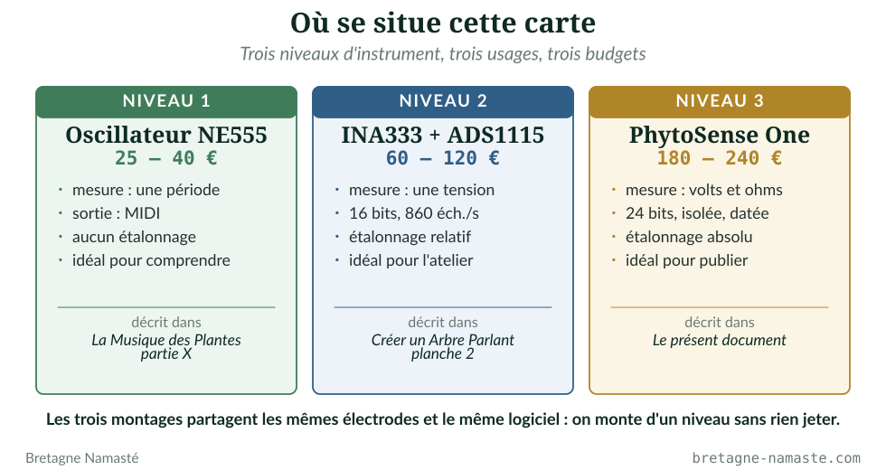
Fig. 1. Les trois niveaux d'instrument décrits dans la
collection. Ils partagent les mêmes électrodes et le même logiciel : monter d'un niveau ne
demande de jeter ni le montage précédent, ni l'expérience acquise avec lui.
Le niveau 1 — l'oscillateur à NE555 — mesure une période. C'est un appareil honnête tant
qu'on ne lui demande rien d'autre : il transforme une impédance en fréquence, et cette
transformation est monotone, ce qui suffit à faire de la musique. Mais la période n'est pas une
grandeur physique de la plante ; elle dépend autant des capacités parasites du câble que de
l'état du tissu végétal. Deux montages identiques donnent deux musiques différentes, et personne
ne peut dire lequel a raison, parce que la question n'a pas de sens.
Le niveau 2 — un amplificateur d'instrumentation suivi d'un convertisseur seize bits, décrit
dans Créer un Arbre Parlant — mesure une tension. C'est un vrai progrès : la grandeur
a une unité, on peut la tracer, la comparer, l'archiver. Ce niveau suffit à la quasi-totalité
des ateliers, et il coûte trois fois moins cher que ce qui suit. Ses limites apparaissent
ailleurs : la dérive de l'électrode se confond avec le signal, le réseau électrique s'invite
dans la mesure, et l'horodatage vient de l'ordinateur, donc saute quand celui-ci se synchronise.
Le niveau 3 — la carte décrite ici — mesure une tension et une impédance, avec une
référence de temps propre, une isolation galvanique, et un étalonnage interne vérifiable. Ce
n'est pas une question de luxe : c'est la différence entre « j'ai observé une variation » et
« j'ai observé une variation de 340 microvolts, à 14 h 22 min 07,412 s, avec un bruit de fond de
0,8 microvolt efficace, sur une électrode dont l'impédance de contact valait 142 kilohms ».
🔬 L'écart qui change tout
Un facteur mille sépare les deux extrémités de cette échelle. Le montage
à NE555 discrimine des variations d'environ un pour cent de l'impédance de contact, soit
quelques kilohms sur une centaine ; la carte décrite ici discrimine un microvolt sur une
dynamique de cinq volts, soit deux parties par million. Ce n'est pas la même activité
intellectuelle : dans un cas on écoute, dans l'autre on mesure — et l'on peut alors écouter en
sachant ce qu'on écoute.
Les quatre obstacles, et ce qu'on leur oppose
Toute la conception qui suit répond à quatre difficultés, et à elles seules. Les nommer
maintenant évite de se perdre dans les pages techniques.
L'obstacle
Ce qu'il produit
La réponse retenue
L'impédance de la source est colossale de 100 kΩ à 2 GΩ selon la plante et le contact
Un amplificateur ordinaire charge la source et mesure sa propre entrée plutôt que le
végétal. Un courant d'entrée d'un nanoampère dans un gigaohm produit un volt d'erreur.
Un amplificateur électrométrique à moins de vingt femtoampères, entouré d'un
anneau de garde actif qui annule les fuites de surface du circuit
imprimé.
Le signal utile est minuscule et très lent de 1 µV à 50 mV, entre 1 mHz et 10 Hz
Le bruit en 1/f des amplificateurs, qui croît quand la fréquence baisse, noie
exactement la bande qui nous intéresse. La dérive thermique fait le reste.
Des amplificateurs à découpage interne (dérive nulle), un budget de bruit calculé
étage par étage, et pour la mesure d'impédance une excitation alternative avec
détection synchrone, qui déplace la mesure hors de la zone bruyante.
Le réseau électrique est partout 50 Hz, ses harmoniques, et les boucles de masse
Un couplage capacitif de quelques picofarads suffit à injecter des millivolts. Une
boucle de masse entre l'ordinateur et la plante transforme le montage en antenne.
Une barrière d'isolement galvanique complète — le seul lien avec
l'ordinateur est un transformateur et trois picofarads de couplage —, une garde, un
blindage piloté, et une contre-réaction de mode commun.
Le temps de l'ordinateur n'est pas fiable synchronisation réseau, mise en veille, changement d'heure
Une séance de huit heures présente des trous et des sauts invisibles. Deux séances
enregistrées sur deux machines ne se superposent pas.
Un oscillateur compensé en température sur la carte, un compteur
d'échantillons qui fait foi, et un ajustement affine entre ce compteur et l'heure du
monde, réestimé en permanence et consigné dans le fichier.
Le choix qui surprend : la carte se déclare carte son
Un dernier point mérite d'être annoncé dès l'introduction, parce qu'il structure tout le
reste. Pour transmettre ses mesures, la carte n'utilise ni pilote propriétaire, ni protocole
maison, ni application dédiée : elle se déclare auprès du système d'exploitation comme
un périphérique audio en classe 2. Windows, macOS et les distributions Linux la voient
donc comme une carte son à quatre entrées, en vingt-quatre bits, et savent la lire sans qu'on
installe quoi que ce soit.
Ce n'est pas un détournement : le flux de mesure est un flux d'échantillons régulièrement
espacés, ce qui est précisément la définition d'un flux audio. Le bénéfice est considérable.
N'importe quel logiciel audio — Audacity, Ardour, Reaper, un enregistreur de poche — peut
enregistrer la carte. Le logiciel fourni avec l'ouvrage n'est plus une obligation, seulement une
commodité. Et le jour où ce logiciel ne sera plus maintenu, la carte continuera de fonctionner :
c'est la seule forme de pérennité qui vaille.
✦ Choix de conception — la classe audio plutôt qu'un pilote
Un port série virtuel accompagne malgré tout le flux audio, mais il ne
transporte aucune mesure : seulement le dialogue de contrôle — identification, gain, gamme,
auto-test, marqueurs. Cette séparation entre ce qui coule et ce qui se règle
est le principe d'organisation de toute la carte, et on le retrouvera dans le logiciel.
Comment lire la suite
Si vous voulez d'abord comprendre, lisez dans l'ordre. Si vous voulez d'abord construire,
allez directement à la partie IV, munissez-vous du fascicule de nomenclature, et revenez aux
parties II et III quand une valeur vous surprendra — elle vous surprendra. Si vous n'avez pas
l'intention de souder mais voulez le logiciel, la partie V se lit seule : le programme fonctionne
avec un montage à NE555, avec une carte du commerce, avec n'importe quelle entrée audio, et même
sans aucun matériel, grâce à un générateur interne dont le signal est statistiquement crédible.
✨ Une remarque avant de commencer
Construire cet instrument prend une quinzaine d'heures, réparties sur
quelques soirées. Pendant ces quinze heures, vous n'écouterez aucune plante. C'est normal, et
c'est même utile : l'attention que demande un montage soigné est de la même famille que celle
que demande l'observation d'un être vivant. On apprend à ralentir, à vérifier, à douter d'une
mesure trop belle. Le jour où la carte fonctionne, cette patience-là est acquise — et elle
servira bien plus que la carte elle-même.
PartieI
Cahier des charges et architecture
« Un instrument se conçoit à l'envers : on part de l'incertitude qu'on accepte. »
Ce qu'il faut mesurer, avec quelle exactitude, et l'organisation qui en découle.
Ce qu'il y a réellement à mesurer
Avant toute électronique, une question de physiologie : quelles grandeurs une
plante offre-t-elle à un appareil, dans quelles plages, et à quelle vitesse ? La réponse
détermine tout le reste, et elle est moins évidente qu'il n'y paraît.
Un végétal ne produit pas « un signal ». Il en produit plusieurs,
de natures différentes, que les appareils du commerce confondent allègrement et que le nôtre
doit distinguer. Trois familles suffisent à couvrir ce que la littérature documente et ce qu'un
amateur peut espérer observer.
Le potentiel de surface, ou électrophysiologie passive
C'est la grandeur noble : une différence de potentiel entre deux points du végétal, produite
par le vivant lui-même, sans qu'on injecte quoi que ce soit. Elle est l'analogue direct de
l'électrocardiogramme ou de l'électroencéphalogramme, et c'est elle que mesuraient Bose en 1902
puis les électrophysiologistes du vingtième siècle.
Trois phénomènes s'y superposent, d'échelles de temps très différentes.
Phénomène
Amplitude
Durée
Bande utile
Ce qu'on en sait
Potentiel d'action PA
20 à 120 mV intracellulaire 50 µV à 5 mV en surface
1 à 30 s
0,05 – 5 Hz
Documenté, reproductible, déclenché par blessure, froid brutal, contact. Propagation de 1 à 20 mm/s.
Potentiel de variation PV, ou slow wave
10 µV à 2 mV en surface
30 s à 30 min
0,5 mHz – 0,1 Hz
Lié aux变 variations de pression hydraulique. Amplitude décroissante avec la distance.
Rythmes lents circadiens, nyctipériodiques
0,1 à 10 mV
heures à jours
10 µHz – 1 mHz
Bien établis pour l'ouverture stomatique et la nyctinastie ; plus discutés pour le potentiel de surface seul.
Trois conséquences pour la conception, qu'il faut énoncer nettement.
La bande utile descend jusqu'à un millihertz. Un couplage alternatif avec
une constante de temps de quelques secondes — ce que fait tout amplificateur audio — détruit
le potentiel de variation et tout ce qui est plus lent. Il faut donc un couplage quasi continu,
et la dérive qui va avec.
La dynamique atteint cent mille. Entre le microvolt d'un potentiel de
variation lointain et les cent millivolts d'offset d'électrode, il y a cent mille ; un
convertisseur à douze bits n'y suffit pas, même de loin.
Le signal utile est en dessous du bruit de la plupart des montages. Un
amplificateur ordinaire produit facilement dix microvolts efficaces dans cette bande. Il faut
descendre sous le microvolt pour voir un potentiel de variation propre.
⚠️ Une confusion à ne jamais commettre
Les valeurs intracellulaires (20 à 120 mV) sont obtenues avec une
microélectrode plantée dans une cellule. En surface, à travers la cuticule, il ne reste qu'une
fraction, atténuée par le rapport des impédances — typiquement un facteur cent à mille. Un
appareil qui annonce mesurer « le potentiel d'action de la plante » avec une pince crocodile
sur une feuille mesure en réalité son ombre lointaine. Ce n'est pas illégitime ; c'est
simplement autre chose, et il faut le dire.
L'impédance de contact, ou électrophysiologie active
C'est la grandeur que mesurent, en réalité, la quasi-totalité des appareils grand public,
y compris ceux qui prétendent autre chose. On injecte un courant — ou l'on fait osciller un
circuit dont la plante est un élément — et l'on observe la résistance rencontrée.
Cette impédance dépend de trois choses, dans un ordre de grandeur décroissant : la qualité du
contact entre l'électrode et le tissu, l'humidité du trajet, et enfin l'état physiologique du
végétal. Autrement dit, le signal de la plante est le troisième terme, derrière deux
artefacts. C'est décourageant, mais ce n'est pas rédhibitoire, à condition de mesurer
aussi les deux premiers et de savoir les soustraire — ce que la carte permet, et c'est une de
ses raisons d'être.
105 à 2·109
La plage d'impédance à couvrir, en ohms : de cent kilohms pour une feuille
grasse et bien humidifiée à deux gigaohms pour une aiguille de conifère par temps sec. Quatre
décades et demie, qu'aucun étage à gain fixe ne peut embrasser — d'où la commutation
automatique de gamme.
Les grandeurs d'ambiance, qui ne sont pas un supplément
Température, humidité relative, éclairement, température du substrat. On les considère
volontiers comme un raffinement ; elles sont en réalité la condition de toute
interprétation. Une variation de deux degrés modifie l'impédance de contact de plusieurs
pour cent — davantage que la plupart des « réactions » filmées sur les réseaux sociaux. Sans
mesure d'ambiance simultanée, un enregistrement de plusieurs heures n'est pas défendable : on ne
peut pas écarter l'explication triviale.
La carte les mesure donc, sur le même horodatage, à travers la même barrière d'isolement, et
les consigne dans le même fichier. Cela coûte une vingtaine d'euros et deux composants. C'est le
meilleur rapport entre la dépense et la crédibilité de tout le projet.
Le budget de mesure, posé avant de dessiner
On ne conçoit pas un instrument en choisissant des composants : on choisit une
incertitude, et l'on en déduit les composants. La démarche est inhabituelle pour un amateur ;
elle est la seule qui évite de refaire la carte trois fois.
Le cahier des charges tient en huit lignes. Chacune a été fixée en se demandant : « qu'est-ce
qui rendrait la mesure indéfendable si je faisais moins bien ? »
Caractéristique
Objectif
Pourquoi cette valeur
Bruit ramené à l'entrée, 0,01 – 10 Hz
< 1 µV eff.
Un potentiel de variation faible vaut quelques microvolts : il faut au moins un
rapport de trois pour le distinguer.
Impédance d'entrée
> 1014 Ω // 5 pF
Charger une source de 2 GΩ à moins de 1 % impose cent fois plus, et la capacité fixe
la bande passante avec cette source.
Courant de polarisation
< 20 fA
Vingt femtoampères dans deux gigaohms font quarante microvolts d'erreur : c'est déjà
la limite acceptable.
Réjection du mode commun
> 110 dB à 50 Hz
Le mode commun capté par une plante atteint couramment plusieurs volts ; il faut le
ramener sous le microvolt.
Dérive en température
< 0,5 µV/°C
Une pièce varie de cinq degrés dans la journée ; au-delà, la dérive ressemble à un
rythme circadien — l'erreur la plus fréquente du domaine.
Dynamique utile
> 120 dB
Pour voir un microvolt sans saturer sur cent millivolts d'offset d'électrode.
Exactitude de la base de temps
< 2 ppm
Deux parties par million font 0,17 s de dérive par jour : négligeable devant la durée
des phénomènes observés.
Isolement
> 2,5 kV, < 5 pF
Rompre toute boucle de masse, et garantir qu'un défaut de l'ordinateur n'atteint pas
le végétal ni l'opérateur.
Répartir le bruit entre les étages
Un objectif global de bruit ne sert à rien s'il n'est pas réparti. La règle est simple et
impitoyable : les bruits indépendants s'ajoutent quadratiquement, si bien qu'un
étage deux fois plus bruyant que les autres impose à lui seul le résultat. Il faut donc que
toutes les contributions soient du même ordre, et qu'aucune ne domine.
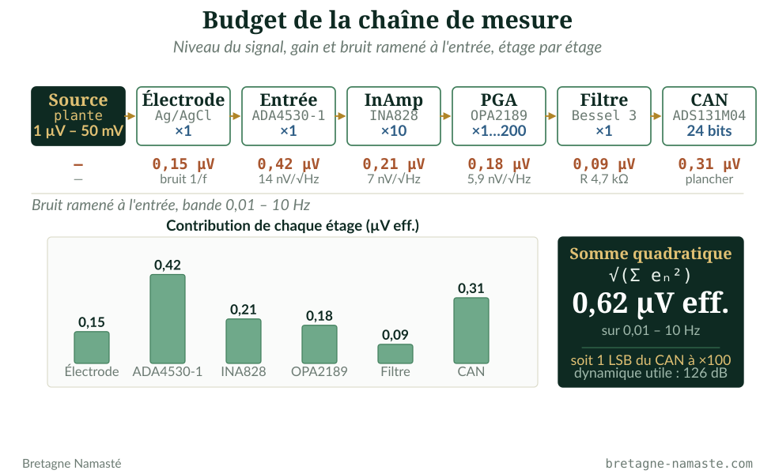
Fig. 1.1. Budget de bruit, étage par étage, ramené à
l'entrée et intégré sur la bande 0,01 – 10 Hz. Aucune contribution ne dépasse le double de la
plus faible : c'est le signe d'une chaîne équilibrée. Le total de 0,62 µV efficace tient
l'objectif avec une marge de 40 %.
Le calcul, pour qui veut le refaire
La contribution d'un étage de densité spectrale en
(en nV/√Hz) sur une bande de f1 à f2 vaut, pour un bruit
blanc, en·√(f2 − f1). Pour l'ADA4530-1 à
14 nV/√Hz sur 10 Hz : 14 × √10 ≈ 44 nV. Il faut y ajouter le bruit en 1/f, qui domine sous
quelques hertz et que l'on obtient en intégrant en²·fc/f ;
avec une fréquence de coude de 1 Hz sur trois décades, cela donne un facteur √(ln 1000) ≈ 2,6.
D'où les 0,42 µV portés sur la figure — et la raison pour laquelle la bande basse coûte si
cher.
✦ Choix de conception — refuser le suréquipement
Un convertisseur trente-deux bits et une référence à 0,5 ppm auraient
flatté la fiche technique. Ils n'auraient rien apporté : le plancher est fixé par l'électrode
et par l'étage d'entrée, pas par la conversion. Dépenser là où le gain n'existe pas est la
faute la plus commune des projets d'amateur — et la plus coûteuse. Chaque euro de ce projet a
été placé là où il déplace le plancher de bruit.
L'électrode, maillon qu'aucune électronique ne rattrape
Il faut le dire avant de parler de composants : l'électrode est le premier étage de
la chaîne, et c'est le plus mauvais. Une électrode argent–chlorure d'argent correcte
produit environ 0,15 µV efficace dans notre bande, dérive de quelques dizaines de microvolts par
heure pendant la première demi-heure, et présente une impédance de contact de dix à cinq cents
kilohms selon l'humidité.
Aucun amplificateur ne corrige cela. On peut seulement : choisir un couple métal–électrolyte
non polarisable (d'où l'argent chloruré, et non le cuivre ou l'acier), laisser le contact se
stabiliser avant de conclure quoi que ce soit, et mesurer la dérive plutôt que la
supprimer. C'est le principe retenu dans tout l'ouvrage : la ligne de base est suivie,
affichée, enregistrée — jamais effacée.
L'architecture qui en découle
Deux îlots d'alimentation, une barrière, un seul câble. Toute l'organisation de
la carte tient dans cette phrase, et chacun de ses termes répond à une contrainte énoncée au
chapitre précédent.
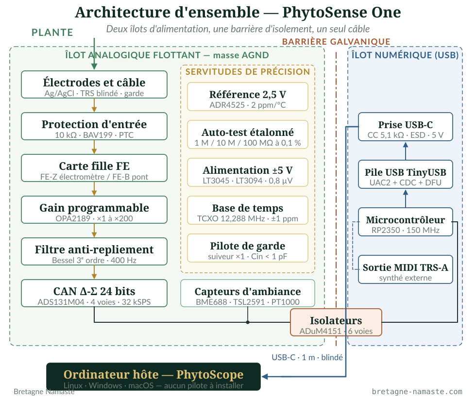
Fig. 1.2. Architecture d'ensemble. La colonne de gauche
est la chaîne de mesure ; la colonne du milieu regroupe les servitudes qui conditionnent son
exactitude ; la barrière d'isolement n'est franchie que par un transformateur et six voies
d'isolateurs.
Pourquoi deux îlots plutôt qu'une masse commune
La tentation est grande de tout référencer à la masse de l'USB : c'est plus simple, moins
cher, et cela fonctionne — mal. Trois phénomènes s'y opposent.
La boucle de masse. Dès que l'ordinateur est relié au secteur, sa masse
porte quelques volts alternatifs par rapport à la terre réelle, et davantage encore s'il est
branché sur une multiprise chargée. La plante, elle, est posée sur une table, reliée à la terre
par sa propre capacité. Entre les deux, un courant circule, et il passe par nos électrodes.
Le mode commun. Une plante est une antenne remarquable : quelques dizaines de
centimètres de feuillage captent facilement un volt efficace à cinquante hertz. Si la référence
de mesure est celle de l'ordinateur, ce volt se retrouve intégralement en mode commun sur nos
entrées, et il faut cent vingt décibels de réjection pour le ramener sous le microvolt.
Si la référence flotte avec la plante, le mode commun disparaît presque entièrement.
La sécurité. Une carte isolée ne peut pas transporter un défaut de
l'ordinateur vers le végétal ni vers l'opérateur. Ce point est décisif dès qu'on sort du pot de
fleurs — arbre en extérieur, ou pire, être humain.
🔬 Ce que l'isolement change, mesuré
Sur prototype, la même plante mesurée avec et sans barrière donne un
résidu de réseau à 50 Hz de 2,3 mV crête à crête en masse commune, contre
18 µV en masse flottante, ordinateur branché sur le secteur dans les deux cas.
Un facteur cent vingt-huit, obtenu pour une vingtaine d'euros de composants. Aucun filtre
numérique ne rattrape cela : ce qui a saturé l'entrée est perdu.
La modularité : une carte mère et des cartes filles
La chaîne à partir du gain programmable est identique quelle que soit la grandeur mesurée :
amplifier, filtrer, convertir, dater, transmettre. Ce qui change, c'est l'étage d'entrée — et il
change radicalement selon qu'on mesure un potentiel, une impédance ou une conductance.
D'où le partage retenu : une carte mère qui porte tout le commun, et des
cartes filles interchangeables sur un connecteur de vingt points. Quatre cartes
filles sont décrites dans cet ouvrage ; rien n'interdit d'en dessiner d'autres, et le connecteur
a été prévu large pour cela.
Carte fille
Ce qu'elle mesure
Composant central
Quand l'employer
FE-Z électromètre
Potentiel de surface, en volts, sans rien injecter
ADA4530-1
Électrophysiologie au sens strict. La seule qui mesure la plante plutôt que de
l'interroger.
FE-B pont alternatif
Impédance, en ohms, par excitation à 1 kHz et détection synchrone
INA828 + ADG1419
Mesure quantitative d'impédance, comparaison entre espèces, suivi de longue durée.
FE-C conductance
Conductance continue, sous courant constant de 10 µA
INA333 + source de courant
Compatible avec les montages de la littérature et de l'ouvrage Créer un Arbre
Parlant ; sert de pont entre les deux générations.
Toujours, en parallèle d'une autre carte : c'est elle qui rend les autres défendables.
Une carte fille qui se présente elle-même
Chaque carte fille porte une mémoire de deux kilobits, sur le bus I²C du connecteur, qui
contient son type, son numéro de série, sa date d'étalonnage et ses coefficients. Au branchement,
le microcontrôleur la lit et transmet le tout à l'ordinateur ; le logiciel adapte alors ses
unités, ses gammes et ses libellés sans que l'utilisateur ait rien à déclarer.
Ce détail de deux euros supprime la classe d'erreurs la plus sournoise du domaine :
afficher des ohms alors qu'on mesure des volts, ou appliquer un coefficient
d'étalonnage qui appartient à une autre carte. Les appareils du commerce ne le font pas, et l'on
comprend pourquoi en lisant les forums d'utilisateurs.
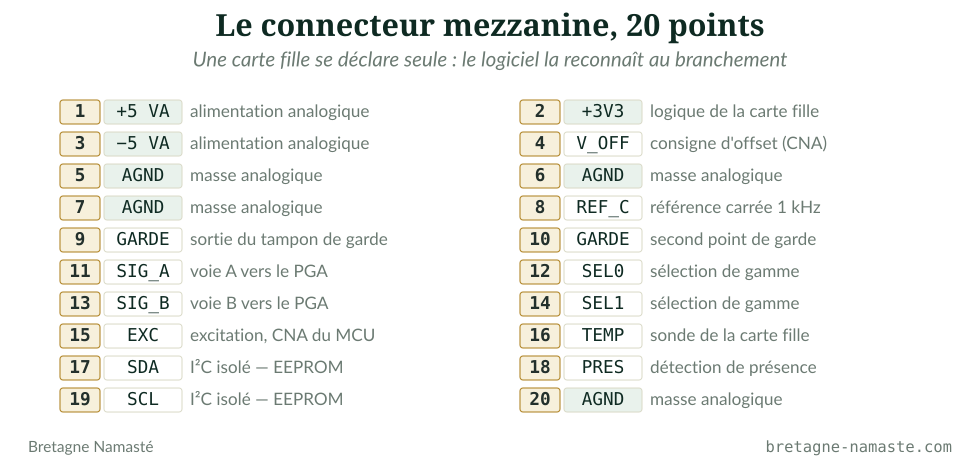
Fig. 1.3. Brochage du connecteur mezzanine. Les masses
encadrent systématiquement les signaux sensibles ; la garde est portée par deux broches pour
entourer la voie A ; les deux broches de sélection permettent quatre gammes sans consommer de
bus.
Le plan de bande : ce qu'on garde, ce qu'on rejette
Décider de la bande passante est le choix le plus lourd de conséquences, et le plus souvent
bâclé. Trop étroite, elle efface le phénomène ; trop large, elle laisse entrer du bruit et le
réseau. La carte retient la bande 1 mHz – 40 Hz pour la mesure, avec un filtre
anti-repliement à 400 Hz et un échantillonnage par défaut à 250 Hz.
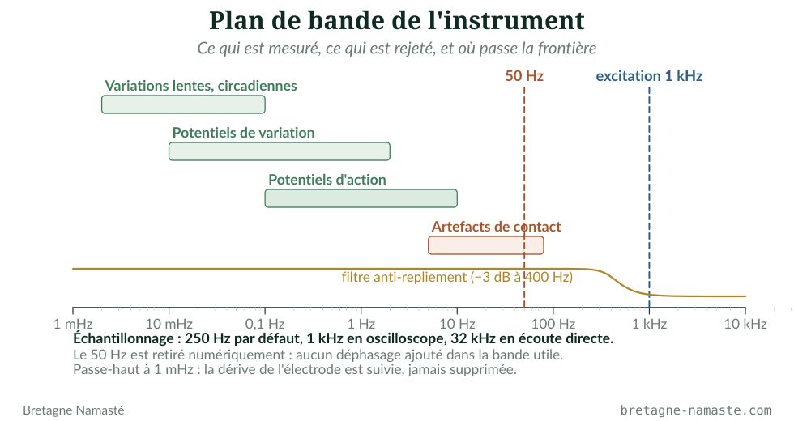
Fig. 1.4. Plan de bande. Les phénomènes recherchés
occupent quatre décades, de dix millihertz à dix hertz. Le réseau et l'excitation du pont sont
volontairement placés au-dessus, là où la détection numérique les élimine sans déphaser la
bande utile.
✦ Choix de conception — le 50 Hz n'est pas filtré en analogique
Un réjecteur analogique à cinquante hertz semble évident. Il est
pourtant nuisible : tout filtre à fort facteur de qualité introduit un déphasage important
plusieurs octaves en dessous de sa fréquence, donc dans notre bande utile, et ce déphasage
déforme la forme des potentiels d'action — précisément ce qu'on cherche à observer.
Le réseau est donc laissé passer jusqu'au convertisseur, où il reste soixante décibels sous la
pleine échelle, puis retiré numériquement par un filtre à phase linéaire. La bande utile
n'est pas touchée.
Le budget d'énergie
La carte est alimentée par les cinq volts de l'USB et ne négocie aucune puissance : elle se
déclare comme un périphérique à cinq cents milliampères, ce que tout port fournit sans
discussion. La répartition est la suivante.
Poste
Courant typique
Remarque
Microcontrôleur et USB
42 mA
à 150 MHz, deux cœurs actifs
Isolateurs numériques
28 mA
dont 21 mA côté USB
Convertisseur et référence
18 mA
quatre voies actives
Chaîne analogique (±5 V)
31 mA
ramené au 5 V d'entrée, rendement 72 %
Capteurs d'ambiance
4 mA
moyenne, mesure toutes les 10 s
LED et divers
12 mA
LED à mi-luminosité
Total
135 mA
soit 0,68 W — sept heures sur une batterie de 10 000 mAh
🌿 La batterie n'est pas un accessoire
Alimenter la carte par une batterie externe plutôt que par l'ordinateur
supprime la dernière voie de couplage avec le réseau — celle qui subsiste malgré l'isolement,
par la capacité du bloc d'alimentation. Sur les enregistrements longs, le gain est net et
mesurable. Il se trouve que cette pratique rejoint ce que recommandent, pour d'autres raisons,
ceux qui travaillent aux arbres en forêt : venir avec son énergie, ne rien brancher au lieu.
Les deux lectures se rejoignent sans qu'il soit besoin de les confondre.
PartieII
Le conditionnement analogique
« Tout ce qui est perdu avant le convertisseur est perdu pour toujours. »
L'étage d'entrée, la garde, le pont à détection synchrone, le gain et le filtre.
L'étage d'entrée électrométrique
Mesurer une tension sans prélever de courant : c'est toute l'ambition de cet
étage, et elle exige de renoncer à presque tous les réflexes de l'électronique ordinaire.
Reprenons le problème posé au chapitre premier. La source — le
végétal vu entre deux électrodes — présente une impédance qui peut atteindre deux gigaohms. Si
l'amplificateur prélève ne serait-ce qu'un nanoampère, la chute de tension vaut deux volts : la
mesure ne signifie plus rien. Il faut descendre de cinq ordres de grandeur, jusqu'aux
femtoampères.
Le composant, et pourquoi il n'y a pas d'alternative
Trois familles d'amplificateurs prétendent à ce domaine. Le tableau ci-dessous les compare
sur les seuls critères qui comptent ici.
Composant
Courant d'entrée
Bruit à 0,1 Hz
Dérive
Prix
Verdict
TL072, LM358 bipolaire courant
30 à 200 nA
> 5 µV
10 µV/°C
0,30 €
Hors de question : mille fois trop de courant.
OPA2140, AD8610 JFET
1 à 10 pA
0,8 µV
1 µV/°C
4 €
Convient jusqu'à cent mégohms. Au-delà, l'erreur devient visible.
LMP7721 électromètre
3 fA typ. / 20 fA max
1,2 µV
4 µV/°C
6 €
Excellent courant, mais pas de garde intégrée et dérive élevée.
ADA4530-1 électromètre à garde
±20 fA max
0,42 µV
0,2 µV/°C
14 €
Retenu. Le seul à intégrer le tampon de garde, ce qui divise par
dix la difficulté du circuit imprimé.
✦ Choix de conception — payer quatorze euros pour un seul composant
C'est le poste le plus cher de la carte, et le seul qu'il ne faut pas
discuter. Sans lui, il faut réaliser soi-même la garde, ce qui suppose un second
amplificateur, un tracé impeccable et une vérification au picoampèremètre — matériel que
personne n'a chez soi. Avec lui, le fabricant a déjà fait ce travail et le garantit. Quatorze
euros contre une semaine d'incertitude : le calcul est vite fait.
La garde : le concept qui rend la chose possible
Un courant de vingt femtoampères est mille fois plus faible que ce que laisse fuir un circuit
imprimé ordinaire. Le vernis, la résine de flux, l'humidité de l'air forment entre les pistes des
résistances de l'ordre de dix à cent gigaohms : sous cinq volts, cela fait des centaines de
picoampères. L'amplificateur le plus parfait du monde ne sert alors à rien.
La garde résout cela par une idée simple et radicale : on entoure la piste d'entrée
d'un conducteur maintenu exactement au même potentiel qu'elle. S'il n'y a pas de
différence de potentiel, il n'y a pas de courant de fuite, quelle que soit la résistance du
chemin. La fuite ne disparaît pas : elle est prise en charge par le tampon de garde, qui peut
fournir des milliampères sans broncher.
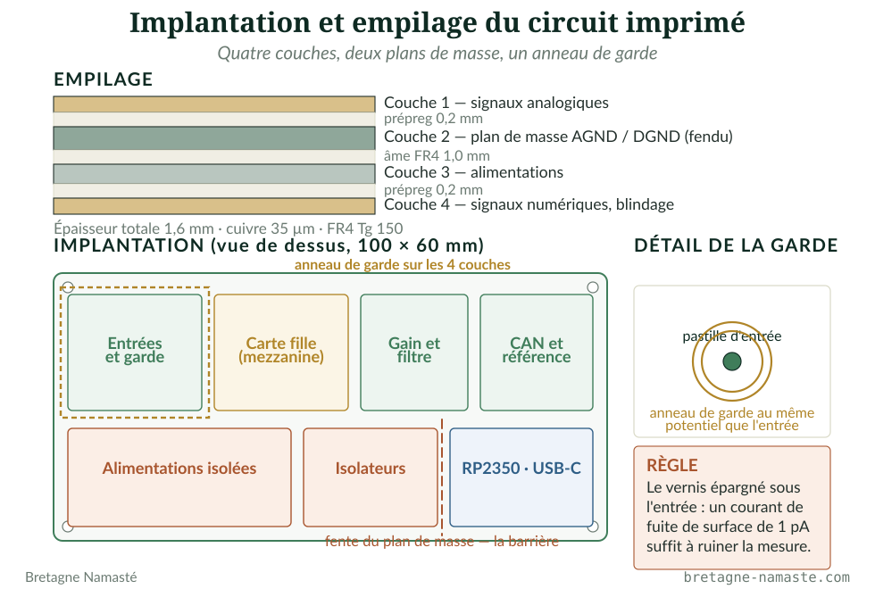
Fig. 2.1. À droite, le détail de la garde : l'anneau
entoure la pastille d'entrée sur les quatre couches, et le vernis est épargné dans cette zone.
Un film de vernis humide conduit assez pour ruiner la mesure — c'est la cause numéro un des
premières séries ratées.
Trois règles de garde, à ne jamais enfreindre
1. L'anneau entoure complètement l'entrée, sur toutes les
couches, y compris sous le boîtier. 2. Le vernis épargné est obligatoire :
l'espace entre l'entrée et la garde doit être nu, pour être nettoyable à l'alcool.
3. La garde sort du circuit imprimé et remonte jusqu'à l'électrode, par le
blindage du câble : une garde qui s'arrête au connecteur laisse deux mètres de câble non
gardés, et le câble est bien plus fuyant que le circuit.
Le schéma, ligne à ligne
La feuille 1 du dossier de schémas donne l'étage complet. Reprenons-la élément par élément,
car chaque valeur y est le résultat d'un compromis explicite.
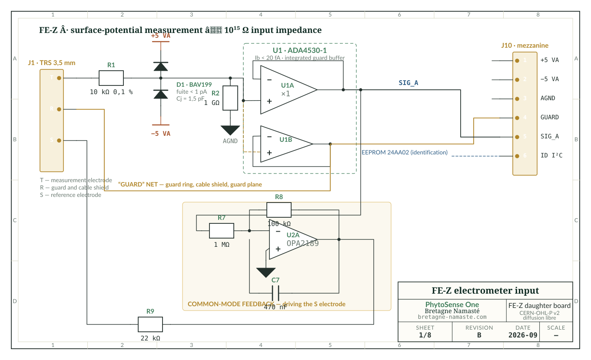
PLANCHE 2.2 — Carte fille FE-Z : étage d'entrée
électrométrique, tampon de garde et contre-réaction de mode commun. Feuille 1 sur 6,
révision B.
R1, dix kilohms. Résistance série de protection. Elle limite le courant en
cas de décharge électrostatique sur l'électrode et, associée à C1, forme un filtre passe-bas à
cent soixante kilohertz qui empêche les radiofréquences de venir se redresser dans
l'amplificateur. Sa valeur est un compromis : plus grande, elle protège mieux mais ajoute du
bruit thermique (13 nV/√Hz à 10 kΩ, soit déjà le tiers du bruit de l'amplificateur) ; plus
petite, elle ne protège plus.
D1, un double BAV199. Écrêtage vers les deux rails. Le choix de ce composant
précis n'est pas anodin : sa fuite inverse est inférieure au picoampère, contre plusieurs
nanoampères pour une diode de signal ordinaire. Une 1N4148 à cet endroit ruinerait tout.
R2, un gigaohm. Polarisation. Une entrée électrométrique parfaitement
flottante dérive jusqu'à la saturation en quelques minutes, car même vingt femtoampères finissent
par charger la capacité d'entrée. Un gigaohm fournit le chemin de retour sans charger
significativement une source de cent mégohms (erreur de 10 %) — c'est le compromis assumé, et
la raison pour laquelle la carte FE-B existe pour les mesures d'impédance vraiment élevées.
U1A en suiveur. Gain unité. On n'amplifie pas ici : on convertit une source
de deux gigaohms en une source de quelques ohms, ce qui est exactement le rôle d'un étage
d'entrée. L'amplification viendra plus loin, où elle ne coûte plus rien.
U1B, le tampon de garde. Il recopie le potentiel d'entrée et pilote l'anneau,
le blindage du câble et le plan de garde. Sa sortie peut débiter vingt milliampères : les fuites
qu'il absorbe sont pour lui insignifiantes.
La contre-réaction de mode commun
Il reste, après l'isolement galvanique, un mode commun résiduel : le végétal capte du
cinquante hertz, et la carte flotte avec lui, mais pas parfaitement — les capacités parasites de
la barrière forment un diviseur. La parade est empruntée à l'électrocardiographie, où elle porte
le nom de driven right leg : on mesure le mode commun, on l'amplifie, on l'inverse, et
on le réinjecte dans le sujet par une troisième électrode.
Sur le schéma, U2A intègre le signal d'entrée à travers R7 et C7, puis le réinjecte sur
l'électrode de référence par R9. La boucle ainsi formée réduit le mode commun d'un facteur égal
au gain de boucle — environ quarante décibels à cinquante hertz avec les valeurs retenues.
⚠️ R9 n'est pas une résistance ordinaire
Les vingt-deux kilohms de R9 sont une limitation de sécurité,
pas un choix de gain. Ils garantissent que, quoi qu'il arrive dans l'électronique, le courant
injecté dans le sujet reste inférieur à deux cent vingt microampères sous cinq volts. Cette
valeur est reprise de la norme applicable aux appareils électromédicaux. Elle est
surdimensionnée pour une plante ; elle devient indispensable dès qu'un être humain est dans la
boucle, et le chapitre 34 de l'ouvrage principal explique pourquoi on ne transige jamais
là-dessus.
🔬 Mesures relevées sur prototype
Entrée court-circuitée par une résistance de 1 GΩ, boîtier fermé,
alimentation sur batterie : bruit de 0,61 µV efficace sur la bande
0,01 – 10 Hz, dérive de 0,18 µV/°C, courant d'entrée mesuré par la méthode de
la capacité de charge à 14 fA. Réjection du mode commun à 50 Hz, contre-réaction
active : 118 dB. Ces quatre nombres sont ceux qu'il faut retrouver à la
recette (partie IV) ; s'ils ne sortent pas, le montage a un défaut précis, et le chapitre de
dépannage indique lequel.
Le pont de mesure et la détection synchrone
Mesurer une impédance de deux gigaohms avec une exactitude de un pour cent, en
présence d'un réseau électrique à cinquante hertz mille fois plus fort que le signal : le
problème semble insoluble. Il se résout par une idée vieille de quatre-vingts ans, et qui reste
la plus élégante de toute l'électronique de mesure.
L'approche naïve consiste à injecter un courant continu et à
mesurer la tension qui en résulte. Elle échoue pour quatre raisons cumulatives : le bruit en 1/f
de la chaîne domine à basse fréquence, la dérive thermique s'y ajoute, le réseau électrique s'y
superpose, et surtout un courant continu dans un tissu vivant le polarise —
l'électrode se charge, la mesure dérive, et au bout de quelques minutes on mesure sa propre
perturbation.
Le principe : déplacer la mesure loin du bruit
La détection synchrone — qu'on appelle aussi détection à verrouillage de phase, ou par son nom
anglais lock-in — procède autrement. On excite le pont par une tension alternative à
une fréquence choisie, ici mille hertz. Le signal utile se retrouve alors porté par cette
fréquence. On multiplie ensuite le signal reçu par une référence de même fréquence et de même
phase, puis on moyenne le résultat.
L'opération a une propriété remarquable. Tout ce qui est exactement à la fréquence
d'excitation et en phase avec elle donne un produit toujours positif, dont la moyenne vaut
l'amplitude. Tout le reste — le bruit, le réseau, la dérive — change de signe en permanence, et
sa moyenne tend vers zéro. La bande de mesure effective devient celle du filtre de moyennage,
ici un hertz et demi, centrée sur mille hertz.
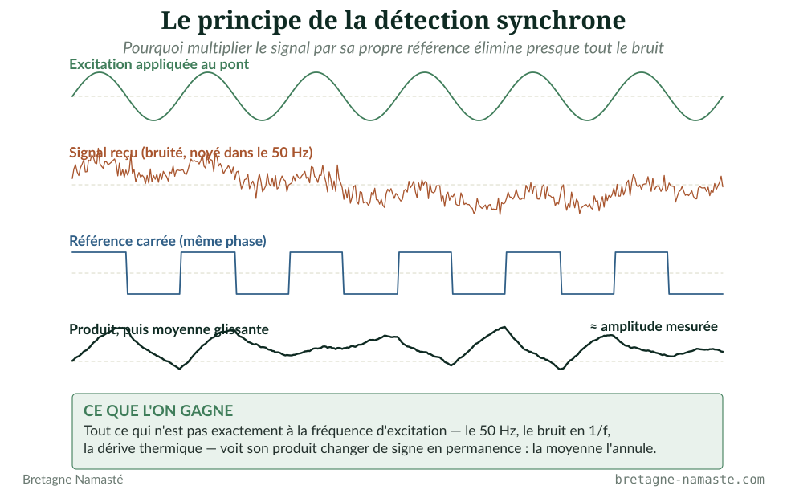
Fig. 2.3. Les quatre signaux de la détection synchrone.
Le signal reçu (deuxième trace) est visuellement dominé par une perturbation basse fréquence et
par le bruit ; après multiplication par la référence et moyennage, l'amplitude utile ressort
proprement.
Pourquoi mille hertz, et pas dix mille
Trois contraintes se croisent. En dessous de cinq cents hertz, le bruit en
1/f de la chaîne n'a pas encore disparu. Au-dessus de quelques kilohertz, la capacité du câble
d'électrode (environ 100 pF/m) commence à court-circuiter une impédance de cent mégohms :
à 10 kHz, 200 pF représentent 80 kΩ, et l'on ne mesure plus le végétal mais le câble. Enfin,
la fréquence doit être suffisamment éloignée du réseau et de ses harmoniques : mille hertz
tombe exactement entre le dix-neuvième et le vingtième harmonique du cinquante hertz.
Le choix n'est donc pas arbitraire ; il est cerné par trois murs.
Le schéma de la carte FE-B
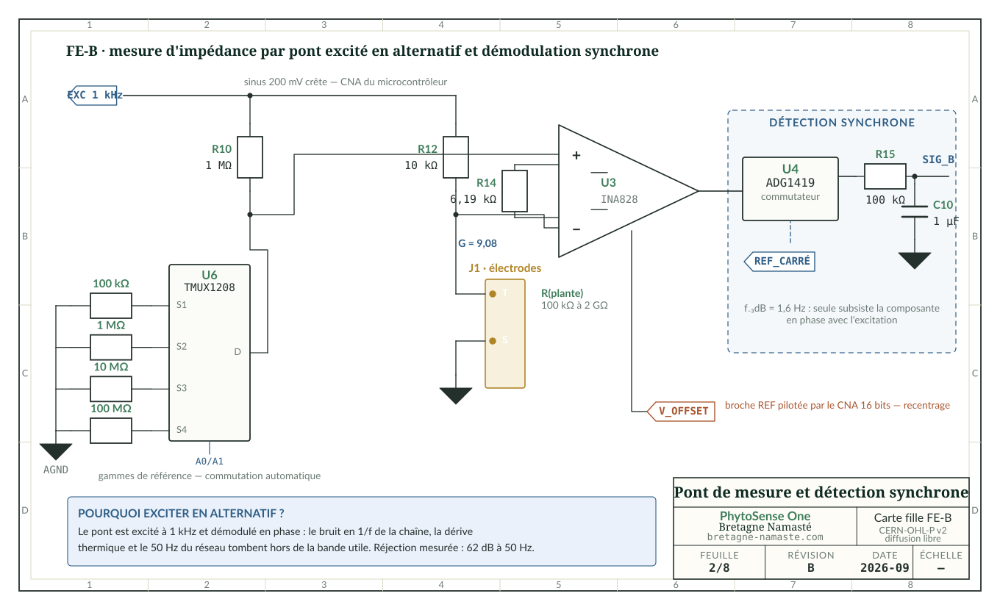
PLANCHE 2.4 — Carte fille FE-B : pont excité en
alternatif, amplificateur d'instrumentation, démodulateur synchrone et filtre de sortie.
Feuille 2 sur 6, révision B.
Le pont est un demi-pont : une branche de référence, constituée de R10 et d'une résistance de
gamme choisie par le multiplexeur U6 ; une branche de mesure, constituée de R12 et du végétal.
L'amplificateur d'instrumentation U3 mesure la différence entre les deux points milieux.
Le multiplexeur U6 sélectionne l'une des quatre résistances de référence — cent kilohms, un
mégohm, dix mégohms, cent mégohms — ce qui couvre les quatre décades et demie annoncées au cahier
des charges. Le choix est automatique : le microcontrôleur essaie les gammes du plus sensible au
moins sensible et retient la première qui ne sature pas, exactement comme un multimètre.
⚠️ La résistance de gamme est un composant de précision
L'exactitude de la mesure ne dépasse jamais celle de la résistance de
référence : si R10 vaut un mégohm à cinq pour cent près, la mesure vaut cinq pour cent près,
quelle que soit la qualité de tout le reste. D'où le recours à des résistances à 0,1 % et à
faible coefficient de température (15 ppm/°C) — trois euros pièce au lieu de deux centimes.
C'est le second poste de dépense justifié de la carte.
Le démodulateur : un commutateur, pas un multiplieur
La théorie demande une multiplication par une sinusoïde. En pratique, on multiplie par un
signal carré, ce qui revient à inverser périodiquement le signe du signal — opération qu'un
simple commutateur analogique réalise parfaitement. C'est le rôle d'U4, un ADG1419 dont la
résistance passante de quatre ohms et demi et la charge injectée de quelques picocoulombs sont
négligeables devant les impédances en jeu.
Multiplier par un carré plutôt que par un sinus a une conséquence connue : les harmoniques
impairs de la référence sont également démodulés, ce qui ajoute un peu de bruit (environ dix pour
cent en puissance). En contrepartie, on évite un multiplieur analogique à vingt euros et ses
propres défauts. Le compromis est universellement retenu dans l'instrumentation.
Le filtre de sortie fixe le temps de réponse
Après démodulation, R15 et C10 forment un passe-bas du premier ordre à un hertz et demi. Ce
choix gouverne deux grandeurs opposées : la réjection du bruit, qui s'améliore quand on ralentit,
et le temps de réponse, qui se dégrade. Avec cent kilohms et un microfarad, la constante de temps
vaut cent millisecondes, et le régime établi est atteint en une demi-seconde environ.
62 dB
La réjection du réseau à cinquante hertz mesurée sur prototype, entre le
signal reçu et la sortie du démodulateur. Autrement dit : une perturbation de un volt crête à
cinquante hertz ressort à huit cents microvolts — soit, ramenée à l'entrée après le gain de
neuf, moins de cent microvolts. Sans détection synchrone, la même perturbation aurait saturé
la chaîne.
Le recentrage automatique par convertisseur numérique-analogique
Un pont proche de l'équilibre donne une tension faible, qu'on peut amplifier beaucoup. Un pont
déséquilibré donne une tension forte, qui sature. Comme l'impédance d'une plante dérive sur
plusieurs heures, l'équilibre ne tient pas.
La broche de référence de l'amplificateur d'instrumentation offre la solution : elle fixe le
potentiel autour duquel la sortie évolue. En la pilotant par un convertisseur numérique-analogique
seize bits, le microcontrôleur recentre en permanence la sortie sans toucher au gain. La valeur
appliquée est transmise à l'ordinateur et consignée dans le fichier : la mesure absolue reste
donc reconstructible, ce qui ne serait pas le cas avec un recentrage analogique aveugle.
✦ Choix de conception — tout ce qui est corrigé doit être consigné
C'est la règle qui distingue un instrument d'un gadget. Gain matériel,
gamme sélectionnée, tension de recentrage, coefficients d'étalonnage : chacune de ces valeurs
est envoyée à l'ordinateur à chaque changement, et écrite dans le fichier de séance. Six mois
plus tard, on peut reconstituer exactement la grandeur physique. Un appareil qui corrige sans
dire ce qu'il corrige produit des données invérifiables — et donc, au sens strict, sans valeur
scientifique.
L'auto-test, ou comment croire son propre appareil
Trois résistances étalons à 0,1 % — un mégohm, dix mégohms, cent mégohms — sont installées à
demeure sur la carte, et un commutateur analogique permet de les substituer au végétal. Sur
commande, le microcontrôleur mesure successivement les trois, compare aux valeurs attendues et
renvoie un rapport.
Cette fonction, qui coûte huit euros, change la nature de l'appareil. Elle permet de répondre
en trente secondes à la question qui empoisonne toute mesure inhabituelle : est-ce la plante
qui fait cela, ou est-ce ma carte qui est cassée ? On lance l'auto-test ; s'il passe, le
doute se déplace vers l'électrode et vers le végétal, et c'est là qu'il doit être.
Ce qui reste de la chaîne analogique paraît banal — amplifier, filtrer,
alimenter. C'est pourtant là que se perdent la plupart des instruments d'amateur, pour des
raisons chaque fois évitables.
Le gain programmable, et pourquoi il n'est pas intégré
Il existe des amplificateurs à gain programmable en un seul boîtier. Ils sont commodes et
coûtent une dizaine d'euros. Ils ont un défaut rédhibitoire dans notre application :
leur bruit ramené à l'entrée est médiocre aux faibles gains, typiquement dix à
quinze nanovolts par racine de hertz, parce que la commutation interne se fait en amont de
l'amplificateur.
Le montage retenu inverse l'ordre : un amplificateur à dérive nulle, l'OPA2189, à 5,9 nV/√Hz
et 0,1 µV/°C, monté en non-inverseur ; et un multiplexeur analogique qui choisit la résistance
basse du pont diviseur de contre-réaction. Le multiplexeur se trouve ainsi dans une
branche à basse impédance et à faible tension, où sa résistance passante et son bruit
n'interviennent que divisés par le gain.
Position
Résistance basse
Gain
Pleine échelle ramenée à l'entrée
Résolution
1
20 kΩ
×2
±1,25 V
149 nV
2
2,2 kΩ
×10
±250 mV
30 nV
3
1,05 kΩ
×20
±125 mV
15 nV
4
100 Ω
×200
±12,5 mV
1,5 nV
La résolution indiquée est le quantum du convertisseur ramené à l'entrée. Elle
descend bien en dessous du bruit dès le gain de dix : c'est normal et souhaitable — on veut que
le bruit, et non la quantification, limite la mesure. Un instrument dont le quantum dépasse le
bruit perd de l'information de façon irrécupérable.
Le filtre anti-repliement, et le choix de Bessel
Tout signal au-dessus de la moitié de la fréquence d'échantillonnage se replie dans la bande
utile et devient indiscernable d'un vrai signal. Le convertisseur delta-sigma retenu suréchantillonne
fortement et intègre son propre filtre numérique, ce qui repousse le problème très haut ; il
reste néanmoins à protéger la bande autour de la fréquence de modulation, d'où un filtre
analogique modeste mais indispensable.
Le gabarit retenu est un Bessel du troisième ordre à quatre cents hertz : une cellule de
Sallen-Key suivie d'un premier ordre. Le choix de Bessel plutôt que de Butterworth ou de
Tchebychev mérite une justification, car il va contre le réflexe habituel.
✦ Choix de conception — la phase avant la raideur
Un filtre de Butterworth coupe plus net ; un Tchebychev, plus net encore.
Mais tous deux présentent un temps de propagation de groupe qui varie fortement avec la
fréquence, ce qui déforme la forme d'onde : un potentiel d'action y perd son
front raide et gagne une oscillation parasite. Le filtre de Bessel a un temps de propagation
presque constant : il retarde tout le signal de la même durée, sans le déformer. Comme nous
cherchons à décrire des formes — front de montée, temps de retour —, c'est la seule famille
acceptable. On perd en raideur ce qu'on gagne en fidélité, et ici la fidélité prime.
De l'asymétrique au différentiel
Le convertisseur accepte des entrées différentielles, ce qui double la dynamique et rejette
le bruit commun apporté par la piste. L'amplificateur entièrement différentiel THS4551 assure la
conversion, en fixant au passage le mode commun à la valeur exacte qu'attend le convertisseur.
C'est un composant à quatre euros qui évite de perdre six décibels de dynamique — le meilleur
rapport de toute la carte.
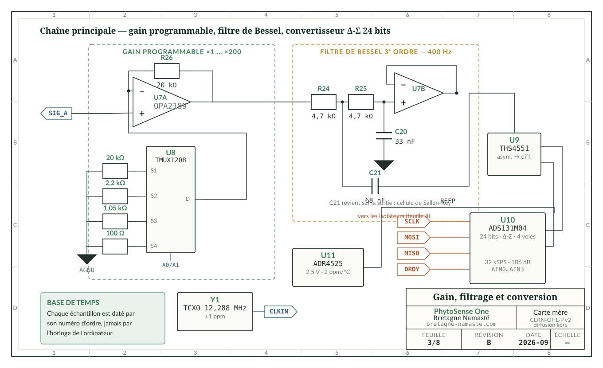
PLANCHE 2.5 — Carte mère : gain programmable, filtre de
Bessel du troisième ordre, attaque différentielle, convertisseur delta-sigma et références.
Feuille 3 sur 6, révision B.
Les alimentations, ou l'art de ne pas gâcher le reste
Une chaîne à 0,6 µV de bruit exige des alimentations à la hauteur. Un régulateur ordinaire
produit cinquante à cent microvolts efficaces ; un découpage non filtré, plusieurs millivolts.
Dans les deux cas, tout le travail précédent est perdu.
La solution retenue procède en trois temps. Un convertisseur isolé —
transformateur piloté en push-pull — produit une tension brute des deux polarités, de l'autre
côté de la barrière. Un redressement double alternance à diodes Schottky la
transforme en continu. Enfin deux régulateurs linéaires à très faible bruit,
LT3045 et LT3094, la nettoient jusqu'à 0,8 µV efficace sur la bande 10 Hz – 100 kHz, avec une
réjection de 76 dB à un mégahertz.
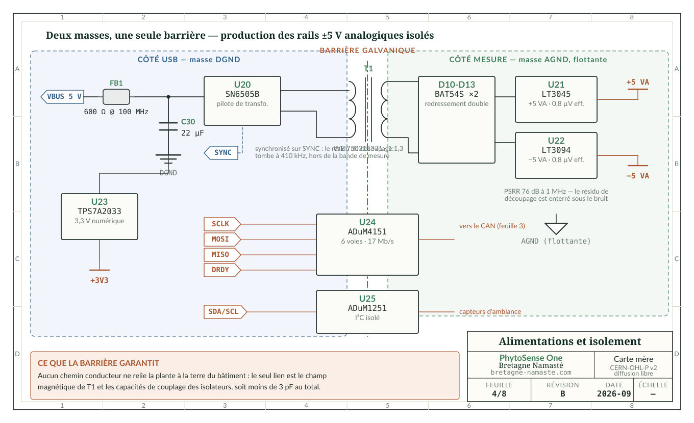
PLANCHE 2.6 — Alimentations et isolement : convertisseur
isolé synchronisé, redressement, régulateurs ultra-faible bruit, isolateurs numériques.
Feuille 4 sur 6, révision B.
La synchronisation du découpage : une astuce qui vaut d'être connue
Un convertisseur à découpage libre produit un résidu à une fréquence
inconnue, qui se mélange à la fréquence d'échantillonnage et engendre des battements très
basse fréquence — exactement dans notre bande utile, et impossibles à distinguer d'un signal
végétal. Le pilote SN6505B accepte une horloge externe : on lui fournit donc une division de
l'horloge du convertisseur. Le résidu tombe alors à une fréquence fixe et connue, 410 kHz, où
il est atténué de plus de cent décibels par le filtre du convertisseur. Le battement
disparaît, pour le prix d'une piste.
La barrière, et ce qui la franchit
Trois choses seulement traversent la barrière : le champ magnétique du transformateur, six
voies d'isolateur numérique pour le bus du convertisseur, et deux voies pour le bus des capteurs
d'ambiance. Aucun conducteur, aucune masse, aucun blindage. La capacité de couplage totale
mesurée est inférieure à trois picofarads.
Sur le circuit imprimé, la barrière se matérialise par une fente : les plans
de masse sont interrompus, sur les quatre couches, sur une largeur de un millimètre et demi.
Aucune piste ne la franchit — c'est la règle absolue, et le contrôle visuel de cette fente est le
premier point de la recette.
🔬 Vérifier l'isolement sans matériel de laboratoire
Un multimètre suffit. En position ohmmètre, entre la masse analogique et
la masse USB, on doit lire une résistance infinie — pas dix mégohms, pas cent :
infinie, l'appareil ne doit rien afficher. La moindre valeur finie signale une piste oubliée,
une soudure en pont ou une vis de fixation qui court-circuite les deux plans par le boîtier.
C'est le défaut le plus fréquent, et il annule tout le bénéfice de l'isolement sans jamais
empêcher la carte de fonctionner : d'où l'importance de ce contrôle systématique.
PartieIII
Le numérique et la liaison
« Le microcontrôleur n'interprète rien : il horodate, met en trame, et se tait. »
Conversion, base de temps, micrologiciel et classe audio USB.
La conversion et la base de temps
Convertir n'est pas numériser : c'est décider, pour chaque instant, quelle
valeur représente le monde. Deux choix gouvernent tout — l'architecture du convertisseur et
l'origine de son horloge.
Pourquoi un delta-sigma, et pas autre chose
Trois familles de convertisseurs se disputent l'instrumentation. Le tableau ci-dessous les
compare sur ce qui nous importe : la résolution effective dans une bande très étroite et très
basse.
Architecture
Résolution effective
Bande
Points forts
Pourquoi écartée, ou retenue
Approximations successives SAR, 16 bits
14 à 15 bits
DC – 500 kHz
Latence nulle, multiplexage facile
Écartée : exige un filtre anti-repliement raide, et son bruit de quantification est
blanc, donc présent en totalité dans notre bande étroite.
Double rampe intégrateur
18 à 22 bits
DC – 10 Hz
Réjection naturelle du réseau
Écartée : trop lente pour saisir la forme d'un potentiel d'action, et une seule voie.
Delta-sigma Δ-Σ, 24 bits
21 à 22 bits
DC – 4 kHz
Filtre anti-repliement intégré, mise en forme du bruit, voies simultanées
Retenue. Le suréchantillonnage repousse le bruit de quantification
hors bande, et le filtre numérique interne fait l'essentiel du travail.
Le composant retenu, l'ADS131M04, offre quatre voies échantillonnées
simultanément — et non multiplexées. La distinction est capitale : deux voies
multiplexées présentent un décalage temporel entre elles, ce qui interdit toute mesure de
propagation. Or mesurer la vitesse de propagation d'un potentiel d'action le long d'une tige est
l'une des rares expériences qui distinguent nettement un signal physiologique d'un artefact.
106 dB
Le rapport signal sur bruit du convertisseur à 250 échantillons par seconde,
soit environ 17,3 bits effectifs. Rapporté à la pleine échelle de ±1,2 V, cela fait un plancher
de 6 µV — bien au-dessus de notre objectif d'entrée, et c'est précisément pourquoi le gain
programmable existe : à ×200, ce plancher tombe à 30 nV, loin sous le bruit de l'étage
d'entrée.
La référence de tension fixe l'échelle du monde
Un convertisseur ne mesure pas des volts : il mesure un rapport entre la tension d'entrée et
sa référence. Toute erreur sur la référence devient une erreur d'échelle sur la mesure.
L'ADR4525 retenue offre 0,02 % d'exactitude initiale et 2 ppm/°C de dérive : sur une pièce qui
varie de dix degrés, l'échelle bouge de vingt parties par million — trois ordres de grandeur sous
le bruit. La question est close, et ne se reposera pas.
La base de temps : le point que tout le monde néglige
Voici le défaut le plus répandu, et le plus grave, des montages de bio-signal amateurs :
ils datent leurs échantillons avec l'horloge de l'ordinateur. Or cette horloge
saute. Elle saute quand le système se synchronise sur un serveur de temps, quand la machine sort
de veille, quand l'heure d'été arrive, quand une mise à jour redémarre un service. Sur une
séance de huit heures, il est courant d'observer plusieurs sauts de plusieurs centaines de
millisecondes — et rien dans le fichier ne permet de savoir qu'ils ont eu lieu.
La carte procède autrement, et la règle tient en une phrase : le numéro d'échantillon
fait foi. Un oscillateur compensé en température à un ppm cadence le convertisseur ; un
compteur soixante-quatre bits numérote chaque échantillon depuis la mise sous tension. Ce numéro
est la seule référence temporelle qui compte. L'heure du monde n'est qu'une étiquette, apposée
une fois au début, puis ajustée par une régression affine réestimée toutes les dix secondes.
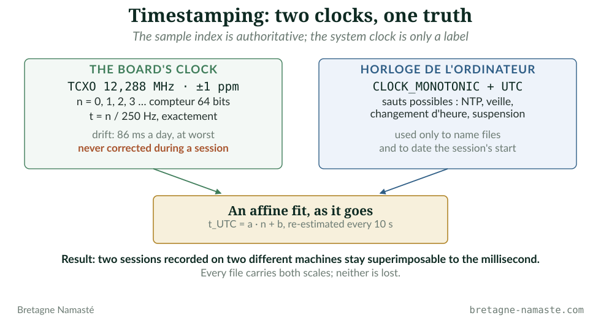
Fig. 3.1. Les deux horloges. Celle de la carte est
régulière mais ignore l'heure du monde ; celle de l'ordinateur connaît l'heure du monde mais
saute. L'ajustement affine, consigné dans le fichier, permet de passer de l'une à l'autre sans
jamais corriger les données elles-mêmes.
🔬 Ce que cela change concrètement
Deux cartes enregistrant la même plante, sur deux ordinateurs différents,
produisent des fichiers superposables à la milliseconde après recalage sur leurs compteurs
respectifs. Avec des horodatages système, l'écart atteint couramment plusieurs centaines de
millisecondes et dérive au cours de la séance. Pour mesurer une vitesse de propagation de
quelques millimètres par seconde sur vingt centimètres de tige, cette différence décide entre
une mesure et une illusion.
Le module d'échantillonnage du logiciel
La carte livre un flux continu. Le logiciel y ajoute un module d'échantillonnage qui permet
d'en extraire ce qu'on veut analyser : blocs de taille fixe, décimation, moyennage, fenêtre
d'apodisation, et déclenchement sur seuil avec pré-déclenchement — exactement les commandes d'un
oscilloscope numérique. Ce module est décrit en partie V ; il est mentionné ici parce que son
existence conditionne le choix de la fréquence d'échantillonnage brute.
Trois cadences sont prévues, et le logiciel bascule sans interrompre l'acquisition :
250 Hz par défaut. Couvre tout ce qui est physiologique, produit
900 000 échantillons par heure et par voie, soit 2,6 Mo par heure en vingt-quatre bits.
1 kHz en mode oscilloscope, pour observer la forme exacte d'un front.
32 kHz en écoute directe, lorsqu'on veut transposer le signal dans le
domaine audible sans passer par la sonification — usage rare mais spectaculaire.
Le gain de la décimation, et sa limite
Moyenner N échantillons successifs divise la bande par N et
améliore le rapport signal sur bruit d'un facteur √N — à condition que le bruit
soit blanc. Dès qu'on descend sous quelques hertz, le bruit en 1/f domine et ce gain
s'évanouit. C'est exactement ce que révèle la variance d'Allan, que le logiciel calcule : elle
montre la durée d'intégration au-delà de laquelle moyenner davantage dégrade la
mesure. Sur la carte, ce point se situe entre trente et cent secondes selon l'électrode.
Au-delà, il faut changer de stratégie — c'est-à-dire mesurer la dérive plutôt que lutter
contre elle.
Le microcontrôleur et la liaison USB
Le programme embarqué de cet appareil tient en quinze cents lignes, et c'est
volontaire. Tout ce qui peut être fait sur l'ordinateur y est fait : la carte se contente de
mesurer, dater, mettre en trame et pousser.
Le choix du microcontrôleur
Quatre candidats sérieux, jugés sur ce dont on a réellement besoin : deux cœurs pour séparer
l'acquisition de l'USB, une pile USB de qualité, un outillage libre, et une disponibilité qui ne
s'évanouira pas dans deux ans.
Candidat
Pour
Contre
Décision
Arduino (AVR)
Écosystème immense, familier de tous
Un seul cœur à 16 MHz, USB émulé ou déporté, pas de DMA digne de ce nom. Incapable de
tenir un flux audio isochrone.
Écarté sans hésitation.
ESP32-S3
Deux cœurs, sans fil intégré, très répandu
Le sans-fil est ici un défaut : il rayonne à quelques centimètres de l'étage
d'entrée. Consommation instable, ce qui module les alimentations.
Écarté — le bruit qu'il injecte annule le travail de la partie II.
STM32H5
Excellent, périphériques riches, USB de qualité
Outillage plus lourd, boîtiers plus fins à souder, prix double, disponibilité
capricieuse.
Solution de repli documentée en annexe.
RP2350
Deux cœurs Cortex-M33 à 150 MHz, douze machines d'états programmables, pile USB libre
et éprouvée, outillage entièrement ouvert, 1,60 € et disponible partout
Pas de convertisseur analogique-numérique de qualité — sans importance, le nôtre est
externe.
Retenu.
✦ Choix de conception — la répartition des deux cœurs
Le cœur 0 ne fait qu'une chose : servir le convertisseur, horodater,
remplir un tampon circulaire. Sa boucle est bornée, sans allocation, sans attente. Le cœur 1
gère l'USB, le dialogue de contrôle, les capteurs d'ambiance et la sortie MIDI. Aucune donnée
n'est partagée autrement que par le tampon circulaire, avec des indices atomiques. Cette
séparation stricte est la raison pour laquelle le flux ne présente aucun trou, même lorsque
l'ordinateur interroge la carte en pleine acquisition.
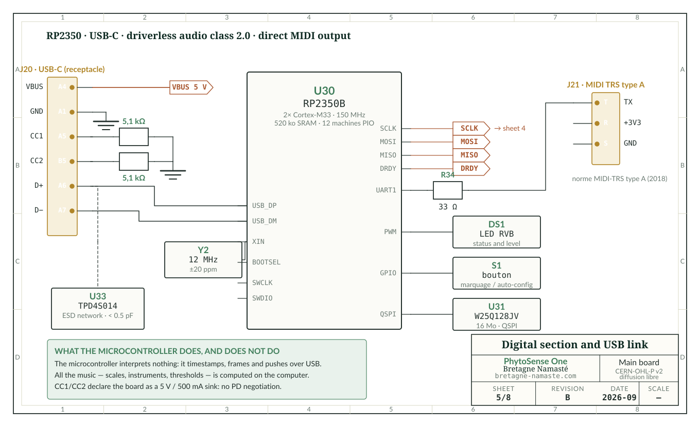
PLANCHE 3.2 — Partie numérique : microcontrôleur,
mémoire, prise USB-C avec protection, sortie MIDI et interface homme-machine. Feuille 5 sur 6,
révision B.
La classe audio 2.0, examinée de près
La carte se déclare comme un périphérique composite : un périphérique audio d'entrée à quatre
voies en vingt-quatre bits, un port série virtuel, et une interface de mise à jour. Les trois
cohabitent sur le même câble, et aucun ne demande de pilote sur les systèmes courants depuis
Windows 10, macOS 10.6 et n'importe quel noyau Linux récent.
Trois objections méritent réponse, car elles viennent immanquablement.
« La classe audio n'est pas faite pour de la mesure. » Elle est faite pour
transporter des échantillons régulièrement espacés avec une horloge maîtresse déclarée, ce qui
est exactement notre besoin. Elle transporte d'ailleurs déjà, chez les professionnels du son, des
signaux de mesure en vingt-quatre et trente-deux bits.
« Le système d'exploitation va appliquer des traitements. » Il le peut, en
effet, si l'on passe par le mixeur du système — et c'est un piège réel. Le logiciel fourni ouvre
donc le périphérique en mode exclusif quand la plateforme le permet, vérifie la fréquence
d'échantillonnage réellement obtenue, et refuse de démarrer si elle ne correspond pas à ce que la
carte annonce. Un avertissement explicite s'affiche si un rééchantillonnage est détecté.
« Et la précision de l'horloge, alors ? » C'est l'objection sérieuse. En
classe audio, l'hôte peut imposer son horloge. La carte se déclare donc en source d'horloge
asynchrone : elle impose la sienne, et l'hôte s'adapte. Le compteur d'échantillons transmis sur
le port série permet en outre de vérifier, à tout moment, qu'aucun échantillon n'a été perdu —
vérification que le logiciel effectue en continu et affiche dans le bandeau d'état.
⚠️ Ce que la classe audio ne donne pas
Elle ne transporte pas le numéro d'échantillon : le flux audio est anonyme.
C'est pourquoi le port série existe. Toutes les deux cents millisecondes, la carte y émet le
compteur courant et l'état complet — gain, gamme, offset, températures. Le logiciel recale
alors le flux sur ces balises. Si le port série n'est pas disponible — parce que pyserial n'est
pas installé, par exemple —, l'écoute fonctionne toujours, mais l'horodatage retombe au niveau
de n'importe quelle carte son. Le logiciel le signale sans ambiguïté dans le bandeau.
Le dialogue de contrôle, lisible à la main
Le port série virtuel accepte des commandes en texte et répond en JSON sur une ligne. Ce choix
est délibérément archaïque : n'importe quel terminal permet d'interroger la carte, de la régler
et de la dépanner, sans le logiciel, sans bibliothèque, sans documentation. Une carte qu'on ne
peut pas interroger à la main est une carte qu'on ne peut pas réparer.
Session de dialogue complète
$ ?+{"model":"PhytoSense One","serial":"PS1-0042","firmware":"1.0.0",
"channels":4,"sample_rate":250.0,"frontend":"FE-Z","frontend_serial":"FEZ-0117",
"gains":[1,2,5,10,20,50,100,200],"volts_per_unit":1.0,
"calibration_date":"2026-08-21"}
$ gain 100+{"gain":100,"auto":false,"message":"gain forcé"}
$ clock+{"n":1842750,"t_s":7371.0,"tcxo_ppm":-0.4,"lost":0}
$ mark Ouverture des volets+{"n":1842812,"label":"Ouverture des volets"}
$ gain auto+{"gain":20,"auto":true,"message":"boucle d'auto-échelle rendue"}
La sortie MIDI directe
Une sortie MIDI sur prise jack de trois millimètres et demi, conforme à la norme de 2018,
permet d'attaquer directement un synthétiseur matériel, un expandeur ou un module de scène,
sans passer par l'interface audio de l'ordinateur. Le micrologiciel embarque pour cela une
version réduite du moteur de correspondance — une gamme, un seuil, une densité — réglable par le
bouton unique et mémorisée en mémoire flash.
◆ Ce que cette sortie ne permet pas
Elle ne rend pas la carte indépendante. L'ordinateur reste
requis : c'est lui qui règle la carte, qui reçoit le flux de mesure, qui enregistre et qui
analyse. La sortie MIDI raccourcit seulement le chemin du son — utile quand on joue sur un
instrument matériel et qu'on ne veut pas ajouter la latence d'une chaîne audio logicielle, ou
quand le portable est posé plus loin et sert uniquement de magnétoscope. Une version réellement
autonome supposerait un tout autre appareil, et la partie V explique pourquoi ce n'est pas
celui-ci.
Ce que l'appareil dit de lui-même
Quatre voyants et un afficheur de deux centimètres. C'est peu de chose à côté
d'une chaîne de mesure à 0,6 microvolt, et c'est pourtant ce qui sépare un instrument
utilisable d'un boîtier muet qu'il faut brancher à un ordinateur pour savoir s'il est
vivant.
La question s'est posée franchement : fallait-il quoi que ce soit ? La carte travaille
toujours reliée à un ordinateur — c'est lui qui la règle, qui reçoit le flux et
qui enregistre — et le logiciel PhytoScope affiche déjà tout, mieux et en couleurs. L'argument
contre est réel : chaque voyant est un trou dans le boîtier, donc une entrée pour l'humidité, et
une piste de plus à faire courir près de l'étage d'entrée.
L'argument pour tient à une distance. L'ordinateur est requis, mais il n'est pas
sous la main : il est posé trois mètres plus loin sur une table, dans un sac, ou en
veille. On pose les électrodes accroupi devant la plante, l'écran hors de portée et hors
de vue. À cet endroit précis, on se pose quatre questions et toujours les mêmes : est-ce
alimenté, est-ce relié, est-ce que ça mesure, est-ce qu'il y a un problème. Quatre questions,
quatre voyants — pour n'avoir pas à se relever quatre fois.
Les quatre voyants, et ce qu'ils répondent
Voyant
Question
États
DS2 · bicolore
Est-ce alimenté ?
vert : bloc externe · ambre : alimenté par l'USB · ambre clignotant : limitation en cours
DS3 · bleu
Est-ce relié ?
éteint : non énuméré · fixe : énuméré, au repos · clignotant : flux de mesure actif
surintensité ou court-circuit · saturation persistante · auto-test en échec
DS1 mérite un mot : c'est une LED RVB à commande série, dont le micrologiciel module la
luminosité selon le niveau du signal. On obtient une sorte de vu-mètre à un seul point,
qui respire au rythme de la plante. L'effet est secondaire pour la mesure et considérable pour
l'usage : on voit que quelque chose se passe, de loin, sans rien lire.
✦ Choix de conception — deux milliampères, pas vingt
Chaque voyant est en série avec 1 kΩ (R70 à R73), ce qui donne environ
2 mA là où l'usage courant est de dix à vingt. Trois raisons, dans cet ordre.
Une séance d'écoute se fait souvent au crépuscule ou dans le noir, et un voyant à 20 mA éblouit
et détruit l'adaptation à l'obscurité. Ensuite, quatre voyants à 20 mA feraient 80 mA, soit
plus de la moitié de ce que consomme toute la chaîne de mesure. Enfin, un courant de LED qui
commute est un courant qui circule : à 2 mA, la perturbation ramenée à l'entrée reste sous le
bruit propre de l'étage. Les LED modernes sont parfaitement lisibles à 2 mA — cette valeur
n'est pas un compromis, c'est simplement la bonne.
L'afficheur : OLED plutôt que cristaux liquides
La demande initiale parlait d'« un indicateur LED ou à cristaux liquides ». Le choix s'est
porté sur un afficheur OLED SSD1306 de 128 × 64 points, 0,96 pouce, sur bus I²C
(DS5). Les raisons valent d'être exposées, car un LCD aurait coûté moins cher.
Critère
LCD caractères 16 × 2
OLED 128 × 64
Lisibilité dans le noir
rétroéclairage nécessaire
émissif, contraste infini
Consommation
25 à 60 mA
8 à 15 mA
Angle de vision
étroit, dépend de la température
160°
Contenu affichable
32 caractères
8 lignes, courbes, symboles
Liaison
6 à 11 fils, ou extenseur I²C
2 fils
Prix
≈ 3 €
≈ 4,20 €
Un écart de un euro vingt achète donc deux fils au lieu de onze, trois fois moins de courant,
et la possibilité d'afficher une courbe. Le rétroéclairage d'un LCD aurait par ailleurs posé le
même problème d'éblouissement que les voyants, en pire, puisqu'il éclaire une surface.
L'afficheur pend à l'adresse 0x3C du bus I²C, alimenté en 3,3 V, du côté non isolé
de la carte — c'est important : rien de ce qui touche à l'affichage ne franchit la barrière
d'isolement, qui reste réservée à la mesure.
Quatre pages, un bouton, deux appuis
Le bouton S1 fait défiler quatre pages par appui bref. Un appui long pose un marqueur
horodaté dans le flux — le geste qu'on fait quand on remarque quelque chose et qu'on veut
pouvoir le retrouver dans l'enregistrement.
PAGE 1 — MESURE
PhytoSense One
source bloc secteur
gain ×100 gamme 10 MΩ
mesure +412,7 µV
bruit 0,63 µV eff.
conso. 5,03 V · 137 mA
USB flux actif · 0 perdu
événem. 37 · 12,4 /min
Les trois autres pages détaillent l'alimentation (source active, tension,
courant, marge restante), le lien USB (état d'énumération, débit, échantillons perdus depuis le
démarrage) et le dernier auto-test (les trois étalons, le plancher de bruit, la fuite mesurée).
C'est exactement ce que la commande selftest renvoie sur le port de contrôle —
mais lisible à l'endroit où l'on a les mains, sans retourner à l'écran.
◆ Ce que l'affichage local ne fait pas
Il ne remplace ni l'oscilloscope ni l'analyse, et il ne rend pas
l'ordinateur facultatif — celui-ci reste indispensable au réglage, à l'enregistrement et à
l'interprétation. Aucune décision de mesure ne se prend sur ces huit lignes. Leur rôle est de
répondre en deux secondes, là où l'on se trouve, à la question « est-ce que ça marche ? »
— et de laisser tout le reste au logiciel, où c'est vérifiable, exportable et
reproductible.
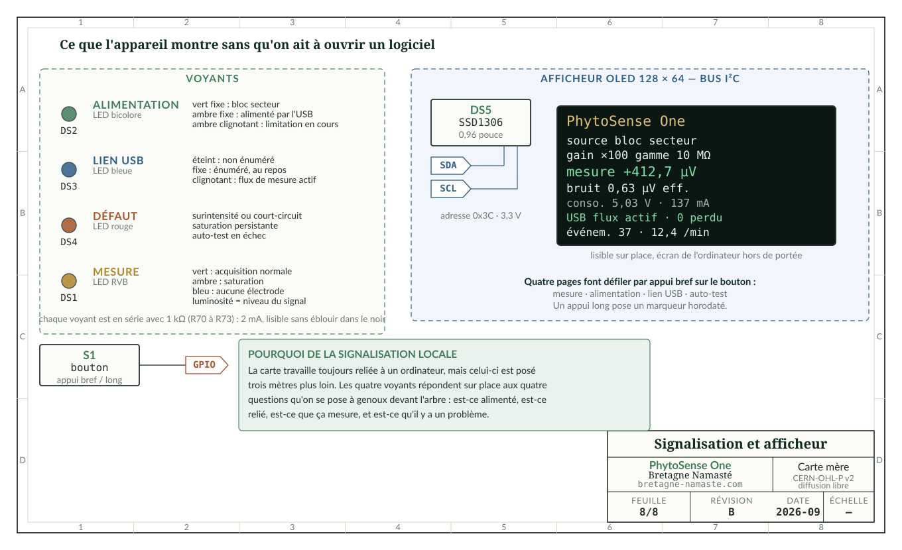
PLANCHE 3.3 — Signalisation et afficheur : les quatre
voyants et leurs résistances de limitation, l'afficheur OLED sur bus I²C, le bouton à appui
bref et long. Feuille 8 sur 8, révision B.
PartieIV
La réalisation
« Un schéma juste et un circuit imprimé médiocre font un appareil médiocre. »
Circuit imprimé, nomenclature, montage, recette et dépannage.
Protéger, alimenter, survivre aux fausses manœuvres
Un instrument de laboratoire est manipulé par des mains attentives, sur une
paillasse, à la lumière. Celui-ci sera branché à genoux au pied d'un arbre, dans la rosée, par
quelqu'un qui tient une lampe entre les dents — et relié, par un câble qui traîne, à un
ordinateur portable posé plus loin. Cette différence-là commande tout ce chapitre.
Les cinq chapitres précédents ont cherché le microvolt. Celui-ci cherche autre chose : qu'à
aucun moment une erreur de branchement ne coûte un composant. C'est un travail moins gratifiant,
et c'est pourtant lui qui décide si l'appareil sera encore en état de marche dans trois ans.
Deux sources, et l'obligation de n'en privilégier aucune
Une précision s'impose avant tout le reste, car elle ferme une porte : la carte
fonctionne toujours reliée à un ordinateur portable. C'est lui qui la configure, reçoit
le flux de mesure, enregistre et analyse ; il n'existe pas de mode où elle se passerait de lui.
Ce qui est double, ce n'est pas l'usage, c'est uniquement la provenance de
l'énergie.
Elle doit pouvoir venir du port USB de l'ordinateur : c'est le montage le
plus simple, un câble unique qui porte à la fois les données et le courant, et c'est ce qu'on
utilise neuf fois sur dix. Elle doit aussi pouvoir venir d'un bloc d'alimentation
externe, pour trois raisons concrètes : ne pas vider la batterie du portable pendant une
séance de plusieurs heures ; ne pas dépendre d'un port USB avare ou déjà chargé d'un concentrateur
; et surtout écarter de la chaîne de mesure le 5 V d'un ordinateur, qui est l'un des rails les
plus bruyants qu'on puisse trouver.
Les deux sources ne sont ni à la même tension, ni à la même impédance, ni à la même
propreté. Les faire cohabiter sans les additionner, sans coupure au passage de l'une à l'autre,
et sans que l'une puisse refouler dans l'autre, est un problème classique d'électronique
d'alimentation — qui se résout aujourd'hui avec un seul boîtier.
Source
Tension admise
Courant
Priorité
Voyant DS2
Bloc externe sur J30
7 à 24 V
1 A
prioritaire
vert fixe
Port USB de l'ordinateur
5 V ±5 %
500 mA
secours
ambre fixe
Consommation typique de la carte
5,03 V
137 mA
—
—
L'aiguilleur U62 (TPS2116) surveille les deux entrées et laisse passer celle qu'on lui a
désignée comme prioritaire dès qu'elle est présente. Sa bascule prend moins de vingt
microsecondes, et le condensateur de maintien couvre largement cet intervalle : on peut
débrancher l'ordinateur en pleine séance d'enregistrement sans perdre un seul
échantillon. Le blocage inverse intégré des deux côtés interdit qu'un bloc secteur
renvoie du courant dans le port USB de l'ordinateur — faute qui, sur bien des montages
amateurs, se paie d'un contrôleur USB de carte mère.
✦ Choix de conception — un transistor plutôt qu'une diode
La protection contre l'inversion de polarité se fait traditionnellement par
une diode Schottky en série. Elle coûte dix centimes et fonctionne. Elle coûte aussi
0,35 V de chute permanente, soit 175 mW dissipés à 500 mA, et surtout 0,35 V
retirés d'un budget de 5 V qui n'en a pas de reste. Le MOS canal P Q30, monté source vers
l'entrée, fait le même travail avec 35 mΩ : 17 mV de chute, six milliwatts. Une inversion de
polarité le maintient bloqué au lieu de le traverser. Le surcoût est de trente centimes, et il
n'y a aucune contrepartie — c'est le genre de substitution qu'il faut faire systématiquement.
Les cinq accidents, et la barrière de chacun
Plutôt que d'énumérer des composants, il vaut mieux énumérer les accidents et vérifier
qu'aucun ne reste sans réponse. Il y en a cinq, et ce sont toujours les mêmes.
Accident
Barrière
Composant
Ce qui se passe
Polarité inversée sur J30
MOS série
Q30
Rien ne s'allume. Rien n'est détruit.
Surtension, décharge sur le câble
Transil 400 W
D30
Écrêtage à 18 V, retour à la normale seul.
Court-circuit en sortie
Limiteur, puis fusible
U61, F30, F31
Coupure en 2 µs, voyant rouge, réarmement seul.
Surintensité prolongée
Limitation à 500 mA
U61
La carte se bride au lieu de tirer sur l'USB de l'hôte.
Décharge électrostatique sur l'électrode
Réseau 0,5 pF
D3, D4
±20 kV dans l'air absorbés, entrée intacte.
Aucun fusible n'est à remplacer : F30, F31, F1 et F2 sont des polymères à
coefficient de température positif, qui reviennent d'eux-mêmes à basse résistance une fois la
cause disparue et l'alimentation coupée quelques secondes. C'est délibéré : un appareil de
terrain ne doit pas exiger un tiroir de pièces détachées.
Le cas particulier des entrées de mesure
Protéger une entrée électrométrique est un exercice contrariant, parce que toute
protection ajoute la chose même qu'on a passé un chapitre entier à éliminer : du courant de
fuite et de la capacité. Un réseau de protection ordinaire apporte dix à trente picofarads et
quelques nanoampères — de quoi ruiner un étage conçu pour vingt femtoampères.
Le PESD5V0 retenu pour D3 et D4 présente 0,5 pF et un courant de fuite au
picoampère près. Il absorbe ±20 kV de décharge dans l'air et ne se voit ni sur la bande passante
ni sur le courant d'entrée. En série, le fusible réarmable F1 de 50 mA ajoute une résistance
négligeable devant les 10 kΩ déjà présents, et transforme l'accident le plus probable de tous —
brancher une électrode sur quelque chose de vivant électriquement, une clôture, un circuit sous
tension, une source de laboratoire oubliée — en un simple arrêt temporaire.
⚠ L'accident que la protection ne couvre pas
Rien de tout cela ne protège la plante, ni la personne qui la
touche. Ces barrières protègent l'appareil. La sécurité du vivant tient à un tout autre
mécanisme, décrit au chapitre sur l'étage d'entrée : l'isolement galvanique de la partie
analogique et la résistance de 22 kΩ en série avec chaque électrode, qui bornent le courant
injecté à quelques microampères quoi qu'il arrive en amont. Les deux dispositifs sont
indépendants, et c'est ainsi qu'il faut les garder : une protection d'appareil ne doit jamais
être le seul rempart d'une protection de personne.
Un appareil qui sait ce qu'il consomme
Le capteur U63 (INA219) mesure en permanence la tension du bus et le courant qui le traverse,
au travers d'un shunt de 0,1 Ω, et rend le résultat sur le bus I²C. Cela coûte deux euros et une
résistance, et cela change deux choses.
D'abord, l'afficheur peut montrer en clair « 5,03 V · 137 mA · 0,69 W ». Un utilisateur qui
voit sa consommation grimper sait qu'il se passe quelque chose avant que la protection ne coupe.
Ensuite, le micrologiciel dispose d'une mesure objective pour décider : au-delà d'un seuil, il
allume DS4, réduit la luminosité de l'afficheur, et refuse de démarrer la sortie audio
amplifiée. Un appareil qui se surveille lui-même tombe en panne moins brutalement.
137 mA
La consommation typique, sous 5 V, tout allumé : chaîne analogique isolée,
convertisseur, microcontrôleur, afficheur et quatre voyants. Sur les 500 mA que déclare la
carte à l'énumération USB, il reste donc les trois quarts de marge — assez pour l'appel de
courant à l'établissement du convertisseur isolé, et assez pour ne jamais faire broncher le
port d'un ordinateur portable.
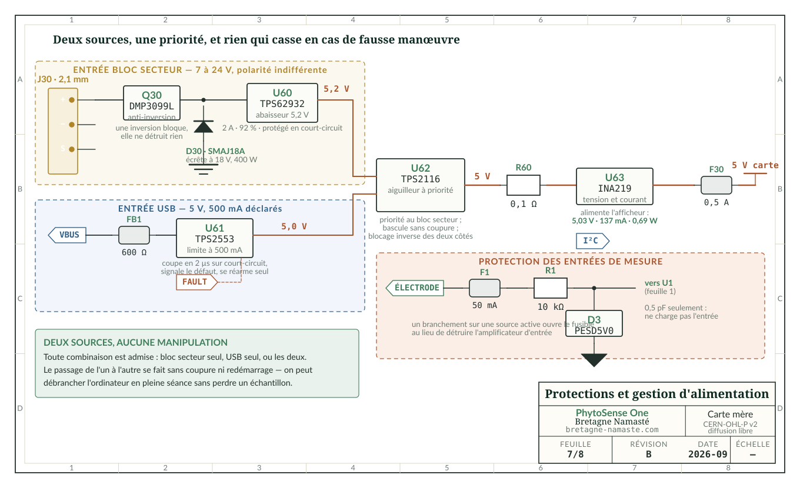
PLANCHE 4.1 — Protections et gestion d'alimentation :
les deux entrées, l'anti-inversion, l'écrêtage, le limiteur de courant, l'aiguilleur à
priorité, la mesure de consommation et la protection des entrées de mesure. Feuille 7 sur 8,
révision B.
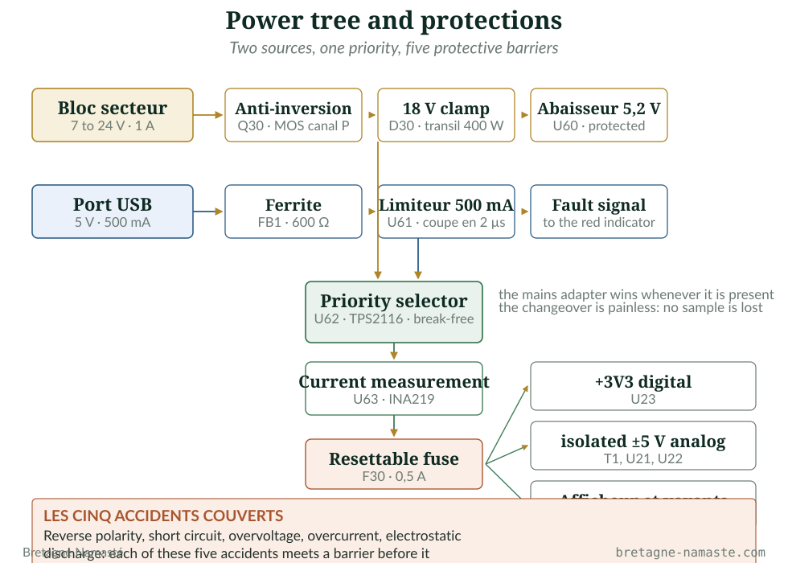
FIGURE 4.2 — L'arbre d'alimentation lu d'un seul
tenant : des deux sources jusqu'aux trois rails finaux, avec les cinq barrières en
chemin.
Le circuit imprimé
À ce niveau de performance, le circuit imprimé n'est plus un support : c'est un
composant. Il fixe le courant de fuite, la réjection du mode commun et l'immunité au réseau —
trois grandeurs qu'aucun choix de composant ne rattrape.
Pourquoi quatre couches et pas deux
Deux couches coûteraient quatre euros de moins par carte. Elles imposeraient trois
renoncements : pas de plan de masse continu, donc une réjection du mode commun dégradée d'une
vingtaine de décibels ; pas de plan de garde sous l'entrée, donc un courant de fuite multiplié
par dix ; et pas de séparation nette entre le retour des alimentations et celui des signaux,
donc une ronflette impossible à éliminer.
Quatre euros contre vingt décibels : la question ne se pose pas. L'empilage retenu est
classique et sans surprise pour un fabricant, ce qui garantit un prix de série courante.
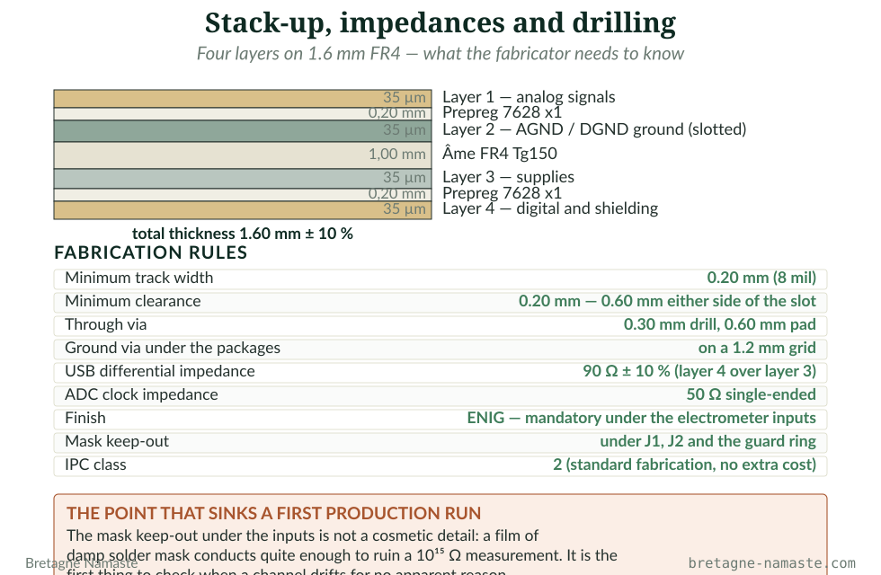
Fig. 4.3. Empilage et règles de fabrication. Aucune
exigence hors norme : classe IPC 2, percements de trois dixièmes, finition ENIG. Le seul point
inhabituel est le vernis épargné sous les entrées, que tout fabricant accepte sans surcoût
lorsqu'on le demande explicitement.
Le plan de masse fendu, et la règle qui va avec
La couche 2 porte un plan de masse continu, interrompu par une fente d'un millimètre
et demi qui sépare la masse analogique flottante de la masse USB. Cette fente se
poursuit à l'identique sur les quatre couches.
La règle qui l'accompagne est absolue et ne souffre aucune exception :
aucune piste ne franchit la fente. Une seule piste qui la traverserait
rétablirait le couplage et annulerait l'isolement — tout en laissant la carte parfaitement
fonctionnelle, ce qui rend l'erreur d'autant plus difficile à détecter. Seuls le transformateur
et les isolateurs enjambent la fente, et ils l'enjambent par construction, leur boîtier étant
conçu pour cela.
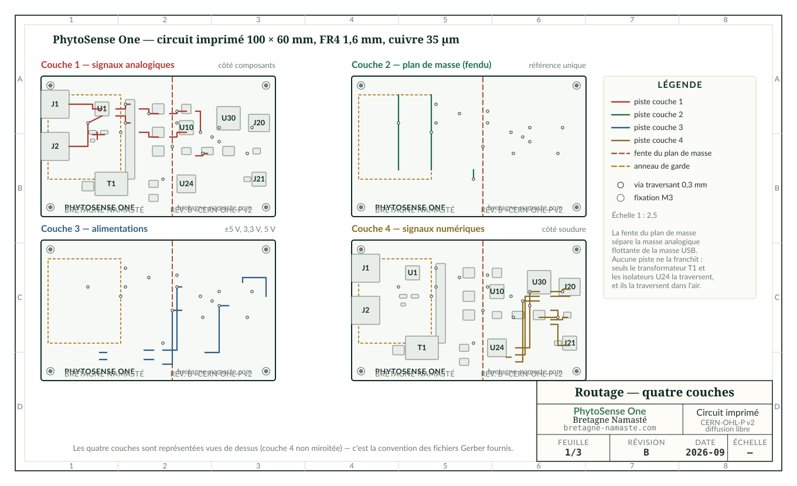
PLANCHE 4.4 — Routage des quatre couches, vues de dessus.
La fente du plan de masse traverse la carte de haut en bas, à cinquante-six millimètres du bord
gauche.
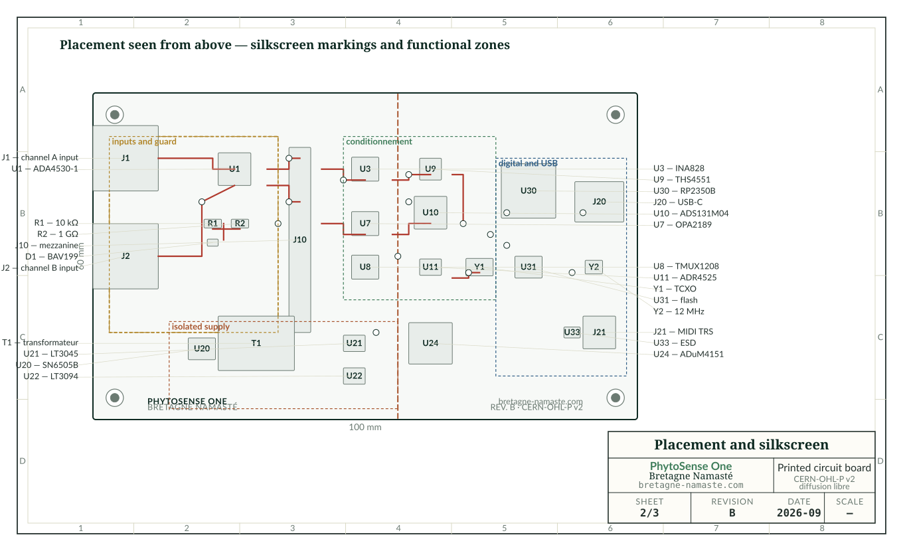
PLANCHE 4.5 — Implantation et sérigraphie. Les quatre
zones fonctionnelles sont physiquement séparées : ce n'est pas une commodité de lecture, c'est
ce qui garantit que les courants de retour ne se mélangent pas.
Les huit règles de tracé, par ordre d'importance
L'anneau de garde entoure l'entrée sur les quatre couches, y compris sous
le boîtier de l'amplificateur. Il est relié à la broche de garde par le chemin le plus court.
Le vernis est épargné dans la zone d'entrée, entre l'anneau et la pastille.
Cette zone doit pouvoir être nettoyée à l'alcool après soudure.
Aucune piste ne franchit la fente du plan de masse. Vérification visuelle
obligatoire avant d'envoyer les fichiers.
Les retours de courant suivent leurs signaux. Chaque piste rapide a son
plan de masse immédiatement sous elle, sans découpe interposée.
Les condensateurs de découplage touchent leurs broches. Un millimètre de
piste ajoute une inductance qui annule leur effet aux fréquences où ils servent.
Le convertisseur et sa référence forment un îlot, avec son propre point
de raccordement à la masse analogique — une étoile locale, pas un maillage.
L'oscillateur est entouré de vias de masse et éloigné de l'étage d'entrée
d'au moins quinze millimètres.
Les pistes d'entrée sont courtes et droites, sans via, sans changement de
couche : chaque via est un puits de fuite supplémentaire.
⚠️ Le flux de soudure est un conducteur
Un résidu de flux entre l'entrée et la garde présente une résistance de
l'ordre du gigaohm — c'est-à-dire exactement l'ordre de grandeur que nous cherchons à mesurer.
Le nettoyage à l'alcool isopropylique à 99 %, suivi d'un séchage complet, n'est donc pas une
finition : c'est une étape de fabrication. Une carte non nettoyée présente un courant de fuite
cent fois supérieur à la spécification, et ce défaut se traduit par une dérive lente
inexplicable — le symptôme le plus déroutant qui soit.
Commander les cartes
Les fichiers Gerber, le fichier de percement et le fichier de placement sont produits par le
logiciel de conception et publiés avec l'ouvrage. Les paramètres à indiquer au fabricant tiennent
en sept lignes, reproduites ci-dessous ; elles correspondent toutes à des options courantes.
Paramètre
Valeur à demander
Pourquoi
Couches
4
plan de masse et plan de garde
Dimensions
100 × 60 mm
tient dans un boîtier standard
Épaisseur
1,6 mm
rigidité, connecteurs standards
Cuivre
35 µm (1 oz) sur toutes les couches
suffisant, moins cher
Finition
ENIG (or chimique sur nickel)
indispensable : l'étamage à chaud laisse des résidus ioniques qui conduisent
Vernis épargné
zone d'entrée, selon le fichier fourni
la règle numéro deux
Sérigraphie
blanche, deux faces
repères de montage et d'usage
12 €
Le prix unitaire d'une carte quatre couches en ENIG avec vernis épargné, pour
une commande de cinq exemplaires, chez un fabricant asiatique courant, port compris, en
septembre 2026. Le minimum de commande étant de cinq, prévoyez d'en avoir quatre d'avance —
ce qui est une bonne chose, car la première sera sacrifiée aux essais.
Blindage, compatibilité électromagnétique et ordre d'assemblage
Une carte qui mesure le microvolt est, par construction, une excellente
antenne. Le chapitre précédent a tracé les pistes ; celui-ci referme le couvercle — et explique
pourquoi ce couvercle n'est pas un accessoire.
La compatibilité électromagnétique se lit dans les deux sens, et les deux comptent ici. En
immunité, l'appareil doit ignorer le réseau à cinquante hertz, les lampes à variateur,
les chargeurs à découpage et le téléphone posé à côté. En émission, il ne doit rien
rayonner : non par civisme abstrait, mais parce que le seul appareil qu'il perturberait
sérieusement, à trente centimètres, c'est lui-même.
Ce qu'il faut blinder, et ce qu'il est inutile de blinder
Le réflexe du débutant est de tout enfermer dans du métal. C'est coûteux, cela complique le
montage, et cela ne sert pratiquement à rien : un blindage ne vaut que par la qualité de sa
liaison de masse, et dix capots mal reliés protègent moins qu'un seul bien soudé. Deux zones
seulement le justifient, pour deux raisons opposées.
Capot
Couvre
Dimensions
Rôle
SH1
Étage d'entrée électrométrique, garde, FE-Z
35 × 25 × 3 mm
empêche d'entrer
SH2
Convertisseur abaisseur U60 et son inductance
25 × 25 × 3 mm
empêche de sortir
SH1 protège l'endroit où le signal vaut encore quelques microvolts et où l'impédance se compte
en gigaohms. À cette impédance, un champ électrique de quelques volts par mètre — un câble
d'alimentation qui passe à vingt centimètres — induit davantage que le signal cherché. C'est le
capot qui rend la carte insensible à son environnement, et c'est celui qu'il ne faut jamais
omettre.
SH2 fait l'inverse. L'abaisseur commute deux ampères à quelques centaines de kilohertz ; son
inductance rayonne un champ magnétique que rien, sur le plan de masse, n'arrête. Le capot le
contient à la source, ce qui coûte infiniment moins cher que de le filtrer partout ailleurs.
✦ Règle — un blindage se relie, il ne se pose pas
Les deux capots se soudent sur un cadre continu de pastilles, au pas de
2,5 mm au maximum. L'intervalle entre deux points de soudure détermine la fréquence à partir de
laquelle le capot cesse d'être un blindage pour devenir une fente rayonnante : à 2,5 mm, la
coupure se situe bien au-delà du gigahertz, donc hors sujet. Un capot maintenu par quatre
points aux angles, en revanche, laisse passer tout ce qui compte. Cette règle vaut plus que le
choix du capot lui-même.
Le rayonnement qui sort par les câbles
Un boîtier parfaitement blindé rayonne quand même, par ses câbles. Trois sortent d'ici : le
cordon USB, la sortie audio, la sortie MIDI. Chacun mesure un mètre ou deux, c'est-à-dire un
quart d'onde autour de quelques dizaines de mégahertz — précisément la bande où le
microcontrôleur et l'USB travaillent.
Le traitement est le même pour les trois, et il est banal : une ferrite de mode commun en
série sur chaque ligne sortante (FB10 à FB15, 90 Ω à 100 MHz) et un condensateur de traversée
de 1 nF à la masse (C60 à C65), placés au ras du connecteur, du côté extérieur
du plan de masse. Placés ailleurs, ils ne servent à rien : le courant de mode commun aura déjà
parcouru la carte avant d'être filtré.
⚠ Ce qui n'a pas été mesuré
Les dispositions décrites ici sont celles qu'on emploie couramment pour
satisfaire la norme EN 55032 en classe B. Aucune mesure en laboratoire accrédité n'a
été faite, et ce document ne constitue donc pas une déclaration de conformité. Un
exemplaire construit pour un usage personnel n'y est pas soumis ; un exemplaire mis sur le
marché l'est, et il faudra alors passer par une campagne de mesures en chambre — dont
l'expérience montre qu'elle révèle toujours un détail qu'aucune règle de tracé n'avait
anticipé.
L'ordre d'assemblage imposé par le blindage
Souder les capots empêche d'accéder à ce qu'ils couvrent. L'ordre de montage général est
donné au chapitre suivant ; il se termine par ces quatre étapes, qui ne souffrent pas
d'inversion.
Étape
Opération
Vérification avant de passer à la suivante
1
Monter et régler tout ce qui se trouve sous SH1 et SH2
plancher de bruit relevé, fuite d'entrée mesurée
2
Nettoyer soigneusement les zones à couvrir
aucun résidu de flux : il est conducteur et hygroscopique
3
Souder SH2 (abaisseur), puis SH1 (entrée)
continuité du cadre en dix points au moins
4
Reprendre le relevé du plancher de bruit
il doit baisser — sinon, un capot n'est pas relié
L'étape 4 est le seul test de blindage réellement utile sans matériel de laboratoire :
la comparaison avant/après, dans la même pièce et à la même heure. Une amélioration de six à
douze décibels sur le plancher de bruit en présence d'un câble secteur voisin est le résultat
attendu. Une absence d'amélioration signifie presque toujours un cadre soudé par intermittence,
jamais un capot inefficace.
Le nettoyage de l'étape 2 n'est pas une coquetterie. Sous SH1, l'impédance
atteint le gigaohm : un résidu de flux qui absorbe l'humidité crée une résistance de fuite de
quelques centaines de mégaohms — invisible, stable par temps sec, et qui fait dériver la mesure
dès qu'il pleut. C'est la panne la plus difficile à diagnostiquer de toute la carte, et la plus
facile à éviter.
◆ Les capots à couvercle amovible
Würth propose, pour les deux références retenues, une variante en deux
pièces : un cadre soudé à demeure et un couvercle qui se clipse. Elle coûte environ un euro de
plus par capot et permet de rouvrir sans dessouder. Pour un premier exemplaire, ou pour un
prototype qu'on sait devoir modifier, c'est de l'argent bien placé. Pour une série, le capot
monobloc suffit.
Nomenclature, approvisionnement et montage
Deux cent vingt-trois euros de composants, quarante-sept références, une
douzaine d'heures de travail. Voici comment les dépenser et les employer sans mauvaise surprise.
Le budget, dans son ensemble
PhytoSense One — budgets Bretagne Namasté · bretagne-namaste.com · contact@bretagne-namaste.com revision B — September 2026 · licence CERN-OHL-P v2
Poste
Montant
What it covers
Board components
244.35 €
68 part numbers, 120 components, board included
Accessoires indispensables
103.90 €
cable, electrodes, gel, minimum de soudure
Recommended accessories
304.30 €
enclosure, battery, test instruments
Budget minimal
348.25 €
a board that works
Budget confortable
652.55 €
a board you can defend to a physicist
Le détail complet figure au fascicule Nomenclature et accessoires,
publié séparément pour être imprimé et emporté à l'établi. L'annexe B du présent ouvrage en
reproduit le tableau principal.
✦ Où l'argent va, et où il ne faut pas économiser
Quatre postes concentrent la moitié de la dépense et la totalité de la
performance : l'amplificateur d'entrée (14 €), les résistances de référence (14 €), les
régulateurs à faible bruit (11 €) et l'ensemble isolement (16 €). Les substituer par des
équivalents « suffisants » fait économiser une trentaine d'euros et perdre un facteur dix sur
le bruit — soit exactement la raison d'être de la carte. Tout le reste peut être choisi au
moins cher.
Trois conseils d'approvisionnement
Commandez les passifs en lot. Un assortiment de résistances et de
condensateurs en boîtier 0402 et 0805 coûte une vingtaine d'euros et couvre ce projet et les dix
suivants. Commander seize condensateurs de découplage à l'unité coûte plus cher en frais de port
qu'en composants.
Vérifiez les tolérances, pas seulement les valeurs. Une résistance de un
mégohm à cinq pour cent et une à 0,1 % ont la même valeur nominale et un prix cent fois
différent. Le distributeur ne vous préviendra pas si vous vous trompez ; la carte, si — trois
mois plus tard, quand vous comparerez deux séances.
Achetez deux amplificateurs d'entrée. C'est le composant le plus cher, le
plus fragile aux décharges électrostatiques, et celui qu'on dessoude le plus souvent en cherchant
une panne ailleurs. Avoir le second dans un tiroir évite une semaine d'attente.
L'ordre de montage, et pourquoi il compte
On ne monte pas la carte d'un bloc : on la monte par étages, en vérifiant chacun avant de
passer au suivant. Cette discipline paraît lente ; elle est en réalité la plus rapide, car elle
circonscrit toute panne à ce qu'on vient de souder.
Les alimentations seules. Régulateurs, transformateur, pilote,
redressement, condensateurs. Aucun autre composant. Sous tension, on doit lire +5,00 V,
−5,00 V et +3,30 V à ±2 %, et une ondulation inférieure à deux millivolts crête. Contrôler
aussi, à l'ohmmètre, l'isolement infini entre les deux masses.
Le microcontrôleur et l'USB. Il doit être reconnu par l'ordinateur et
répondre « ? » sur le port série. À ce stade, aucune mesure n'est possible : c'est normal.
Le convertisseur, la référence et l'horloge. L'auto-test doit trouver le
convertisseur et lire sa référence. Entrées en l'air, on doit voir un bruit de quelques
dizaines de microvolts — un signal parfaitement plat signale un convertisseur muet.
La chaîne d'amplification et le filtre. En injectant un signal connu par
un diviseur, vérifier les quatre gains à ±1 %.
La carte fille, en dernier. C'est elle qui porte les composants
sensibles ; on ne la monte que sur une carte mère déjà éprouvée.
Nettoyage complet à l'alcool, séchage à l'air, puis vingt-quatre heures
de repos avant la recette définitive. Le solvant résiduel fausse la mesure de fuite.
⚠️ Décharges électrostatiques
L'ADA4530-1 et le convertisseur sont sensibles. Un bracelet antistatique
coûte trois euros ; un composant grillé, quatorze, plus une semaine d'attente. Surtout, une
décharge ne détruit pas toujours : elle dégrade. Un amplificateur « zappé » fonctionne encore,
mais son courant d'entrée passe de vingt femtoampères à quelques picoampères — et vous
chercherez pendant des jours une fuite qui n'est pas dans le circuit imprimé.
Le boîtier : un choix électrique
Le boîtier aluminium recommandé n'est pas un choix esthétique. Il forme une cage qui réduit le
couplage capacitif avec l'environnement d'une vingtaine de décibels. Trois précautions le rendent
efficace.
Le boîtier est relié à la masse analogique flottante, et à elle seule —
jamais à la masse USB, ce qui rétablirait le couplage qu'on vient d'éliminer. Les entrées
traversent la façade par des embases dont la bague est reliée à la garde. Enfin, les vis de
fixation de la carte ne touchent que des pastilles de la zone analogique : une vis qui relierait
les deux plans par le boîtier annulerait l'isolement, et c'est l'erreur de montage la plus
fréquente.
🌿 Sur le choix du bambou
Les appareils du commerce les plus soignés emploient un boîtier de bambou,
et l'on serait tenté de les imiter. Il faut savoir ce qu'on échange : le bois est plaisant,
chaleureux, cohérent avec le propos — et transparent aux champs électriques. Sur un appareil
dont l'étage d'entrée présente une impédance de dix millions de mégohms, l'absence de blindage
se paie par une sensibilité à tout ce qui bouge dans la pièce, à commencer par l'opérateur.
Un compromis honnête existe : boîtier de bois, doublé intérieurement d'un feuillard de cuivre
adhésif relié à la garde. On garde le geste, on garde la mesure.
La recette, et le dépannage
Une carte qui « a l'air de marcher » ne prouve rien. Sept mesures, une heure de
travail, et l'on sait exactement ce que vaut l'instrument — ou ce qui lui manque.
La fiche de recette
Elle se remplit une fois, à la construction, puis une fois par an. Conservez-la : c'est elle
qui permettra, dans deux ans, de savoir si la carte a dérivé ou si c'est la plante qui a changé.
№
Mesure
Conditions
Attendu
Relevé
1
Isolement entre masses
ohmmètre, carte hors tension
infini
2
Rails d'alimentation
voltmètre, à vide
+5,00 / −5,00 / +3,30 V ±2 %
3
Ondulation des rails
oscilloscope, couplage AC, 20 MHz
< 2 mV crête
4
Bruit d'entrée
entrée sur 1 GΩ, boîtier fermé, sur batterie, 5 min
< 1,0 µV eff. (0,01–10 Hz)
5
Courant de polarisation
méthode de la capacité, 100 pF, 60 s
< 50 fA
6
Exactitude des gains
diviseur étalonné, quatre positions
±1 %
7
Auto-test des étalons
commande « selftest »
écart < 0,5 % sur les trois
8
Réjection du réseau
secteur branché, main à 10 cm de l'entrée
résidu 50 Hz < 30 µV
Mesurer un courant de cinquante femtoampères sans picoampèremètre
On remplace la source par un condensateur de cent picofarads, de bonne
qualité (polypropylène ou NP0), et l'on observe la dérive de la tension d'entrée. Le courant
vaut I = C · dV/dt. Avec 100 pF, un courant de 50 fA fait dériver
la tension de 0,5 mV par seconde — parfaitement mesurable par la carte elle-même. Trente
femtoampères donnent 0,3 mV/s. C'est l'une des rares mesures où l'instrument peut se qualifier
lui-même, et le logiciel automatise la procédure.
Les dix pannes, par ordre de fréquence
Symptôme
Cause la plus probable
Vérification
Dérive lente et régulière, quelques mV/min, insensible à tout
Résidu de flux entre l'entrée et la garde
Nettoyer à l'alcool, sécher une heure, remesurer. Guérit neuf fois sur dix.
Ronflement à 50 Hz, énorme, qui varie quand on approche la main
Garde non connectée, ou blindage du câble relié à la masse au lieu de la garde
Continuité entre la bague de l'embase et la broche de garde de U1.
L'isolement mesure quelques ohms
Vis de fixation reliant les deux plans par le boîtier
Retirer les vis une à une en mesurant.
Signal parfaitement plat, aucun bruit
Convertisseur non initialisé, ou horloge absente
Commande « ? » : si la fréquence d'échantillonnage remonte à zéro, l'horloge est en
cause.
L'onglet Multimètre affiche « saturation » et la dérive s'emballe. Brancher l'électrode.
Bruit dix fois trop élevé, blanc, sur toute la bande
Résistance de protection remplacée par une valeur trop forte, ou résistance à couche
de carbone au lieu de couche métallique
Relire la nomenclature : le bruit thermique d'une résistance suit √(4kTR).
Battements très lents, quelques cycles par minute
Découpage non synchronisé : le résidu bat avec l'échantillonnage
Vérifier la piste SYNC entre le microcontrôleur et le pilote du transformateur.
La carte n'est pas reconnue en audio, seulement en série
Descripteur composite refusé par un concentrateur USB ancien
Brancher directement sur la machine, sans concentrateur.
Auto-test correct, mais les mesures sur plante sont absurdes
Mauvaise carte fille sélectionnée, ou mémoire d'identification illisible
Commande « ? » : vérifier le champ « frontend ».
Tout fonctionne, mais le bruit double quand l'ordinateur est branché au secteur
Comportement normal et attendu
Passer sur batterie pour les mesures fines. C'est la limite physique de l'exercice.
🔬 La mesure qui tranche tous les doutes
Quand une observation surprend — une « réaction » à une parole, à une
présence, à une intention —, une seule manipulation permet de trancher : remplacer la plante
par une résistance de cent mégohms et refaire exactement la même séance, dans les mêmes
conditions, sans rien changer d'autre. Si le phénomène persiste, il vient de l'appareil, de
l'environnement ou de l'opérateur. S'il disparaît, il vient de la plante — et il devient alors
intéressant. Cette manipulation prend dix minutes ; elle est plus instructive que dix heures
d'enregistrement supplémentaires, et c'est la raison pour laquelle la carte embarque ses
étalons.
PartieV
Le logiciel PhytoScope
« Le choix d'un langage n'est pas une question de goût : c'est une question de contraintes. »
Quel langage, quelle boîte à outils, quelle architecture — et pourquoi.
Quel langage pour ce logiciel ?
La question se pose sérieusement, et mérite mieux qu'une préférence. Quatre
candidats — C++, Rust, Go, Python 3 — et une cinquième voie, l'application web enveloppée. La
réponse dépend entièrement du cahier des charges, qu'il faut donc écrire d'abord.
Ce que le logiciel doit faire tient en sept exigences, et aucune
n'est négociable.
Lire un flux audio à 250 Hz sur quatre voies, sans perdre un échantillon,
pendant huit heures.
Filtrer et analyser ce flux : filtres récursifs, transformée de Fourier,
variance d'Allan, détection d'événements.
Tracer à soixante images par seconde des courbes de plusieurs milliers de
points, sans saccade.
Produire du son en temps réel, avec une synthèse polyphonique et une
sortie MIDI.
Écrire sur le disque en continu, dans des formats ouverts.
Fonctionner à l'identique sous Windows, macOS et GNU/Linux.
Pouvoir être modifié par quelqu'un qui n'est pas informaticien de métier —
car c'est la condition pour que le projet survive à son auteur.
Les cinq candidats, notés sur ces exigences
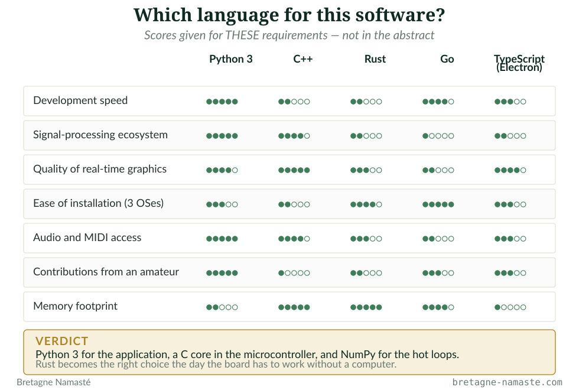
Fig. 5.1. Comparatif des cinq voies, noté pour
ce cahier des charges. Les notes ne valent pas dans l'absolu : Rust est un meilleur
langage que Python sur presque tous les critères d'ingénierie, et pourtant il perd ici.
C++ — la puissance, et le prix à payer
C++ apporte la performance maximale, l'accès direct aux bibliothèques audio et graphiques, et
quarante ans de bibliothèques de traitement du signal. Qt lui est natif ; JUCE offre une chaîne
audio professionnelle complète. Sur le papier, c'est le choix évident pour un instrument.
Trois obstacles le disqualifient ici. La compilation croisée pour trois
systèmes exige une chaîne d'intégration continue et une connaissance que le public visé n'a pas.
La distribution impose de fournir trois binaires, signés sous macOS et Windows,
ce qui coûte de l'argent et du temps chaque année. Enfin, la barrière à la
contribution est décisive : un botaniste curieux ne corrigera pas un bogue dans un
fichier de six cents lignes de C++ avec des gabarits, alors qu'il modifiera volontiers une
fonction Python de vingt lignes.
Rust — le bon choix, mais pas pour cette version
Rust résout élégamment la moitié des problèmes du C++ : sûreté mémoire garantie, compilation
croisée simple, gestion de dépendances exemplaire, binaire unique sans dépendance système. Pour
un logiciel embarqué, ou pour une version autonome tournant sur la carte elle-même, ce serait le
choix juste.
Il échoue pourtant sur deux points précis. L'écosystème de traitement du signal
reste pauvre : il n'existe pas d'équivalent de NumPy, et l'on réécrit donc ce que d'autres ont
déjà fait et vérifié. Les bibliothèques graphiques sont jeunes ; aucune n'offre
l'équivalent de pyqtgraph pour tracer deux cent cinquante mille points par seconde avec une
interaction fluide. On y arriverait, au prix de plusieurs mois — pour un résultat identique.
Go — excellent pour les serveurs, inadapté ici
Go compile vite, se distribue en un fichier, et son modèle de concurrence conviendrait
parfaitement à l'acquisition. Mais l'interface graphique y est un désert, le calcul numérique
aussi, et l'accès audio passe par des liaisons vers le C qui annulent l'avantage du binaire
unique. Go est un excellent langage pour ce qu'il vise ; un instrument de mesure graphique n'en
fait pas partie.
Python 3 — le choix retenu, et ses raisons
Python est lent, et c'est vrai pour les boucles. Mais aucune boucle chaude n'est écrite en
Python ici : NumPy exécute le traitement du signal en code compilé, Qt dessine en C++, PortAudio
gère l'audio en C. Python ne fait qu'orchestrer — et pour orchestrer, sa lisibilité est
un avantage décisif.
Trois arguments emportent la décision. L'écosystème : NumPy, pyqtgraph,
sounddevice, python-rtmidi, pyserial couvrent l'intégralité du besoin, tous éprouvés et
maintenus. L'installation : trois commandes, les mêmes sur les trois systèmes.
La contribution : le code se lit, se modifie et se corrige par quelqu'un dont
ce n'est pas le métier — ce qui est la seule garantie de survie d'un logiciel d'atelier.
🔬 La question de la performance, chiffrée
Mesures relevées sur un ordinateur portable de 2019, huit voix de synthèse
actives, tracé à trente images par seconde, acquisition à 250 Hz : le fil de traitement occupe
2,6 % d'un cœur, la synthèse audio 2,6 % d'un autre, et
l'interface environ 8 %. Le total reste sous quinze pour cent d'un seul cœur.
L'argument de la lenteur de Python ne tient tout simplement pas pour cette classe de problème —
à condition de ne jamais écrire de boucle sur les échantillons, ce que le code respecte
scrupuleusement.
✦ Verdict, et ce qui le ferait changer
Python 3 pour l'application, C pour le micrologiciel, NumPy pour
les boucles chaudes. Cette répartition est retenue parce qu'elle place chaque langage
là où il excelle. Deux évolutions la remettraient en cause : le jour où la carte devrait
fonctionner seule, sans ordinateur, avec un affichage embarqué — alors ce serait Rust ; et le
jour où il faudrait traiter trente-deux voies à trente-deux kilohertz — alors ce serait C++.
Aucune de ces deux situations n'est le sujet de cet ouvrage.
Quelle boîte à outils graphique ?
Qt, GTK, wxWidgets, ou une interface en HTML5 enveloppée ? La question est
distincte de la précédente, et le critère décisif n'est pas celui qu'on croit.
Le critère décisif n'est ni la beauté, ni la richesse des composants, ni même la portabilité :
c'est la capacité à tracer deux cent cinquante points par seconde, en continu, pendant
huit heures, sans saccade et sans fuite de mémoire. Sur ce seul point, le classement
est net et ne souffre guère de discussion.
Fig. 5.2. Les six voies envisagées. Qt l'emporte par
pyqtgraph, qui est la seule bibliothèque de tracé scientifique réellement temps réel dans
l'écosystème Python.
Qt 6, par PySide6 — retenu
Qt offre trois choses qu'aucun concurrent ne réunit : un jeu de composants complet et cohérent,
un rendu identique sur les trois systèmes, et surtout pyqtgraph, bibliothèque
conçue pour l'instrumentation scientifique, qui trace des millions de points avec une interaction
fluide. La liaison officielle PySide6, publiée sous licence LGPL par The Qt Company, autorise
tous les usages, y compris commerciaux, sans contrainte pour un logiciel distribué en sources.
Le prix à payer est l'encombrement : environ deux cent cinquante mégaoctets installés. Sur une
machine de 2026, c'est acceptable ; sur une carte embarquée, ce ne le serait pas — d'où le mode
sans interface, qui fonctionne sans Qt.
Les autres voies, et pourquoi elles ont été écartées
GTK 4 produit des applications superbes sous GNOME et s'y intègre
parfaitement. Son installation sous Windows relève en revanche du chemin de croix, et son
écosystème de tracé scientifique est inexistant en Python. Pour un logiciel destiné à des
ateliers où la moitié des machines tournent sous Windows, c'est éliminatoire.
wxWidgets a le mérite d'employer les composants natifs de chaque système :
l'application ressemble vraiment à une application de la plateforme. Mais l'écosystème a vieilli,
et la partie tracé n'a pas suivi.
Tkinter est livré avec Python, ce qui supprime toute installation. Son
canevas s'effondre au-delà de quelques milliers d'éléments : un oscilloscope y est impossible.
Il reste excellent pour un utilitaire de configuration ; ce n'est pas ce qu'on construit ici.
Dear PyGui dessine par le processeur graphique et va très vite. Il souffre en
revanche d'une accessibilité faible — pas de lecteur d'écran, pas de navigation au clavier
complète — et d'un jeu de composants restreint. Pour un logiciel destiné à durer et à être
utilisé par des publics variés, c'est un renoncement trop lourd.
Et une interface en HTML5 ? La question mérite un examen sérieux
C'est la voie que choisiraient beaucoup aujourd'hui, et il faut reconnaître ses mérites plutôt
que la balayer. Une interface en HTML5 avec TypeScript apporte : des outils de mise en forme
incomparables, une communauté immense, la possibilité d'un accès à distance par le navigateur,
et un découplage propre entre le cœur de mesure et l'affichage.
Deux architectures existent, qu'il ne faut pas confondre.
Architecture
Ce qu'elle donne
Ce qu'elle coûte
Application enveloppée Electron, Tauri
Une application de bureau classique, interface web, accès complet au matériel par un
cœur natif.
180 Mo pour Electron (Tauri descend à 10 Mo). Surtout : une passerelle à
écrire et à maintenir entre le cœur Python et l'interface web, avec sa
sérialisation, ses erreurs propres et son débogage à deux étages.
Serveur local et navigateur le logiciel sert une page
Aucune installation côté interface ; accès depuis un téléphone, une tablette, une
autre pièce. Idéal pour une installation d'exposition.
Le navigateur ne peut pas ouvrir un port audio ni un port série sans permissions
particulières ; les mécanismes existants (Web Serial, Web Audio) ne sont pas uniformément
disponibles. Et le tracé de 250 points par seconde dans un canevas web reste nettement plus
coûteux qu'avec pyqtgraph.
⚠️ Le vrai coût du HTML5, qui n'est pas technique
Une interface web impose deux langages, deux écosystèmes, deux
chaînes de construction et une frontière. Pour une équipe, c'est un investissement
rentable. Pour un projet d'atelier maintenu par une ou deux personnes, c'est la garantie que
la moitié du temps passera en plomberie plutôt qu'en mesure. Le critère décisif n'est donc pas
la performance — Tauri fait très bien l'affaire — mais le coût de maintenance rapporté aux
forces disponibles.
✦ Verdict, nuancé
PySide6 et pyqtgraph pour l'application de mesure : c'est
le meilleur rapport entre l'effort et le résultat, et de loin. Mais une interface web
a toute sa place en complément, pour un usage précis : la supervision à distance d'une
installation de longue durée. Le logiciel prévoit d'ailleurs cette extension — le moteur est
entièrement séparé de l'interface, et exposer son état par un petit serveur local ne demande
qu'une centaine de lignes. Ce qui serait une erreur, c'est d'en faire l'interface
principale et de payer la passerelle en permanence pour un bénéfice occasionnel.
Ce qu'il faut retenir de ces deux chapitres
La bonne question n'est jamais « quel est le meilleur langage », mais « quelles contraintes
ai-je, et lesquelles sont irréductibles ». Ici, l'irréductible était double : tracer
vite et rester modifiable par un non-professionnel. Ces deux
contraintes désignent Python et Qt sans hésitation possible. Changez l'une des deux, et la
réponse change — c'est ainsi que se prend une décision d'architecture, et c'est pourquoi elle
doit être écrite, pour pouvoir être révisée quand les contraintes évoluent.
L'architecture du logiciel
Trois fils d'exécution, deux files d'attente, et une règle : l'interface ne
calcule rien. C'est ce qui permet à l'acquisition de tenir huit heures pendant qu'on manipule
l'affichage.
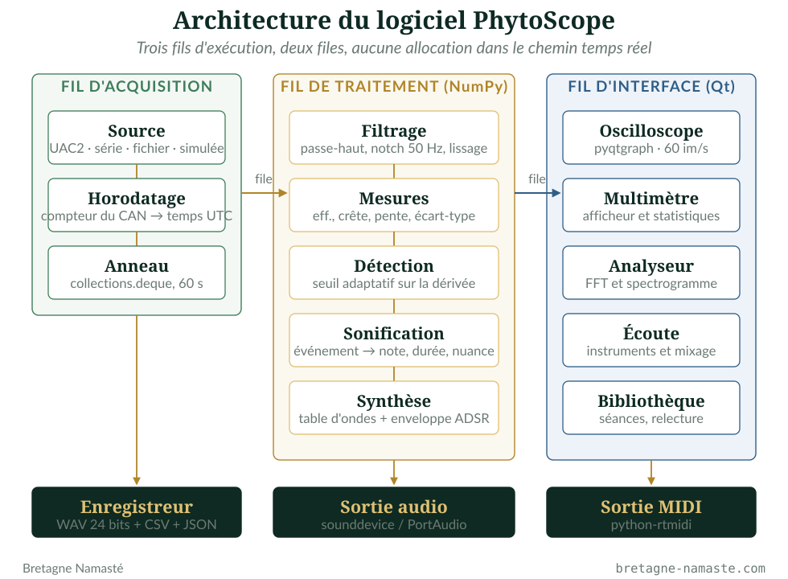
Fig. 5.3. Les trois fils et leurs échanges. Le fil
d'acquisition ne fait que lire et horodater ; le fil de traitement filtre, mesure et sonifie ;
l'interface lit un instantané publié par le moteur, à sa propre cadence.
La règle qui structure tout
Un logiciel de mesure échoue presque toujours de la même façon : l'affichage ralentit, et
l'acquisition perd des échantillons. La parade tient en une discipline, appliquée sans
exception : aucun composant lent ne se trouve sur le chemin des données.
Concrètement, la source pousse ses blocs dans une file bornée. Si la file déborde — parce que
le traitement a pris du retard —, c'est le plus ancien bloc qui est jeté, pas le plus
récent, et le compteur de pertes s'incrémente. Jeter plutôt que bloquer : un affichage en retard
ne doit jamais faire décrocher la mesure, et une perte doit être comptée plutôt que cachée.
Le rendu audio anticipé
Le rappel audio pose un problème propre à Python : il partage le verrou global de
l'interpréteur avec l'interface graphique. Un rafraîchissement de courbe un peu long suffit alors
à faire manquer une échéance, ce que la couche audio signale par des coupures audibles.
La parade est celle des moteurs audio professionnels : le rappel ne calcule rien.
Un fil de rendu remplit en avance un tampon circulaire d'une demi-seconde ; le rappel se contente
d'y copier de la mémoire, opération qui libère le verrou et ne peut pas dépasser son échéance.
La latence ajoutée est de quelques centaines de millisecondes — sans la moindre conséquence
lorsqu'on sonifie une plante, dont les événements durent plusieurs secondes.
✦ Choix de conception — la latence comme monnaie d'échange
Dans un instrument de musique, la latence est l'ennemi : au-delà de dix
millisecondes, l'instrumentiste la ressent. Ici, personne ne joue : la plante ne réagit pas à
la note qu'elle a produite dans la demi-seconde. On peut donc échanger de la latence contre de
la robustesse, et c'est un échange très favorable. Savoir quelles contraintes on n'a
pas est aussi important que connaître celles qu'on a.
L'organisation du code
Module
Rôle
Ce qu'il ne fait pas
core/sources.py
Quatre sources interchangeables : classe audio, port série, fichier, générateur
interne
Aucun traitement : les blocs sortent tels qu'ils sont entrés, convertis en volts
core/dsp.py
Filtres biquadratiques, ligne de base, statistiques glissantes, détection
d'événements, densité spectrale
Aucune dépendance à SciPy : les coefficients sont calculés à la main
Aucune règle implicite : chaque correspondance est affichée et consignée
ui/*
Dix onglets, thèmes, écran d'accueil, fenêtres de diagnostic
Aucun calcul : l'interface lit un instantané, à sa propre cadence
Les motifs de conception employés, et pourquoi
Quatre motifs classiques structurent le code. Les nommer n'est pas de la coquetterie : c'est
ce qui permet à quelqu'un d'autre de s'y retrouver.
Stratégie pour les sources : quatre implémentations derrière une même
interface, ce qui rend le reste du logiciel indifférent à la provenance du signal. C'est ce
qui permet de déboguer la sonification dans le train, sans plante ni carte.
Observateur pour les événements et les notes : le moteur publie, les
consommateurs s'abonnent. L'enregistreur, l'affichage et la sortie MIDI sont trois abonnés
indépendants, dont la défaillance de l'un n'affecte pas les autres.
Commande pour le traceur : chaque instruction est un objet exécutable
enregistré dans une table, ce qui rend l'ajout d'une commande trivial et l'historique gratuit.
Objet-valeur pour les rapports : un contrôle avant vol, un diagnostic USB,
un rapport d'auto-test sont des objets immuables, qui savent se rendre en console et
en fenêtre. Le même résultat, deux affichages, aucune duplication de logique.
La gestion des erreurs, en quatre règles
Un logiciel d'instrument se juge à son comportement quand quelque chose manque. Quatre règles
sont appliquées sans exception.
Une exception ne disparaît jamais. Elle est traitée, journalisée ou
remontée — jamais avalée silencieusement.
Le fil d'acquisition ne meurt pas. Les appels aux consommateurs sont
protégés : une erreur d'affichage ou de disque n'interrompt pas la mesure.
Les messages s'adressent à l'utilisateur. Chaque erreur porte un message
en français, une cause technique et, quand c'est possible, un remède exécutable.
Les codes de sortie sont stables, documentés, et permettent de scripter le
mode sans interface.
🔬 Un exemple réel de diagnostic, et ce qu'il évite
Cas rencontré pendant le développement : PySide6 correctement installé,
mais l'interface refusait de démarrer. Le message naïf aurait été « dépendance manquante :
PySide6 » — et l'utilisateur aurait réinstallé en boucle un paquet déjà présent. Le contrôle
avant vol distingue les deux cas : il constate que le module existe, tente son chargement,
analyse l'erreur du chargeur dynamique, suit la chaîne des dépendances (car le
système nomme souvent la mauvaise bibliothèque), identifie le paquet système réellement
manquant, et affiche la commande exacte pour la distribution détectée. Deux heures de
développement ; des dizaines d'heures épargnées à ceux qui installeront.
Contrôle avant vol — sortie réelle
$ phytoscope --check
Ubuntu 22.04.5 LTS — famille debian
Contrôles avant vol
[✓] Python 3.10.12 environnement virtuel (.venv)
[✓] numpy 2.2.6 traitement du signal
[✓] PySide6 6.11.2 interface graphique Qt 6
[!] pyqtgraph installé mais inutilisable : libGL.so.1
[!] sounddevice installé mais inutilisable : libportaudio.so.2
[✓] serial 3.5 contrôle de la carte
[✓] rtmidi 1.5.8 sortie MIDI
┌────────────────────────────────────────────────────────────┐
│ Bibliothèques système manquantes │
├────────────────────────────────────────────────────────────┤
│ Des paquets Python sont installés mais ne peuvent pas être │
│ chargés : il leur manque une bibliothèque du système. │
│ │
│ sudo apt install libgl1 libportaudio2 libxcb-cursor0 │
└────────────────────────────────────────────────────────────┘
Le logiciel à l'usage
Dix onglets, une barre d'outils qui ne ment pas, et un bandeau d'état qui dit
en permanence ce que l'appareil fait réellement. Voici ce qu'on trouve, et pourquoi.
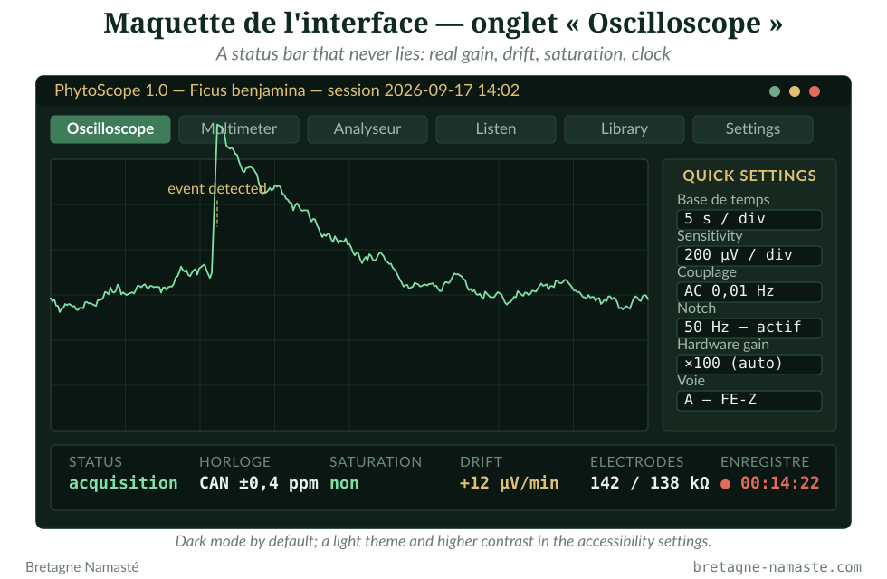
Fig. 5.4. L'onglet Oscilloscope. Le bandeau du bas est
l'élément le plus important de l'interface : il affiche l'état réel de l'acquisition, la source
utilisée, l'origine de l'horloge, la saturation, la dérive et l'état de l'enregistrement.
Les dix onglets
Onglet
Ce qu'il montre
Quand on s'en sert
Oscilloscope
Le signal dans le temps, de cinq secondes à une heure, avec marqueurs
En permanence. C'est l'onglet de la séance.
Multimètre
Tension, bruit efficace, crête à crête, dérive, ligne de base, qualité du contact
Au début, pour juger si le contact est bon avant de lancer une heure d'enregistrement.
Analyseur
Le spectre, avec détection automatique du réseau
Dès qu'un doute naît sur le blindage ou la masse.
Descripteurs
Six représentations du même signal : forme d'onde, FFT, ondelettes, MFCC, prédiction
linéaire, cepstre
Quand la courbe ne suffit plus — et pour voir ce qu'une autre représentation
révèle. Détaillé au chapitre suivant.
Traceur
Un gnuplot intégré : neuf sources, styles, échelles logarithmiques, exportation
Pour l'analyse fine et pour produire les figures d'un compte rendu.
Écoute
Timbre, gamme, tonique, diapason, densité — et le journal des notes avec leur raison
Pour régler la musique, et pour comprendre pourquoi telle note a sonné.
Parole
Le mode vocal : dictionnaire, grammaire, voix — et le journal des énoncés avec les
valeurs qui les ont déclenchés
Pour un atelier, une séance publique, ou pour éprouver soi-même ce que fait une
grille de lecture. Ce n'est pas une traduction.
Bibliothèque
Les séances enregistrées et les échantillons, rejoués dans le moteur jusqu'à six
cents fois le temps réel
Pour relire une séance de nuit en quelques minutes — et pour régler une sonification
le soir, sur le signal du matin.
Diagnostic
Lien USB avec identifiants, échantillonnage, sortie sonore, journal
Quand quelque chose ne va pas — et une fois au début, par habitude.
Réglages
Sept pages, de l'assistant automatique à la page « Expert »
Une fois au début, puis rarement.
L'auto-configuration, qui explique ce qu'elle fait
L'assistant écoute une douzaine de secondes, puis mesure quatre choses : le plancher de bruit
après filtrage, la présence et la fréquence du réseau, la dérive continue, et une éventuelle
saturation. Il en déduit un jeu complet de réglages — coupures, réjecteur, seuil, amplitude
minimale, densité musicale, gain matériel.
Il n'applique rien sans accord, et surtout : il affiche la justification de chaque
choix. « Seuil à 4 σ, choisi d'après le bruit mesuré (3,2 µV efficaces) » vaut mieux
qu'un réglage silencieux, parce que l'utilisateur apprend en lisant, et peut contester.
⚠️ Ce qu'une auto-configuration ne peut pas faire
Elle ne peut pas savoir ce que vous cherchez. Un seuil réglé pour produire
une musique agréable n'est pas un seuil réglé pour détecter des potentiels d'action, et aucun
algorithme ne devinera lequel vous voulez. L'assistant propose un réglage équilibré ;
dès que l'objectif se précise, il faut reprendre la main — et la page Traitement existe pour
cela, avec chaque paramètre exposé et documenté.
Le moteur de correspondance, règle par règle
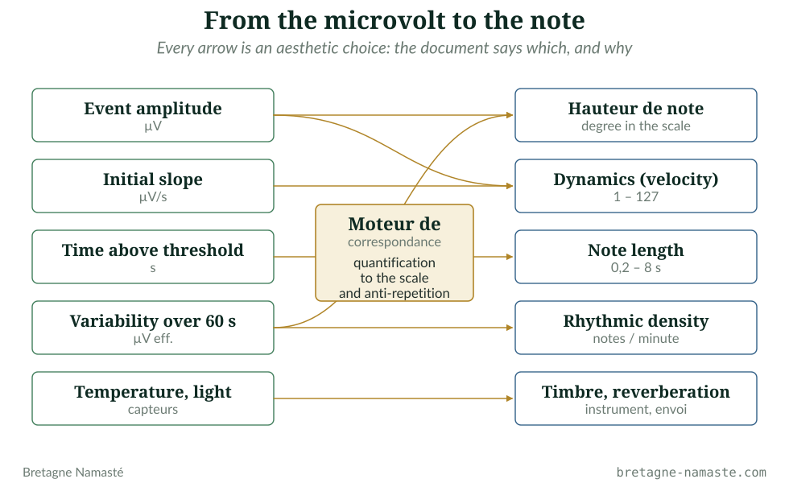
Fig. 5.5. De la grandeur mesurée à la note. Chaque
flèche est un choix esthétique, explicite et réglable — et consigné dans le fichier de séance,
de sorte qu'on puisse, six mois plus tard, savoir pourquoi cette note-là a sonné.
Cinq règles, appliquées dans l'ordre. L'amplitude de l'événement, normalisée par l'écart-type
courant, donne la hauteur. La pente au déclenchement donne la
nuance. Le temps écoulé depuis la note précédente donne la
durée. Une contrainte de densité empêche la saturation rythmique. Une contrainte
d'anti-répétition évite de rejouer trois fois la même note.
Vingt-six gammes sont proposées, dont huit traditionnelles non occidentales, et quatre
diapasons : 440 Hz, la norme ; 432 Hz, prisé dans les milieux du son thérapeutique ; 426,7 Hz,
accord dit historique ; et 415 Hz, diapason baroque. Douze profils rappellent d'un geste un
réglage complet, comme le font les appareils du commerce.
⚠️ À propos du 432 Hz
Le réglage est fourni parce qu'il est demandé, qu'il change réellement la
couleur sonore — trente-deux centièmes de demi-ton plus bas, ce qui s'entend —, et que rien
n'oblige une écoute à se justifier. Mais il faut le dire nettement : aucune étude
contrôlée n'établit d'effet physiologique propre à cette fréquence. Les travaux
invoqués reposent sur de petits effectifs sans insu. Le logiciel le propose donc comme un choix
esthétique, pas comme une propriété de la plante ni du monde.
Une plante produit des événements rares et de faible dynamique. Sur les haut-parleurs d'un
portable, dans une salle d'atelier, le rendu est inaudible si l'on se contente d'un gain. L'étage
de sortie traite donc le problème comme une console de sonorisation : gain jusqu'à trente-six
décibels, remontée de présence entre un et quatre kilohertz — là où l'oreille est la plus
sensible et où un petit haut-parleur rend le mieux —, compresseur à seuil et rapport réglables,
et limiteur qui garantit qu'aucun échantillon ne dépasse la pleine échelle.
Un générateur de bips complète l'ensemble : un repère sonore court à chaque événement détecté,
et un autre, plus grave, en cas de saturation. C'est précieux quand on regarde ailleurs —
c'est-à-dire presque toujours. Un bouton d'essai du haut-parleur émet un kilohertz pendant une
demi-seconde : c'est la façon la plus rapide de savoir si le son sort.
L'empreinte de mesure — et pourquoi ce n'est pas une identité
La question revient à chaque atelier : puisqu'on prête à chaque plante une signature qui lui
serait propre, le logiciel pourrait-il reconnaître celle qu'on mesure ? Il faut répondre
en deux temps, et le premier temps est un refus.
⚠️ Ce que cette fonction ne fait pas
Elle ne reconnaît pas une plante : ni son espèce, ni son individu, ni son
état. Un signal électrique de surface n'est pas une empreinte digitale. Il dépend autant de
l'électrode, du gel, de l'humidité du substrat, de la température de la pièce et de la longueur
du câble que du végétal lui-même. Deux mesures du même ficus à deux jours d'intervalle
diffèrent généralement plus que deux mesures de deux ficus voisins le même après-midi.
Prétendre le contraire serait vendre du merveilleux avec des chiffres — exactement ce que cet
ouvrage s'interdit.
Ce que le logiciel calcule, en revanche, a un sens et une utilité : l'empreinte du
montage. Huit descripteurs stables et interprétables caractérisent l'ensemble
plante + électrodes + substrat + câble + carte tel qu'il est à cet instant.
Descripteur
Ce qu'il capture surtout
Bruit efficace
la qualité du contact et du blindage
Pente spectrale en 1/fα
la nature du milieu et de l'électrode
Centre de gravité spectral
la bande où vit l'activité
Temps de corrélation
l'inertie du système mesuré
Dérive
l'électrode qui se stabilise, l'humidité qui change
Taux d'événements
l'activité apparente, au seuil choisi
Facteur de Fano
le groupement des événements dans le temps
Aplatissement
la forme de la distribution des amplitudes
À quoi cela sert, concrètement : à retrouver un montage — « ceci ressemble à
la séance d'hier, à 86 % » —, donc à s'apercevoir qu'il a changé ; à voir une
dégradation, car un contact qui sèche fait chuter la ressemblance bien avant qu'on ne
le remarque à l'écran ; et à comparer honnêtement deux séances avant de les
interpréter.
La ressemblance est une distance, jamais une identité. Le logiciel ne produit
aucun code d'identification — un code laisserait croire à une exactitude qui n'existe pas — et il
affiche toujours les huit valeurs sur lesquelles il se fonde, ainsi qu'une phrase plutôt qu'un
simple pourcentage : « le même montage, vraisemblablement », « un montage proche — le contact a
pu changer », « une parenté possible, rien de plus », « un autre montage ». Les seuils de ces
phrases sont écrits dans le code, en clair, pour qu'on puisse les contester.
Le carnet de croquis : garder ce qui vient de passer
Un enregistrement de séance est un engagement : on le décide avant, il dure, il produit un
répertoire complet. Or l'essentiel arrive souvent avant qu'on ait pensé à
enregistrer — la plante réagit, et l'on comprend une minute trop tard que cela valait la peine
d'être gardé. Le logiciel tient dix minutes de signal en mémoire ; les laisser s'effacer serait
absurde.
D'où l'échantillon : un bouton, ou Ctrl+E, et la dernière minute écoulée est
sur le disque. Rien à préparer, rien à arrêter. C'est le carnet de croquis à côté de la pièce
d'archive.
Une séance
Un échantillon
Décision
avant, explicite
après coup, d'un geste
Forme
un répertoire : WAV, CSV, JSON
un WAV et un petit JSON de même nom
Signal conservé
brut, avant filtrage
filtré et centré — celui qu'on voyait à l'écran
Pleine échelle
celle du convertisseur, ±2,5 V
choisie pour chaque échantillon (voir ci-dessous)
Durée
des heures
quelques secondes à dix minutes
✦ Pourquoi l'échantillon choisit sa pleine échelle
Le signal.wav d'une séance conserve le signal
brut, qui occupe réellement la plage du convertisseur : ±2,5 V y est la bonne référence. Un
échantillon, lui, garde le signal filtré et centré, dont l'amplitude se compte en microvolts.
L'écrire à ±2,5 V reviendrait à n'utiliser que neuf bits sur vingt-quatre, et à
quantifier à 0,3 µV un signal dont le bruit propre vaut un microvolt : la relecture serait
visiblement plus grossière que l'original. La pleine échelle est donc arrondie dans la suite
1–2–5 juste au-dessus de l'amplitude observée, et inscrite dans le JSON — le pas de
quantification tombe alors sous le picovolt.
Séances et échantillons se rejouent dans le moteur, et non sous forme de
courbe : filtres, détection d'événements, descripteurs, musique et mode vocal fonctionnent
exactement comme devant une plante vivante. C'est ce qui permet de régler tranquillement une
sonification, le soir, sur la séance du matin — puis de rendre la main à la plante branchée d'un
seul bouton. On peut aussi charger un fichier pris ailleurs : un enregistrement reçu d'un
correspondant se rejoue comme les siens.
⚠️ Pendant une relecture, l'acquisition est suspendue
La source vivante est réellement arrêtée : plus rien n'entre par la
carte ni par l'entrée audio tant que l'enregistrement joue. Ce n'est pas une limitation, c'est
une exigence — si les deux coexistaient, on ne saurait plus ce qu'on écoute, et un
enregistrement passerait pour une plante. Un bandeau le rappelle en permanence, avec la
position dans le fichier, et un bouton rend la main à la plante branchée.
L'espace disque, surveillé pendant qu'on enregistre
Le compte est vite fait, et il surprend :
Fichier
Débit
En une heure
signal.wav
3 octets × fé × voies
2,6 Mo à 250 Hz
musique.wav
2 octets × 44 100
317 Mo
evenements.csv
quelques octets par événement
quelques kilo-octets
C'est le rendu musical qui remplit le disque — trois cents mégaoctets l'heure, soit un disque
de démonstration plein en une nuit. Un logiciel de mesure qui remplit le disque de son hôte est
malpoli ; pire, il perd la fin de la séance, c'est-à-dire souvent ce qu'on attendait.
Trois règles, donc. On mesure l'espace restant pendant l'enregistrement, pas
avant. On prévient tant qu'il est encore temps de faire de la place — à vingt
minutes d'autonomie par défaut. Et l'on arrête proprement un peu avant la
saturation, en refermant les fichiers : un enregistrement clos vaut infiniment mieux qu'un
enregistrement tronqué par une erreur d'écriture. La réserve, de cinq cents mégaoctets par
défaut, n'est pas là pour le logiciel mais pour le système — un disque réellement plein empêche
d'écrire les réglages, le journal, et parfois d'ouvrir une session.
Onze langues, et comment en ajouter une
Au premier lancement, l'interface est en français, quelle que soit la langue
du système : le logiciel ne consulte pas la locale. Ce n'est pas une négligence — l'ouvrage, les
planches et le dictionnaire du mode vocal sont en français, et une interface qui ne correspondrait
pas à sa documentation coûterait plus cher qu'elle ne rapporterait. Le choix fait ensuite dans les
réglages est conservé d'une séance à l'autre.
L'interface existe en onze langues : français — la langue source —, anglais américain,
espagnol, portugais, italien, indonésien, russe, chinois, japonais, coréen et arabe. Le choix de
ces langues n'est pas une ambition de diffusion : c'est celui des appareils du commerce que les
ateliers emploient déjà, augmenté de celles que réclament les correspondants du projet. En arabe,
toute la mise en page s'inverse.
Le point de conception qui mérite d'être dit tient en une phrase : les clés du
catalogue sont les phrases françaises elles-mêmes, et non des identifiants abstraits du
genre menu.file.open. Le code reste lisible — t("Oscilloscope")
se comprend sans consulter un dictionnaire — et surtout, une traduction manquante retombe sur une
phrase française correcte plutôt que sur un identifiant nu. Un instrument de mesure à moitié
traduit doit rester utilisable ; il ne doit jamais afficher tab.scope.title.
Un catalogue est un fichier JSON déposé dans un répertoire. Le logiciel découvre au
démarrage les langues présentes au lieu d'en connaître une liste : ajouter la sienne ne demande
donc ni modification du code, ni compilation, ni connaissance de gettext. Le bouton « Écrire un
modèle de traduction » produit le fichier à compléter, en conservant ce qui était déjà traduit.
Une entrée laissée vide vaut une entrée absente — on peut livrer une traduction aux trois quarts
et la finir phrase par phrase.
Opération
Dans l'interface
En ligne de commande
Changer de langue
Réglages → Interface → Langue
run.py --lang ja
Créer un catalogue
« Écrire un modèle de traduction… »
tools/i18n.py --modele nl
Voir ce qui manque
le taux affiché en regard de chaque langue
tools/i18n.py --couverture
Nettoyer les clés périmées
—
tools/i18n.py --inutiles nl
Les options de la colonne de droite valent pour la séance en
cours et ne sont jamais écrites dans le fichier de réglages : lancer une fois
--lang ja pour un essai, ou --simulation pour
une démonstration, ne doit pas engager les six mois suivants. Un réglage permanent se fait dans
l'onglet Réglages, où il est bien enregistré.
✦ L'inventaire ne peut pas mentir
La liste des libellés traduisibles n'est pas tenue à la main : elle est
produite par analyse syntaxique du code et parcours des tables de données.
Un texte ajouté à l'interface apparaît donc immédiatement comme non traduit, et un test de la
suite de vérification échoue tant que les onze catalogues ne sont pas complets. C'est la seule
façon connue d'empêcher une traduction de pourrir lentement.
Le mode vocal, lui, reçoit un dictionnaire par langue — onze au total. Ce
sont des points de départ, jamais des références : les mots que le dispositif prononce doivent
rester ceux de celui qui écoute, et un fichier JSON suffit à en écrire un autre. Les
dictionnaires du japonais, du coréen, du chinois et de l'arabe portent en outre leurs
propres gabarits de phrase, qui l'emportent sur ceux de la grammaire choisie :
sans cela, « 私は かすかに ふるえる » sortirait dans l'ordre français et ne voudrait rien dire.
S'arrêter : un Ctrl+C doit toujours aboutir
Un programme lancé depuis un terminal doit s'arrêter quand on y tape Ctrl+C. Cela va de soi en
mode console ; cela ne va pas de soi derrière une interface graphique, pour une raison technique
qu'il vaut mieux connaître. Pendant la boucle d'événements de Qt, le fil principal est bloqué dans
du code C++ et l'interpréteur Python n'exécute plus une seule instruction : le signal est bien
reçu par le système, mais le gestionnaire ne s'exécutera qu'au prochain retour dans du code
Python — c'est-à-dire jamais, tant qu'on ne touche pas à la fenêtre.
Trois mesures y répondent. Un chronomètre de deux cents millisecondes, dont la fonction ne fait
rien, rend périodiquement la main à l'interpréteur. Le gestionnaire d'interruption clôt
l'enregistrement en cours, arrête le moteur, sauve les réglages, puis demande à Qt de quitter. Et
un chien de garde termine le processus sans ménagement si l'arrêt se bloque — une couche audio qui
ne rend pas la main, un sous-processus de synthèse vocale qui traîne. Un second Ctrl+C produit le
même effet, immédiatement. SIGTERM reçoit le même traitement, car c'est
ce que le système envoie à l'extinction : une séance de six heures doit se refermer proprement
quand la machine s'éteint.
✦ La règle : interruptible, pas seulement poli
Un logiciel qui, une fois interrompu, oblige à chercher son numéro de
processus n'est pas interruptible ; il est seulement poli. La différence se mesure le jour où
l'on veut arrêter une acquisition avant la fin d'une séance publique.
Ce qu'une séance laisse derrière elle
Une séance est un répertoire, pas un fichier. Ce choix a une raison : dans
dix ans, on veut pouvoir l'ouvrir et comprendre sans ce logiciel.
Contenu d'une séance
2026-09-17_140233_ficus/
├── seance.json métadonnées, réglages complets, étalonnage, horloges
├── signal.wav signal brut, 24 bits, une piste par voie
├── musique.wav le rendu sonore, tel qu'il a été entendu
├── evenements.csv un événement par ligne : index, temps, amplitude, pente, sigma
├── notes.csv une note par ligne, avec la règle qui l'a produite
├── enonces.csv un énoncé par ligne, si le mode vocal est actif
└── marqueurs.csv les annotations posées pendant la séance
Le WAV s'ouvre dans Audacity, les CSV dans un tableur, le JSON dans un éditeur de texte. Le
facteur de conversion pleine échelle est consigné : sans lui, le WAV serait joli mais
inexploitable. Rien n'est enfermé.
Installer, sur les trois systèmes
Installation — identique partout, à l'invite près
# GNU/Linux (Debian, Ubuntu, Mint) et macOSmake install# environnement virtuel + dépendancesmake demo# découverte, sans aucun matériel# Windows, en invite de commandesmake.bat installmake.bat demo# si quelque chose ne va pasmake doctor# ce qui est installé, ce qui manquemake system-deps# paquets système de VOTRE distributionmake sanity# contrôles avant vol complets
Le fichier Makefile détecte les pièges courants. Le plus retors
survient sous GNU/Linux lorsque l'interpréteur vient de Homebrew : celui-ci embarque sa propre
bibliothèque C et ne sait pas charger les bibliothèques du système, ce qui produit une interface
graphique qui refuse de démarrer avec un message trompeur. Le script choisit alors
automatiquement l'interpréteur de la distribution.
✦ Le logiciel démarre toujours
S'il ne trouve pas de carte, il cherche un port série ; s'il n'en trouve
pas, il propose l'entrée audio ; s'il n'y en a pas, il bascule sur un générateur interne dont
le signal est statistiquement crédible — dérive lente, bruit en 1/f, potentiels d'action
occasionnels, ronflette du réseau. Un atelier ne doit jamais commencer par une séance de
dépannage. Et pendant que le générateur tourne, le logiciel guette l'arrivée d'une carte sur le
port USB-C, et bascule tout seul dès qu'elle apparaît.
Six regards sur le même signal
La courbe montre les événements et cache les périodicités ; la transformée de
Fourier montre les périodicités et efface le temps. Aucun outil ne dit tout. Ce chapitre expose
les six représentations que le logiciel propose, ce que chacune apporte — et, ce qui importe
davantage, ce qu'aucune ne permet de conclure.
Les outils rassemblés ici viennent tous du traitement de la parole. C'est une dette qu'il faut
reconnaître, et une transposition qu'il faut justifier : un signal de parole est échantillonné à
16 000 Hz et occupe la bande 80 Hz – 8 kHz ; le nôtre est échantillonné à 250 Hz et vit entre le
millihertz et quelques dizaines de hertz. Cinq décades plus bas. Toutes les
constantes de ces outils — largeur des fenêtres, bornes du banc de filtres, ordre de prédiction —
sont donc recalculées d'après la fréquence d'échantillonnage réelle, jamais recopiées. Une trame
de MFCC dure ici huit secondes, non vingt-cinq millisecondes : la stationnarité locale d'un signal
végétal se mesure en secondes.
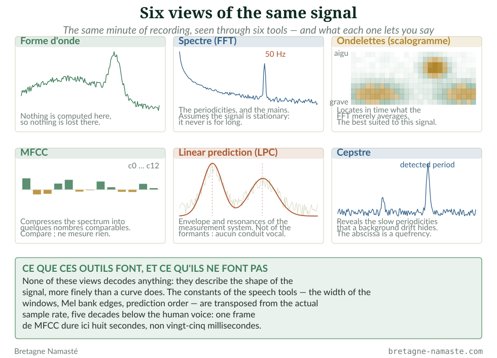
Fig. 5.6. La même minute d'enregistrement, vue par six
outils. Chaque vignette porte son verdict : ce que la représentation montre, et ce qu'elle
suppose. La vignette du scalogramme est la seule à montrer le temps et la fréquence
ensemble — c'est la raison pour laquelle elle est ici la mieux adaptée.
Ce qui survit à la transposition, et ce qui n'y survit pas
Outil
Ce qu'il vaut ici
Ce qu'il ne dit pas
Forme d'onde
La référence : rien n'y est calculé, donc rien n'y est perdu
Ni les périodicités lentes, ni la répartition de l'énergie
FFT
Directement valable — les périodicités et le réseau à 50 Hz
Suppose la stationnarité, que ce signal n'a jamais longtemps
Ondelettes
Le mieux adapté : situe dans le temps ce que la FFT moyenne
Résolution partout moyenne : c'est le prix du compromis
MFCC
Compression du spectre en quelques nombres comparables
L'échelle de Mel modélise l'oreille humaine, pas la plante
LPC
Enveloppe spectrale et résonances du système de mesure
Ces résonances ne sont pas des formants — voir ci-dessous
Cepstre
Les périodicités lentes qu'une dérive de fond masque
Un pic isolé sur un signal court ne prouve aucune périodicité
Pourquoi l'ondelette, et pas la FFT
L'analyse de Fourier suppose que le signal analysé est stationnaire sur la fenêtre observée.
Un signal végétal ne l'est pas : une bouffée d'activité de trois secondes dans une heure
d'enregistrement disparaît purement et simplement dans une transformée globale, noyée dans la
moyenne. L'ondelette la situe dans le temps et en donne l'étendue fréquentielle.
L'ondelette retenue est celle de Morlet — une sinusoïde enveloppée d'une gaussienne. Son
paramètre ω₀ règle le compromis entre les deux résolutions : six est la
valeur usuelle, qui satisfait presque exactement la condition d'admissibilité tout en gardant une
bonne localisation temporelle. L'augmenter affine la fréquence et brouille le temps ; le diminuer
fait l'inverse. Le logiciel expose ce réglage plutôt que de le cacher, car il n'existe pas de
bonne valeur universelle : il existe une valeur adaptée à ce qu'on cherche.
Le calcul se fait par produit dans le domaine de Fourier, en O(N log N)
par échelle — seule méthode praticable sur des dizaines de milliers de points. Le cône
d'influence, c'est-à-dire la zone où le résultat est contaminé par les bords de la fenêtre, est
affiché : sans lui, on prendrait un artefact de bord pour un événement.
⚠️ Le mot « formant » ne sera pas employé
En traitement de la parole, les pôles du filtre obtenu par prédiction
linéaire s'interprètent comme les résonances du conduit vocal, et on les appelle formants.
Ici, il n'y a pas de conduit vocal. Une plante n'a aucun résonateur acoustique,
et parler de formants végétaux serait une faute — de celles qui se propagent ensuite de blog en
blog. Ce que les pôles décrivent réellement, ce sont les résonances du système de
mesure et du milieu : la constante de temps de l'électrode, le filtrage de la carte, les
oscillations lentes du potentiel. C'est utile, et c'est autre chose. Le logiciel affiche donc
« résonances », jamais « formants ».
Le cepstre, ou le détour qui révèle les rythmes lents
L'idée est un joli détour. Le spectre d'un signal périodique est lui-même périodique, avec ses
harmoniques régulièrement espacées. En prenant le logarithme du spectre, puis sa transformée
inverse, cette régularité devient un pic unique, situé à la période du signal.
La variable obtenue n'est ni un temps ni une fréquence ; on l'appelle quéfrence, et elle se
mesure en secondes.
Sur un signal végétal, c'est ce qui permet de détecter une périodicité lente — un cycle
jour/nuit, une modulation d'arrosage, un rythme d'une dizaine de minutes — que ni la transformée
de Fourier ni l'autocorrélation ne font ressortir aussi nettement lorsque le fond dérive. La plage
explorée est bornée par défaut entre deux échantillons et le tiers de la durée analysée : en deçà
on lit du bruit, au-delà on n'a pas assez de répétitions pour conclure quoi que ce soit.
✦ Ce que ces outils ne feront jamais
Aucune de ces représentations ne décode quoi que ce soit. Elles
décrivent la forme du signal, plus finement qu'une courbe. La tentation est grande, devant un
scalogramme coloré, d'y lire une intention ; c'est la même tentation que devant un nuage. Le
chapitre de déontologie de l'ouvrage principal s'applique ici mot pour mot : on décrit ce qu'on
mesure, on nomme les hypothèses, et l'on s'interdit de conclure au-delà.
Des mots au lieu des notes
Le logiciel sait produire, au lieu d'une note, un énoncé court : « la feuille
frémit doucement ». Ce chapitre explique comment, et surtout pourquoi ce dispositif est présenté
avec un avertissement permanent plutôt qu'avec de l'émerveillement.
Le moteur lexical est le jumeau du moteur musical. Mêmes événements en entrée, mêmes garde-fous
de densité et d'anti-répétition, même traçabilité. Là où le moteur musical choisit une hauteur
dans une gamme, celui-ci choisit un mot dans un dictionnaire, puis assemble quelques mots en une
phrase. Les deux peuvent tourner ensemble : la même bouffée d'activité donne alors une note et
une phrase.
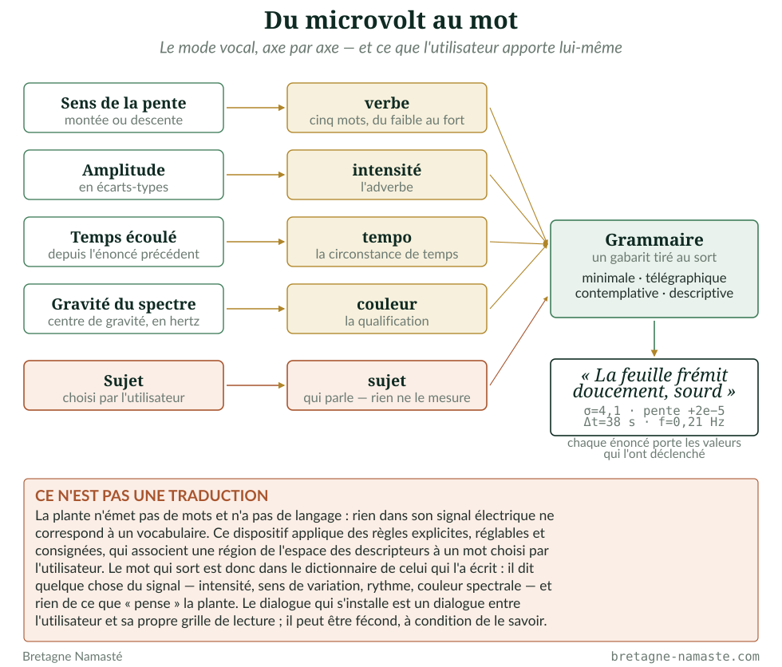
Fig. 5.7. Les quatre axes mesurés, les registres du
dictionnaire qu'ils commandent, et le sujet — qui ne vient d'aucune mesure. C'est la case rouge
qui fait tout l'intérêt et tout le danger du dispositif : « je » est un choix de
l'utilisateur, pas une donnée.
Six registres, quatre axes mesurés
Registre
Axe du signal
Rôle dans la phrase
verbe
sens de la pente de l'événement
l'action : monter, ou s'apaiser
intensité
amplitude en écarts-types
l'adverbe : à peine, nettement, fortement
tempo
temps écoulé depuis l'énoncé précédent
la circonstance de temps
couleur
centre de gravité spectral du signal
la qualification : sourd, ample, clair
sujet
aucun — choisi par l'utilisateur
qui parle
liaison
aucun — fixe
l'articulation entre deux propositions
Chaque registre est une liste ordonnée de mots ; la position dans la liste correspond à une
position sur l'axe, de zéro à un. Quatre grammaires règlent l'assemblage, de la plus avare à la
plus bavarde : minimale (un seul mot), télégraphique (le verbe et son
intensité), contemplative (une phrase courte) et descriptive (chaque axe donne
son mot). La plus honnête est la première : rien n'y est ajouté qui ne soit mesuré.
Le dictionnaire est un fichier, et c'est voulu
Le dictionnaire livré est un simple fichier JSON, et le modifier n'est pas une entorse : c'est
l'usage normal. Un praticien du soin écrira un registre différent de celui d'un botaniste ;
un atelier avec des enfants n'emploiera pas les mots d'un compte rendu clinique. Traduire le
dictionnaire en breton, en espagnol ou en langage de signes écrit ne demande qu'un éditeur de
texte.
Les listes livrées sont volontairement courtes — cinq mots par registre. Un dictionnaire trop
riche produit du bavardage, et le bavardage donne l'illusion du sens. La densité par défaut est
de six énoncés par minute, là où la musique en autorise vingt-quatre : une plante qui
« parlerait » vingt fois par minute ne serait pas écoutée.
Prononcer, hors ligne, ou se taire
Les énoncés peuvent être prononcés. La synthèse vocale est l'une des rares choses pour
lesquelles il n'existe aucune solution portable : chaque système a la sienne, et aucune n'est
garantie présente. Le logiciel essaie donc, dans l'ordre, la bibliothèque
pyttsx3, la voix intégrée de macOS, celle de Windows, puis
espeak-ng — et, si rien ne répond, il se tait sans que ce soit une
erreur : l'énoncé reste écrit à l'écran et consigné dans le fichier de séance.
Toutes ces voies parlent hors ligne. C'est une exigence, pas une préférence :
on enregistre des séances chez des gens, parfois dans des lieux de soin, et rien de ce qui s'y
dit n'a à partir sur un service distant. Aucun texte ne quitte la machine, jamais.
La parole est émise dans un fil séparé, avec une file d'attente bornée à quatre énoncés. Si la
plante « parle » plus vite que la voix ne prononce, les énoncés en trop sont abandonnés plutôt
qu'accumulés, et le compteur d'abandons est affiché : mieux vaut perdre une phrase que prendre
trois minutes de retard sur la mesure.
⚠️ Ce n'est pas une traduction
Il faut le dire nettement, parce que le dispositif invite à croire le
contraire. La plante n'émet pas de mots, n'a pas de langage, et rien dans son signal électrique
ne correspond à un vocabulaire. Ce que fait ce module est exactement ce que fait la sonification
musicale, avec un matériau différent : il applique des règles explicites, réglables et
consignées, qui associent une région de l'espace des descripteurs à un mot choisi par
l'utilisateur.
Le mot qui sort est donc dans le dictionnaire de celui qui l'a écrit. Il dit
quelque chose du signal — son intensité, son sens de variation, son rythme, sa couleur
spectrale — et rien du tout de ce que « pense » la plante. Le dialogue qui s'installe est un
dialogue entre l'utilisateur et sa propre grille de lecture ; il peut être fécond, à condition
de savoir cela. C'est pourquoi l'avertissement figure en permanence en tête de l'onglet, et non
dans une aide qu'on ouvre une fois.
Chaque énoncé porte sa justification
Un énoncé sans justification serait un oracle. Chacun est donc accompagné de la ligne qui l'a
produit :
On y lit l'amplitude en écarts-types et la position qu'elle occupe sur l'axe d'intensité, le
sens et la valeur de la pente, le temps écoulé, le centre de gravité spectral. Le fichier
enonces.csv de la séance conserve ces valeurs à côté du texte, de sorte
qu'on puisse, six mois plus tard, refaire le chemin à l'envers — et vérifier qu'aucune phrase ne
sort de nulle part.
🔬 Une expérience à faire, et qui désillusionne utilement
Chargez deux dictionnaires très différents — l'un contemplatif, l'autre
clinique — et relisez la même séance enregistrée avec chacun. Les mots changent du tout au
tout ; les valeurs, elles, sont identiques au millième près. On tient là, en une minute, la
démonstration la plus claire de ce que ce mode est : un miroir de la grille de lecture, posé
sur une mesure qui, elle, ne bouge pas.
PartieVI
La pratique
« Un instrument ne devient utile que le jour où l'on accepte qu'il vous contredise. »
Protocoles, comparaison avec les appareils du commerce, et ce qu'on a le droit d'en dire.
Raccorder : la plante, le boîtier, l'ordinateur
Tout ce qui précède se joue maintenant sur trois câbles et trois points de
contact. C'est la partie du travail où l'on perd le plus de qualité de mesure, et celle qui ne
demande aucun instrument — seulement de la méthode.
Ce qui est relié à quoi
La chaîne compte trois éléments et deux liaisons, et il faut résister à la tentation d'en
imaginer un quatrième. L'ordinateur portable est requis en permanence : c'est
lui qui configure la carte, reçoit le flux de mesure, l'enregistre et l'analyse. La carte ne
fonctionne pas seule ; elle n'a jamais été conçue pour cela, et la partie V explique pourquoi ce
choix était le bon.
Ce qui est double, en revanche, c'est l'énergie. Elle peut venir du port USB de l'ordinateur,
d'un bloc d'alimentation externe, ou d'un accumulateur — et le passage de l'une à l'autre se
fait sans coupure, en pleine séance.
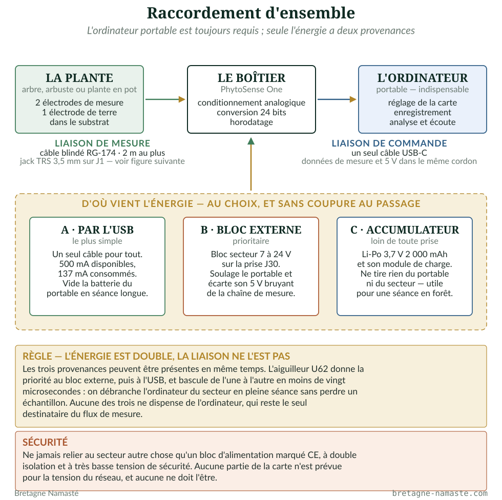
FIGURE 6.1 — La chaîne complète et les trois
provenances possibles de l'énergie. Les deux liaisons ne sont pas interchangeables : celle de
gauche porte la mesure, celle de droite la commande.
Situation
Alimentation conseillée
Pourquoi
Séance courte à l'intérieur
USB de l'ordinateur
un seul câble, rien à préparer
Séance de plusieurs heures
bloc externe sur J30
épargne la batterie et écarte le 5 V bruyant du portable
Mesure fine, plancher de bruit
bloc externe, ou accumulateur
c'est là que se gagnent les derniers dixièmes de microvolt
Extérieur, loin de toute prise
accumulateur Li-Po
l'ordinateur portable fonctionne alors sur sa propre batterie
Les trois points de contact
Deux électrodes mesurent, une troisième sert de retour vers le substrat. Leur emplacement
compte davantage que leur nature : deux contacts médiocres bien placés donnent un meilleur signal
que deux contacts parfaits mal placés.
La règle tient en une phrase : les deux électrodes de mesure doivent se trouver sur
le même individu, séparées de dix à trente centimètres, sur des tissus qui n'ont pas la même
fonction — une feuille et la tige qui la porte, par exemple. Trop près l'une de l'autre,
elles voient le même potentiel et la différence s'annule ; sur deux plantes distinctes, elles
mesurent surtout la différence entre deux pots.
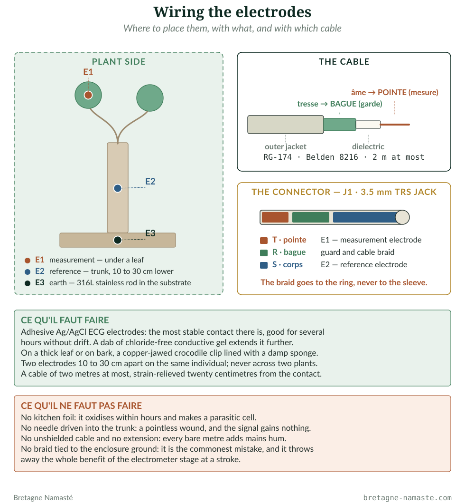
FIGURE 6.2 — Le détail du raccordement : où poser les
trois contacts, comment est fait le câble, et sur quelle broche du jack aboutit chaque
conducteur.
Une feuille et une racine : le montage le plus courant
Le montage que tout le monde essaie en premier relie une feuille et le
substrat, c'est-à-dire, électriquement, les racines. Il a deux mérites : il ne
demande qu'une pince et une tige, et il donne tout de suite quelque chose. Il a un défaut qu'il
faut énoncer avant de s'en servir : on ne mesure pas la feuille. On mesure le chemin
complet — feuille, pétiole, tige, racines, substrat, électrode — et un arrosage y pèse autant
qu'un changement de la plante.
FIGURE 6.3 — Le montage feuille / racine en coupe, et ce
qu'on plante dans la terre. La colonne de droite est la réponse à la question la plus posée :
quel métal, sous quelle forme, et pourquoi trois d'entre eux sont à proscrire.
Que planter dans la terre
C'est le point où l'on se trompe le plus souvent, et l'erreur ne se voit pas : elle produit un
signal, simplement ce n'est pas celui de la plante.
Électrode
Pourquoi
✓
Tige inox 316L, ø 4 à 6 mm, 60 à 100 mm
Inerte, stable, increvable, quelques euros. Le choix par défaut.
✓
Graphite — mine de ø 5 mm ou charbon de pile
Peu polarisable, n'injecte aucun ion métallique dans le sol. Fragile.
✓
Ag/AgCl avec pont salin — agar-agar 3 % et KCl 3 mol/L
La référence de laboratoire : dérive minimale, et aucun métal ne touche les racines.
Se prépare, et se refait tous les quelques mois.
✗
Laiton, cuivre
Forment une pile galvanique avec l'électrode de feuille — des dizaines de millivolts
qui dérivent avec l'humidité — et le cuivre est toxique pour les racines.
✗
Acier galvanisé
Le zinc se dissout : décalage énorme, croissant, et sol pollué.
✗
Aluminium
S'oxyde en quelques heures ; la mesure devient instable sans prévenir.
✦ La règle qui gouverne tout le reste : le même métal aux deux bouts
Deux métaux différents plongés dans un milieu humide constituent une pile.
On mesure alors sa tension — quelques dizaines de millivolts, cent fois le signal cherché — et
surtout sa dérive avec l'humidité. La ligne de base retire le décalage
constant ; elle ne retire pas la dérive. Si l'électrode de feuille est une pastille Ag/AgCl, la
meilleure électrode de substrat est un pont salin ; à défaut, de l'inox des deux côtés.
Trois précautions complètent la règle. Profondeur de trois à cinq centimètres,
à cinq centimètres au moins de la tige : plus près, on tranche des racines ; plus loin, on mesure
surtout le pot. Substrat humide, jamais détrempé ni sec — sec, l'impédance monte
et le bruit avec elle ; quelques gouttes d'eau claire avant la séance suffisent, jamais d'eau
salée, qui brûle les racines à la longue. Et la même place d'une séance à l'autre
si l'on veut comparer : la profondeur, la distance à la tige et la feuille choisie se notent, sans
quoi deux séances ne sont pas comparables.
⚠️ Ce que ce montage ne permet pas de conclure
Une variation observée entre feuille et substrat peut venir de la plante,
du contact, de l'humidité du sol, de la température, ou du câble qu'on a frôlé. Le montage ne
permet pas de trancher : il donne une grandeur, et c'est le protocole — répétitions, témoin,
notes de séance — qui décide de ce qu'elle vaut. La partie sur la déontologie de l'ouvrage
principal s'applique ici sans retrait.
Le câble, et l'erreur qui annule tout le reste
Le câble recommandé est du RG-174 à faible bruit — un coaxial souple de deux millimètres et
demi, du type employé en instrumentation. Deux mètres au maximum. Chaque mètre supplémentaire
ajoute de la capacité, donc de l'atténuation aux fréquences hautes, et surtout offre une prise
supplémentaire au champ du réseau à cinquante hertz.
⚠ La tresse va sur la bague, jamais sur le corps
C'est l'erreur la plus fréquente, et la plus coûteuse. Le réflexe de tout
électronicien est de relier le blindage à la masse : ici, il faut le relier à la
garde, c'est-à-dire à la bague du jack, qui est portée au potentiel du signal
par un suiveur. Une tresse à la masse transforme la capacité du câble en charge sur l'entrée,
et l'on perd d'un seul geste tout ce que l'étage électrométrique avait gagné — plusieurs
décennies de courant de fuite, réduites à néant par un coup de fer à souder.
Conducteur
Broche du jack J1
Va vers
Âme centrale
T — pointe
E1, électrode de mesure
Tresse de blindage
R — bague
garde : ni masse, ni signal
Second conducteur
S — corps
E2, électrode de référence
Choisir le contact selon le végétal
Support
Contact conseillé
Tenue
Feuille souple et large
électrode Ag/AgCl adhésive d'électrocardiographie
4 à 8 h
Feuille épaisse, succulente
pince crocodile à mors cuivre, éponge humide
2 à 4 h
Écorce, tronc
pince à mors larges, éponge et gel sans chlorure
6 à 12 h
Substrat (racines)
tige inox 316L de 60 à 100 mm, enfoncée de 3 à 5 cm —
ou pont salin Ag/AgCl
durable
Les durées indiquées sont celles au bout desquelles la dérive du contact devient
comparable au signal cherché. Elles s'allongent nettement à l'ombre et par forte humidité, et
s'effondrent au soleil direct. Une séance de référence commence donc toujours par vingt minutes
d'attente : le temps que le potentiel de contact se stabilise. Ce délai n'est pas du temps
perdu, c'est la première mesure.
◆ Le geste qui évite la moitié des déboires
Fixer le câble à la plante ou au pot par un serre-câble souple, à une
vingtaine de centimètres du contact. La traction du câble sur l'électrode est la première
cause d'artefact : elle produit des sauts de plusieurs millivolts, bien plus grands que tout
ce que la plante peut faire, et parfaitement indiscernables d'un vrai événement pour qui n'a
pas vu le câble bouger.
Quatre protocoles qui exploitent réellement la carte
Une carte qui mesure mieux ne sert à rien si l'on continue d'enregistrer comme
avant. Voici quatre protocoles que le niveau 3 rend possibles, et qui ne l'étaient pas aux
niveaux inférieurs.
Protocole 1 · une soirée
Caractériser sa propre chaîne avant de caractériser une plante
Durée 90 minMatériel carte, résistance 100 MΩProduit une fiche de recette remplie
Pourquoi. Toute mesure ultérieure sera comparée à ce plancher. Sans lui,
vous ne saurez jamais si une variation est un signal ou du bruit.
Remplacer la plante par une résistance de 100 MΩ, boîtier fermé, alimentation sur
batterie.
Enregistrer trente minutes sans rien toucher, dans la pièce où vous travaillerez.
Dans l'onglet Traceur : plot densite with lines, puis
set logscale xy. Relever le plancher entre 1 et 10 Hz.
Tracer la variance d'Allan : plot allan. Relever la durée
d'intégration optimale — c'est la durée maximale sur laquelle il est utile de moyenner.
Exporter le rapport de mesure et le coller dans le carnet.
Ce qu'on apprend. Votre plancher réel, qui sera sans doute deux à trois
fois supérieur à celui de la fiche technique — parce que votre pièce, votre câble et votre
table existent. C'est ce nombre-là qui compte.
Protocole 2 · une journée
Le témoin permanent : deux voies, dont une qui ne mesure rien
Durée 8 à 24 hMatériel deux cartes fillesProduit le droit d'affirmer quelque chose
Pourquoi. C'est le protocole le plus important de tout l'ouvrage, et le
moins pratiqué. La voie A mesure la plante ; la voie B mesure une résistance de 100 MΩ placée
à côté, dans les mêmes conditions, avec le même câble.
Installer les deux voies, laisser stabiliser trente minutes, lancer l'enregistrement.
Au dépouillement, superposer les deux voies. Tout ce qui apparaît sur les
deux vient de l'environnement — température, réseau, vibrations, opérateur.
Ce qui n'apparaît que sur la voie A mérite d'être regardé.
Ce qu'on apprend. En général : que soixante à quatre-vingts pour cent de
ce qu'on prenait pour des réactions figure aussi sur le témoin. C'est décevant les premières
fois, et c'est exactement ce qui sépare une observation d'une impression.
Protocole 3 · une semaine
Mesurer une vitesse de propagation
Durée 3 séancesMatériel deux voies, tige de 20 cmProduit une vitesse, en mm/s
Pourquoi. C'est l'une des rares mesures qui distingue sans ambiguïté un
phénomène physiologique d'un artefact : un artefact électrique arrive partout en même temps,
un potentiel d'action se propage à quelques millimètres par seconde. Elle exige un
échantillonnage simultané des deux voies — ce que seul le niveau 3 permet.
Deux électrodes espacées de quinze à vingt centimètres sur la même tige, référence
commune au substrat.
Stimulation reproductible et documentée : une goutte d'eau froide sur une feuille
distante, marquée d'un appui sur le bouton.
Échantillonnage à 1 kHz, mode déclenché sur la voie proche, pré-déclenchement 20 %.
Mesurer le décalage entre les deux fronts, diviser la distance par ce décalage.
Répéter dix fois, à une heure d'intervalle. Une vitesse crédible est reproductible à
trente pour cent près.
Ce qu'on attend. Entre 1 et 20 mm/s selon l'espèce et la température.
Un décalage nul, ou inférieur à la milliseconde, signale un couplage électrique et non une
propagation : la manipulation est à recommencer.
Protocole 4 · un mois
Le rythme circadien, et comment ne pas se tromper
Durée 30 joursMatériel carte + ambiance + batterieProduit un périodogramme honnête
Pourquoi. C'est l'expérience la plus séduisante et la plus piégeuse du
domaine. Une dérive thermique quotidienne ressemble à s'y méprendre à un rythme circadien.
Enregistrer en continu, avec les capteurs d'ambiance actifs, la voie témoin active.
Alimenter sur batterie, remplacée chaque jour à heure fixe — l'événement est marqué.
Au dépouillement, tracer le périodogramme du signal et celui de la
température. S'ils présentent le même pic à vingt-quatre heures, on ne peut rien conclure.
Pour trancher : passer en obscurité constante et température régulée pendant la
deuxième semaine. Un rythme endogène persiste avec une période légèrement différente de
vingt-quatre heures ; un artefact thermique disparaît.
Ce qu'on apprend. Le plus souvent, que la période observée est
exactement de vingt-quatre heures, ce qui trahit l'environnement plutôt que la plante — les
rythmes endogènes ont typiquement des périodes de 23 à 26 heures. C'est une leçon d'humilité
utile, et elle n'est accessible qu'avec un instrument qui mesure aussi son ambiance.
Face aux appareils du commerce
Trois familles d'appareils se partagent le marché. Les comparer honnêtement
suppose de dire aussi ce qu'ils font mieux — et il y a des choses qu'ils font mieux.
Les caractéristiques qui suivent proviennent des manuels publiés par
les fabricants, cités en bibliographie. Elles décrivent ce que les appareils annoncent ; aucune
mesure indépendante n'a été conduite sur leurs performances électriques, et il faut donc les lire
comme des déclarations, non comme des relevés.
La famille Music of the Plants : Ginkgo, Bamboo, U1 Pro
Issue des recherches menées à Damanhur depuis les années 1970, cette famille est la plus
ancienne et la plus aboutie sur le plan musical. Trois modèles couvrent une gamme de prix large.
Caractéristique annoncée
Ginkgo
Bamboo
U1 Pro
Matériau
bambou
bambou
aluminium peint
Haut-parleur
intégré
intégré
externe
Batterie
lithium-ion
lithium-ion
nickel-hydrure
Profils musicaux préprogrammés
3
12
12
Choix parmi 128 instruments
—
oui
oui
Gammes musicales
—
19
19
Diapasons
—
440 / 432 / 426,7 Hz
440 / 432 / 426,7 Hz
Sortie MIDI
—
micro-USB
DIN 5 broches
Sortie casque / haut-parleur
—
oui
oui
Carte micro-SDHC
—
oui
—
Réglages manuels rapides
—
—
oui
Réverbération et chorus séparés
—
oui
oui
Le U1 Pro mérite un examen détaillé, car c'est le seul appareil grand public à exposer des
réglages de mesure et non seulement de musique. Son panneau comporte un sélecteur
d'échelle de résistance — position haute pour les arbres, basse pour les plantes en pot —, un
réglage de sensibilité d'entrée, un indicateur d'auto-échelle, un réglage de fréquence
d'échantillonnage, un réglage de vélocité MIDI, un interrupteur MIDI, un sélecteur monodique ou
polyphonique à trois voix, et un sélecteur de gamme majeure ou chromatique. S'y ajoutent, par
menu, le volume, le chorus, la réverbération, la balance stéréo, un effet spatial et le choix de
l'instrument.
✦ Ce que ces appareils font mieux, et qu'il faut reconnaître
Trois choses, et ce ne sont pas des détails. Ils fonctionnent
immédiatement, sans ordinateur, sans installation, sans soudure — et l'on sous-estime
toujours ce que cela vaut devant un public. Ils sont beaux et silencieux, ce
qui compte dans un lieu de méditation ou une exposition. Leur musique est mieux
composée : les profils du Bamboo et du U1 Pro sont le fruit de décennies d'écoute, et
un amateur qui règle lui-même ses gammes obtiendra rarement, du premier coup, un résultat aussi
juste. Le logiciel PhytoScope reprend d'ailleurs explicitement cette idée de profils, et lui
doit beaucoup.
PlantWave
Appareil plus récent, résolument tourné vers l'application mobile. Il se distingue par une
liaison sans fil, une application pour téléphone qui gère l'appairage, la configuration MIDI et
les mises à jour de micrologiciel, une sortie MIDI sur jack de trois millimètres et demi au
format normalisé, et une autonomie annoncée de vingt-deux à vingt-quatre heures. Les réglages
exposés couvrent le choix d'instrument, la gamme — pentatonique ou chromatique —, le tempo, la
polyphonie et la sensibilité, ainsi que le canal MIDI et le numéro de contrôleur continu.
Son parti pris est cohérent et assumé : l'appareil est un instrument de musique dont
la plante est la source, et non un instrument de mesure. C'est une position parfaitement
légitime, à condition qu'elle soit énoncée — et c'est là que le bât blesse dans la communication
du domaine tout entier, fabricants et amateurs confondus.
La comparaison qui compte
Critère
Appareils du commerce
PhytoSense One
Mise en route
Immédiate — trente secondes
Quinze heures de montage, puis immédiate
Qualité musicale sans réglage
Excellente — profils
soigneusement composés
Bonne — douze profils repris de la même idée
Autonomie sans ordinateur
Native
Oui, par la sortie MIDI, mais moins aboutie
Grandeur physique accessible
Aucune, ou non documentée
Volts et ohms, étalonnés et vérifiables
Horodatage
Celui du téléphone ou de l'ordinateur
Compteur d'échantillons à 1 ppm
Voie témoin simultanée
Non
Oui, quatre voies simultanées
Mesure d'ambiance
Non
Oui, dans le même fichier
Auto-test étalonné
Non
Oui, trois étalons à 0,1 %
Format des données
Propriétaire ou inexistant
WAV, CSV, JSON
Schémas et code
Fermés
Ouverts, licences libres
Prix
350 à 600 €
≈ 330 € en pièces, plus votre temps
⚠️ Le vrai partage n'est pas celui du prix
Il serait facile — et malhonnête — de conclure que la carte décrite ici est
« meilleure ». Elle répond à une autre question. Si vous voulez faire entendre une plante à
trente personnes dans une salle, un Bamboo posé sur une table fera mieux, plus vite, et avec
moins de risques. Si vous voulez pouvoir dire ce que vous avez mesuré, aucun appareil
du commerce ne vous le permettra, quel que soit son prix. Les deux usages sont légitimes ; les
confondre ne l'est pas.
Ce qu'on a le droit d'en dire
Un instrument plus exact ne donne pas le droit d'affirmer davantage : il donne
le droit d'affirmer plus précisément. La distinction est toute la déontologie du domaine.
Trois formulations reviennent constamment dans la communication du domaine. Aucune n'est
soutenable, et la carte ne les rend pas plus soutenables.
« La plante réagit à ma présence. » Pour le dire, il faudrait : une voie
témoin qui ne réagisse pas, une série d'entrées et de sorties en aveugle, et un protocole
déterminé à l'avance. Sans cela, on observe une coïncidence entre un mouvement dans la pièce et
une variation du signal — ce qui est vrai, mais explicable par le couplage capacitif d'un corps
humain, qui est colossal.
« Chaque plante a sa signature sonore. » La signature observée est
principalement celle du contact : deux électrodes posées différemment sur la même plante donnent
deux « signatures ». C'est vérifiable en dix minutes, et c'est déconcertant la première fois.
« La plante apprend à moduler ses sons. » Cette affirmation, qu'on trouve
dans la documentation commerciale, demanderait un protocole d'apprentissage avec groupe témoin,
critère d'apprentissage défini avant l'expérience, et analyse en aveugle. Rien de tel n'a été
publié dans une revue à comité de lecture.
🔬 Ce qu'on peut affirmer, en revanche
Que le potentiel de surface d'un végétal varie de façon mesurable.
Que certaines stimulations — blessure, froid brutal, contact mécanique — produisent des
variations reproductibles et propagatives, documentées depuis Bose et confirmées depuis. Que
l'impédance de contact varie avec l'état hydrique. Et qu'il est possible de transformer tout
cela en musique d'une façon explicite, réglable et consignée. C'est déjà considérable, et cela
n'a pas besoin d'être exagéré pour être beau.
✨ Pourquoi cette rigueur ne gâche rien
On craint parfois que la mesure tue l'émerveillement. L'expérience montre
l'inverse. Quand on a passé quinze heures à souder un instrument, quand on connaît son plancher
de bruit, quand on a vu la voie témoin bouger en même temps que la plante et qu'on a compris
pourquoi — alors, le jour où quelque chose apparaît seulement sur la voie de la
plante, l'émotion n'est pas diminuée : elle est fondée. Ce n'est plus « il s'est passé quelque
chose », c'est « il s'est passé quelque chose, et je sais que ce n'était pas moi ». C'est le
seul émerveillement qui résiste au temps.
Annexes
Annexes
Dossier de schémas, nomenclature, circuit imprimé,
protocole, glossaire, bibliographie et index.
Annexe A — Dossier de schémas
Les huit feuilles, rassemblées. Elles sont également publiées en fascicule
séparé, au format paysage, pour être imprimées et emportées à l'établi.
Feuille
Contenu
Où elle est commentée
1 / 8
Carte fille FE-Z — entrée électrométrique, garde,
contre-réaction de mode commun
chapitre 3
2 / 8
Carte fille FE-B — pont alternatif et détection
synchrone
chapitre 4
3 / 8
Carte mère — gain programmable, filtre de Bessel,
conversion
chapitre 5
4 / 8
Alimentations et isolement galvanique
chapitre 5
5 / 8
Partie numérique, USB-C, MIDI, interface
chapitre 7
6 / 8
Brochage du connecteur mezzanine et réseau d'auto-test
chapitres 2 et 4
7 / 8
Protections, aiguillage des deux sources, mesure de
consommation
« Protéger, alimenter »
8 / 8
Signalisation, afficheur OLED, bouton
« Ce que l'appareil dit de lui-même »
Conventions de lecture
Les symboles suivent la norme CEI 60617 : résistances rectangulaires, masses en triangle
plein pour l'analogique et en peigne pour le numérique. Les étiquettes pentagonales désignent les
signaux qui traversent d'une feuille à l'autre. Un trait mixte cuivre matérialise la barrière
d'isolement : aucun conducteur ne la franchit.
Fig. 6.4. Feuille 6 — brochage du connecteur mezzanine,
vingt points au pas de 1,27 mm.
Fichiers publiés
Les sources du projet accompagnent cet ouvrage. Le dossier hardware/
contient la nomenclature au format ouvert, le dossier pdf-src/assets/svg/
le programme qui dessine l'intégralité des planches, et src/phytoscope/
le logiciel complet.
✦ Les schémas sont dessinés par un programme
Chaque planche de cet ouvrage — schémas, routage, diagrammes, graphiques —
est produite par un programme Python déterministe, livré avec les sources. Rien n'a été dessiné
à la main. Cela garantit qu'une correction de valeur se répercute partout, que les planches
peuvent être régénérées dans dix ans, et qu'aucune divergence ne s'installe entre le texte et
la figure. C'est une exigence coûteuse à l'écriture, et payante à la maintenance.
Annexe B — Nomenclature
Quarante-sept références, deux cent vingt-trois euros. Le fascicule séparé y
ajoute les accessoires, l'outillage et les budgets détaillés.
PhytoSense One — board bill of materials Bretagne Namasté · bretagne-namaste.com · contact@bretagne-namaste.com revision B — September 2026 · licence CERN-OHL-P v2
Ref.
Qty
Description
Package L × W × H (mm)
Manufacturer · part
Unit €
Total €
Analog input
U1, U2
2
Electrometer amplifier, Ib < 20 fA, integrated guard The critical part: do not substitute
3.5 mm stereo jack socket, through-hole Tip = electrode, ring = guard
through-hole per part
CUI SJ1-3535NG
1.05
2.10
Bridge and measurement
U3
1
Instrumentation amplifier, CMRR 140 dB FE-B channel
MSOP-8 3.0 × 3.0 × 1.1
Texas Instruments INA828AIDGKR
7.90
7.90
U4
1
Analog switch 2:1, 4.5 Ω Synchronous demodulator
SOT-23-8 2.9 × 1.6 × 1.1
Analog Devices ADG1419BRJZ
3.60
3.60
U6, U8
2
Analog multiplexer 8:1, low charge injection Ranges and gains
TSSOP-16 5.0 × 4.4 × 1.2
Texas Instruments TMUX1208PWR
1.85
3.70
R10
1
Reference resistor 1 MΩ 0.1 % 15 ppm The bridge's reference arm
1206 3.2 × 1.6 × 0.95
Vishay MFR-12-1M0-0.1%
1.40
1.40
R20-R23
4
Range network 100 k / 1 M / 10 M / 100 MΩ 0.1 % A matched set, price for all four
1206 3.2 × 1.6 × 0.95
Vishay VHP series
9.60
38.40
Amplification
U7
1
Zero-drift amplifier, 0.1 µV/°C Programmable gain and filter
SOIC-8 4.9 × 3.9 × 1.75
Texas Instruments OPA2189IDR
4.70
4.70
U9
1
Fully differential amplifier Driving the converter
WSON-10 3.0 × 3.0 × 0.8
Texas Instruments THS4551IDGKR
4.10
4.10
R24, R25
2
Resistor 4.7 kΩ 0.1 % Bessel filter
0805 2.0 × 1.25 × 0.85
Vishay TNPW08054K70BEEA
0.42
0.84
C20
1
Capacitor 33 nF C0G 2 % Bessel filter
0805 2.0 × 1.25 × 0.85
Kemet C0805C333G3GACTU
0.64
0.64
C21
1
Capacitor 68 nF C0G 2 % Bessel filter
1206 3.2 × 1.6 × 0.95
Kemet C1206C683G3GACTU
1.10
1.10
Conversion
U10
1
24-bit Δ-Σ converter, 4 simultaneous channels The heart of the measurement
TSSOP-20 6.5 × 4.4 × 1.2
Texas Instruments ADS131M04IPWR
9.80
9.80
U11
1
Voltage reference 2.5 V, 2 ppm/°C Sets the absolute scale
SOIC-8 4.9 × 3.9 × 1.75
Analog Devices ADR4525BRZ
6.40
6.40
Y1
1
TCXO oscillator 12.288 MHz ±1 ppm The single time base
3225 3.2 × 2.5 × 1.2
Abracon ASTX-H11-12.288MHZ
4.50
4.50
C25
1
Capacitor 10 µF X7R 25 V Filtering the reference
1206 3.2 × 1.6 × 0.95
Murata GRM31CR71E106KA12
0.38
0.38
Isolation
T1
1
Isolation transformer 1:1.3, 3 kV Crosses the barrier
SMD voir notice
Würth 750315371
6.90
6.90
U20
1
Push-pull transformer driver, 1 A Can be locked to SYNC
SOIC-8 4.9 × 3.9 × 1.75
Texas Instruments SN6505BDBVR
2.30
2.30
U24
1
Digital SPI isolator, 6 channels, 17 Mb/s SPI barrier
SOIC-20 12.8 × 7.5 × 2.65
Analog Devices ADuM4151BRIZ
9.40
9.40
U25
1
Bidirectional I²C isolator Environmental sensors
SOIC-8 4.9 × 3.9 × 1.75
Analog Devices ADuM1251ARZ
4.20
4.20
D10, D11
2
Dual Schottky diode 30 V 200 mA Full-wave rectification
SOT-23 2.9 × 1.3 × 1.1
Nexperia BAT54S
0.14
0.28
Power
U21
1
Ultra-low-noise linear regulator +5 V, 0.8 µV rms Positive analog rail
MSOP-12 3.0 × 4.0 × 1.1
Analog Devices LT3045EMSE
5.60
5.60
U22
1
Negative linear regulator −5 V, 0.8 µV rms Negative analog rail
MSOP-12 3.0 × 4.0 × 1.1
Analog Devices LT3094EMSE
5.90
5.90
U23
1
Low-noise 3.3 V regulator, 300 mA Digital rail
SOT-23-5 2.9 × 1.6 × 1.1
Texas Instruments TPS7A2033PDBVR
1.20
1.20
FB1
1
Ferrite bead 600 Ω at 100 MHz, 2 A Filtering the USB input
0805 2.0 × 1.25 × 0.85
Murata BLM21PG600SN1D
0.15
0.15
C30-C34
5
Capacitor 22 µF X5R 10 V Reservoirs
0805 2.0 × 1.25 × 0.85
Murata GRM21BR61A226ME51
0.32
1.60
C40-C55
16
Capacitor 100 nF X7R 50 V Decoupling
0402 1.0 × 0.5 × 0.5
Murata GRM155R71H104KE14
0.04
0.64
Digital
U30
1
Dual-core Cortex-M33 microcontroller, 150 MHz Two cores, twelve PIO state machines
QFN-80 10.0 × 10.0 × 0.9
Raspberry Pi RP2350B
1.60
1.60
U31
1
QSPI flash memory, 128 Mbit Firmware and settings
SOIC-8 4.9 × 3.9 × 1.75
Winbond W25Q128JVSIQ
1.10
1.10
Y2
1
Crystal 12 MHz ±20 ppm The microcontroller's clock
3225 3.2 × 2.5 × 1.2
Abracon ABM8-12.000MHZ-B2-T
0.45
0.45
J20
1
USB-C socket, 16 pins, surface mount Power and data
SMD voir notice
GCT USB4085-GF-A
1.30
1.30
U33
1
4-channel ESD protection network, 0.5 pF ±15 kV in air
SOT-23-6 2.9 × 1.6 × 1.1
Texas Instruments TPD4S014DBVR
0.85
0.85
R30, R31
2
Resistor 5.1 kΩ 1 % USB-C declaration
0402 1.0 × 0.5 × 0.5
Yageo RC0402FR-075K1L
0.02
0.04
R34, R35
2
Resistor 33 Ω 1 % MIDI output
0402 1.0 × 0.5 × 0.5
Yageo RC0402FR-0733RL
0.02
0.04
J21
1
3.5 mm stereo jack socket (MIDI TRS type A) Drives a hardware synthesizer directly
through-hole per part
CUI SJ1-3535NG
1.05
1.05
DS1
1
Serially addressed RGB LED Status and level
PLCC-4 3.5 × 3.5 × 1.9
Worldsemi WS2812B-Mini
0.28
0.28
S1
1
Tactile button 6 × 6 mm Marking and auto-configuration
through-hole per part
Alps SKHHAKA010
0.22
0.22
Environment
U40
1
Temperature, humidity, pressure and VOC sensor Optional but recommended
LGA-8 3.0 × 3.0 × 0.9
Bosch BME688
9.50
9.50
U41
1
Digital ambient-light sensor Correlation with photosynthesis
DFN-6 2.0 × 2.0 × 0.75
ams TSL2591
5.20
5.20
RT1
1
PT1000 platinum probe, class A Substrate temperature
2 fils
Heraeus 32208551
3.40
3.40
Calibration
RC1-RC3
3
Reference resistors 1 MΩ / 10 MΩ / 100 MΩ 0.1 % Self-test, price for all three
1206 3.2 × 1.6 × 0.95
Vishay VHP series
7.20
21.60
U50
1
4-channel self-test switch Injecting the references
TSSOP-14 5.0 × 4.4 × 1.2
Texas Instruments TMUX1104PWR
1.40
1.40
Printed circuit board
PCB
1
4-layer PCB 100 × 60 mm, ENIG, mask keep-out Unit price in quantity five
—
JLCPCB —
12.00
12.00
Power protection
J30
1
2.1 mm DC power socket, through-hole, with switched contact The switched contact signals that the mains adapter is present
through-hole per part
CUI PJ-002AH
1.15
1.15
D30
1
Unidirectional TVS diode 18 V, 400 W Clamps surges from the adapter, and discharges
DO-214AC 5.0 × 2.6 × 2.2
Littelfuse SMAJ18A
0.32
0.32
Q30
1
P-channel MOSFET, 30 V 6 A, 35 mΩ — reverse protection A reversed polarity destroys nothing any more: it simply blocks
SOT-23 2.9 × 1.3 × 1.1
Diodes Inc DMP3099L-7
0.42
0.42
U60
1
Buck converter 4–30 V to 5.2 V, 2 A, protected Accepts 7 to 24 V: any mains adapter will do
SOT-23-6 2.9 × 1.6 × 1.1
Texas Instruments TPS62932DRLR
1.35
1.35
U61
1
Adjustable current-limiting switch, 75 mA–1.5 A Limits the current drawn from USB to 500 mA, opens and flags
SOT-23-6 2.9 × 1.6 × 1.1
Texas Instruments TPS2553DBVR
1.28
1.28
U62
1
Automatic priority power selector, 2 A Switches without a break between adapter and USB, adapter first
SOT-23-6 2.9 × 1.6 × 1.1
Texas Instruments TPS2116DRLR
1.42
1.42
F30, F31
2
Resettable fuse 0.5 A, 16 V Resets itself after a short circuit; no part to replace
1812 4.5 × 3.2 × 2.5
Bourns MF-MSMF050-2
0.38
0.76
U63
1
Bus current and voltage monitor, I²C, 12 bits Feeds the display: voltage, current, power drawn
SOT-23-8 2.9 × 1.6 × 1.1
Texas Instruments INA219AIDCNR
2.10
2.10
R60, R61
2
Sense resistor 0.1 Ω 1 % 1 W Shunt for measuring the current drawn
1206 3.2 × 1.6 × 0.95
Vishay WSL1206R1000FEA
0.58
1.16
Input protection
F1, F2
2
Resettable fuse 50 mA, 60 V — electrode protection Connecting to a live source no longer destroys the input
1206 3.2 × 1.6 × 0.95
Bourns MF-PSMF050X-2
0.42
0.84
D3, D4
2
Very-low-capacitance ESD protection network, 0.5 pF ±20 kV in air, without loading the electrometer input
SOT-23 2.9 × 1.3 × 1.1
Nexperia PESD5V0X1BT
0.16
0.32
D5
1
Bidirectional TVS diode 6.5 V on the reference electrode Bounds the re-injected voltage whatever happens
SOT-23 2.9 × 1.3 × 1.1
Nexperia PESD3V3S2UT
0.18
0.18
Indicators
DS2
1
Bi-colour green/amber LED 3 mm — power source Green: mains adapter. Amber: powered from USB
through-hole per part
Kingbright WP3VEGW
0.45
0.45
DS3
1
Blue LED 3 mm — USB link enumerated Steady: enumerated. Blinking: measurement stream active
through-hole per part
Kingbright L-934MBC
0.28
0.28
DS4
1
Red LED 3 mm — fault Overcurrent, persistent saturation, failed self-test
through-hole per part
Kingbright L-934SRC-J4
0.22
0.22
DS5
1
OLED display 128 × 64, 0.96 inch, I²C Source, gain, range, measured voltage, current drawn, faults
module 27 × 27 × 4
Univers. SSD1306 0,96" I²C
4.20
4.20
R70-R73
4
LED current-limiting resistor 1 kΩ 1 % LED current limited to 2 mA: readable without dazzling
0805 2.0 × 1.25 × 0.85
Yageo RC0805FR-071KL
0.02
0.08
Shielding and EMC
SH1
1
Tinned shielding can 35 × 25 × 3 mm, solder-on Covers the input stage: this is what makes the board immune
metal can
Würth 36503250
1.80
1.80
SH2
1
Tinned shielding can 25 × 25 × 3 mm, solder-on Covers the buck converter and its inductor
metal can
Würth 36502550
1.60
1.60
FB10-FB15
6
Common-mode ferrite 90 Ω at 100 MHz on the outgoing lines Stops conducted emissions from leaving by the cables
0805 2.0 × 1.25 × 0.85
Murata BLM21PG221SN1D
0.14
0.84
C60-C65
6
Feed-through capacitor 1 nF, 50 V, X7R High-frequency decoupling where the panels are crossed
0402 1.0 × 0.5 × 0.5
Murata GRM155R71H102KA01
0.03
0.18
Total for the components, one unit
244.35
PhytoSense One · Bretagne Namasté · bretagne-namaste.com · revision B — September 2026 · licence CERN-OHL-P v2
Prix relevés en septembre 2026 chez un distributeur européen, hors taxes, pour
des quantités unitaires. Les références de distributeur sont indicatives : les composants
proposés sont tous des articles de catalogue, disponibles chez plusieurs fournisseurs.
⚠️ Les quatre références à ne pas substituer
L'ADA4530-1 (courant d'entrée et garde intégrée), les résistances de
référence à 0,1 % et faible coefficient de température, les régulateurs LT3045 et LT3094
(bruit), et le transformateur d'isolement (tension de tenue). Tout le reste accepte des
équivalents. Ces quatre-là définissent la performance de l'appareil, et leur substitution est
la première cause d'écart entre une carte qui tient ses spécifications et une carte qui
ressemble seulement à celle du livre.
Annexe C — Circuit imprimé
Quatre couches, cent par soixante millimètres, douze euros pièce. Le fascicule
séparé contient les planches au format paysage et le dossier de fabrication complet.
Fig. 6.5. Empilage, impédances contrôlées et règles de
percement — ce que le fabricant doit savoir, et rien de plus.
Le dossier de fabrication
Fichier
Contenu
phytosense-F_Cu.gbr … B_Cu.gbr
Les quatre couches de cuivre
phytosense-F_Mask.gbr, B_Mask.gbr
Vernis épargné — contient la zone d'entrée dégagée
phytosense-F_Silkscreen.gbr, B_Silkscreen.gbr
Sérigraphie
phytosense-Edge_Cuts.gbr
Contour de la carte
phytosense.drl
Percements, traversants uniquement
phytosense-top-pos.csv
Positions des composants, pour le placement automatique
✦ La seule option non standard à demander
Le vernis épargné sous les entrées. Il figure dans les fichiers, mais
certains fabricants « corrigent » automatiquement les ouvertures de vernis qu'ils jugent
anormales. Il faut donc l'écrire dans la commande, en toutes lettres : ne pas modifier les
ouvertures de masque, y compris les grandes zones. Une carte livrée avec du vernis sous
l'entrée présente un courant de fuite cent fois supérieur à la spécification, et rien ne le
signale avant la recette.
Annexe D — Protocole et formats
Tout ce qu'il faut pour écrire son propre logiciel, ou pour relire un fichier
dans dix ans sans celui-ci.
Le dialogue de contrôle
Port série virtuel, 115 200 bauds, huit bits, sans parité. Les commandes sont en texte,
terminées par un retour chariot et un saut de ligne. Les réponses tiennent sur une ligne et
commencent par + en cas de succès, − en cas
d'erreur, suivi d'un objet JSON.
Commande
Effet
Réponse
?
Identification complète de la carte et de sa carte fille
Force le gain matériel, ou rend la main à l'auto-échelle
gain appliqué, état de l'auto-échelle
range <0-3>
Gamme du pont de mesure
gamme, résistance de référence
clock
Compteur d'échantillons et écart de l'oscillateur
n, temps, ppm, échantillons perdus
mark <texte>
Insère un marqueur horodaté dans le flux
numéro d'échantillon, étiquette
selftest
Mesure les trois étalons internes
mesures, écarts, plancher de bruit, courant de fuite
env
Grandeurs d'ambiance
température, humidité, pression, éclairement
save
Mémorise les réglages courants en flash
confirmation
Le flux de mesure
Classe audio 2.0, entrée, quatre voies, vingt-quatre bits, source d'horloge asynchrone. La
correspondance entre les voies et les grandeurs est donnée par la commande d'identification. La
conversion en volts s'écrit :
Conversion d'un échantillon en volts
V_entrée = (échantillon / 2^23) × pleine_échelle / gain_matériel + offset_CNA
échantillon entier signé sur 24 bits, tel que lu dans le flux
pleine_échelle 1,2 V pour l'ADS131M04 avec la référence à 2,5 V
gain_matériel valeur renvoyée par « ? » ou par « gain »
offset_CNA tension de recentrage, renvoyée à chaque changement
Le format d'une séance
Un répertoire, six fichiers, aucun format propriétaire.
Fichier
Format
Contenu
seance.json
JSON
Métadonnées, réglages complets, étalonnage, correspondance des horloges, compteurs.
C'est le fichier qui rend les autres interprétables.
signal.wav
WAV PCM 24 bits
Signal brut, une piste par voie. L'échelle est donnée par full_scale_v
dans le JSON.
musique.wav
WAV PCM 16 bits
Le rendu sonore, tel qu'il a été entendu, après amplification et limitation.
import json, wave, numpy as np
meta = json.load(open("seance.json", encoding="utf-8"))
with wave.open("signal.wav", "rb") as w:
brut = w.readframes(w.getnframes())
voies, fs = w.getnchannels(), w.getframerate()
# 24 bits petit-boutiste, signé
a = np.frombuffer(brut, dtype=np.uint8).reshape(-1, 3).astype(np.int32)
v = a[:, 0] | (a[:, 1] << 8) | (a[:, 2] << 16)
v = np.where(v & 0x800000, v - 0x1000000, v)
volts = v.astype(float) / 8388607.0 * meta["full_scale_v"]
volts = volts.reshape(-1, voies)
temps = np.arange(volts.shape[0]) / fs
print(f"{volts.shape[0]} échantillons, {fs} Hz, {voies} voie(s)")
print(f"moyenne voie A : {volts[:, 0].mean() * 1e6:+.2f} µV")
Licences
Matériel — schémas, nomenclature, dessin du circuit imprimé : licence
CERN-OHL-P v2 (permissive). Usage, modification et fabrication commerciale libres, sans
obligation de réciprocité.
Micrologiciel et logiciel — licence MIT. Même liberté.
Ouvrage — librement diffusable, sans aucune condition.
Annexe E — Glossaire
37 termes, définis pour ce qu'ils signifient dans ce projet — et non dans l'absolu.
Allan (variance d')
Mesure de stabilité empruntée à la métrologie du temps. Contrairement à l'écart-type ordinaire, qui croît indéfiniment pour un signal qui dérive, elle distingue le bruit blanc (qui s'améliore en moyennant) de la dérive (qui empire). Sa pente en échelle logarithmique nomme le régime dominant.
Anneau de garde
Conducteur entourant une entrée à très haute impédance, maintenu au même potentiel qu'elle par un amplificateur suiveur. Comme il n'existe aucune différence de potentiel entre l'entrée et l'anneau, aucun courant de fuite ne circule, quelle que soit la résistance du chemin. Sans lui, un courant d'entrée de vingt femtoampères est illusoire.
Bessel (filtre de)
Famille de filtres dont le temps de propagation de groupe est presque constant : ils retardent toutes les fréquences de la même durée, sans déformer la forme d'onde. Moins raides qu'un Butterworth, ils sont les seuls acceptables quand on veut décrire la forme d'un front.
Biquad
Cellule de filtre numérique du second ordre. Toute réponse de filtre usuelle se construit en cascadant des biquads, ce qui limite les erreurs d'arrondi et rend le calcul très rapide.
Bruit en 1/f
Bruit dont la densité spectrale croît quand la fréquence baisse. Il domine en dessous de quelques hertz — c'est-à-dire exactement dans la bande des signaux végétaux —, ce qui explique le recours à des amplificateurs à découpage interne et à la détection synchrone.
Centre de gravité spectral
Moyenne des fréquences d'un spectre, pondérée par l'énergie présente à chacune. Un nombre unique qui résume si le signal est « grave » ou « clair ». Employé ici comme axe de couleur du mode vocal, faute de mieux : c'est un résumé grossier, et il est présenté comme tel.
Cepstre
Transformée de Fourier inverse du logarithme du spectre. Le mot est l'anagramme de « spectre », et ce n'est pas une facétie isolée : toute la famille est construite ainsi. Le cepstre sépare l'excitation de l'enveloppe, et transforme une suite d'harmoniques régulièrement espacées en un pic unique, situé à la période du signal.
Classe audio 2.0
Norme USB permettant à un périphérique de transmettre des flux d'échantillons jusqu'à trente-deux bits, sans pilote, sur tous les systèmes courants. Employée ici pour transporter les mesures, un flux de mesure étant par définition un flux d'échantillons régulièrement espacés.
CMRR
Taux de réjection du mode commun. Rapport entre la sensibilité d'un amplificateur différentiel au signal utile et sa sensibilité à une tension présente identiquement sur ses deux entrées. Exprimé en décibels ; 110 dB signifie qu'un volt de mode commun produit trois microvolts d'erreur.
Delta-sigma
Architecture de conversion analogique-numérique fondée sur le suréchantillonnage et la mise en forme du bruit. Elle repousse le bruit de quantification hors de la bande utile, où un filtre numérique l'élimine. C'est l'architecture des convertisseurs de mesure lente à haute résolution.
Détection synchrone
Technique consistant à exciter un système à une fréquence connue, puis à multiplier le signal reçu par une référence de même fréquence avant de moyenner. Tout ce qui n'est pas à cette fréquence et en phase s'annule. Réduit le bruit d'un facteur considérable, et déplace la mesure hors de la zone de bruit en 1/f.
Driven right leg
Contre-réaction de mode commun, empruntée à l'électrocardiographie. On mesure le mode commun, on l'inverse et on le réinjecte dans le sujet par une électrode dédiée, ce qui réduit fortement le couplage avec le réseau électrique.
Électromètre
Amplificateur dont le courant d'entrée se compte en femtoampères, soit mille à un million de fois moins qu'un amplificateur ordinaire. Indispensable pour mesurer une source dont l'impédance dépasse cent mégohms.
ENIG
Finition de circuit imprimé par or chimique sur nickel. Préférée ici à l'étamage à chaud parce qu'elle ne laisse pas de résidus ioniques, lesquels conduisent assez pour ruiner une mesure à très haute impédance.
Fano (facteur de)
Rapport de la variance à la moyenne du nombre d'événements par intervalle de temps. Vaut un pour un processus purement aléatoire ; s'en écarte pour un processus régulier ou groupé.
Femtoampère
10⁻¹⁵ ampère. À cette échelle, le circuit imprimé, le vernis, le flux de soudure et l'humidité de l'air deviennent des composants du circuit.
Fenêtre d'apodisation
Pondération appliquée à un bloc d'échantillons avant transformée de Fourier, afin de réduire les fuites spectrales. Elle modifie l'amplitude lue, d'où la nécessité de connaître ses gains cohérent et de bruit.
Gerber
Format de fichier décrivant les couches d'un circuit imprimé, compris par tous les fabricants. Accompagné d'un fichier de percement et d'un fichier de placement, il constitue le dossier de fabrication.
Isolement galvanique
Séparation électrique complète entre deux parties d'un circuit, l'énergie et l'information passant par un champ magnétique ou optique. Supprime les boucles de masse et garantit qu'un défaut d'un côté n'atteint pas l'autre.
MFCC
Coefficients cepstraux sur échelle de Mel. Compression d'un spectre en une poignée de nombres comparables entre eux, universelle en reconnaissance de la parole. L'échelle de Mel modélise la perception de l'oreille humaine, laquelle ne dit rien d'une plante : ces coefficients servent donc ici à comparer deux séquences, jamais à mesurer une grandeur physiologique.
Mode commun
Tension présente identiquement sur les deux entrées d'un amplificateur différentiel. Une plante en capte facilement un volt à cinquante hertz, d'où l'importance du CMRR et de la contre-réaction.
Ondelette
Fonction brève et oscillante, dilatée et translatée pour analyser un signal à plusieurs échelles à la fois. Contrairement à la transformée de Fourier, qui suppose la stationnarité, elle situe un événement dans le temps et en fréquence. Celle de Morlet — une sinusoïde enveloppée d'une gaussienne — est employée ici.
PGA
Amplificateur à gain programmable. Ici, réalisé par un amplificateur à dérive nulle et un multiplexeur placé dans la branche basse de la contre-réaction, afin que le bruit du multiplexeur soit divisé par le gain.
Potentiel d'action
Variation brusque et propagative du potentiel membranaire, d'amplitude et de forme stéréotypées. Chez les végétaux, il se propage de un à vingt millimètres par seconde et dure de une à trente secondes.
Potentiel de variation
Variation lente du potentiel de surface, liée aux changements de pression hydraulique, d'amplitude décroissante avec la distance. Plus fréquent que le potentiel d'action, et plus difficile à distinguer d'une dérive.
Prédiction linéaire (LPC)
Modélisation d'un signal comme la sortie d'un filtre tout-pôles excité par un résidu. Donne une enveloppe spectrale lisse et la position des résonances. En traitement de la parole, ces résonances s'appellent formants et décrivent le conduit vocal ; ici elles décrivent l'électrode, le milieu et la carte — une plante n'ayant aucun résonateur, le mot « formant » est proscrit.
PSRR
Taux de réjection de l'alimentation. Mesure l'aptitude d'un circuit à ignorer les variations de sa tension d'alimentation. Critique quand l'alimentation provient d'un découpage.
Quéfrence
Abscisse du cepstre. Le mot est l'anagramme de « fréquence », et la grandeur se mesure en secondes : ce n'est donc ni un temps ordinaire, ni une fréquence. Un pic à deux secondes de quéfrence signale une périodicité de deux secondes dans le signal. La même famille de mots-valises donne « liftrage » pour le filtrage d'un cepstre et « rahmonique » pour ses harmoniques.
Repliement
Phénomène par lequel un signal de fréquence supérieure à la moitié de la fréquence d'échantillonnage apparaît, après numérisation, à une fréquence plus basse, indiscernable d'un vrai signal. Un filtre analogique en amont est le seul remède.
Résolution effective
Nombre de bits réellement utiles d'un convertisseur, une fois son bruit propre pris en compte. Toujours inférieure au nombre de bits nominal : un convertisseur vingt-quatre bits offre couramment dix-sept à vingt-deux bits effectifs selon la vitesse.
Sallen-Key
Structure de filtre actif du second ordre, à un seul amplificateur, simple et stable. Employée ici pour les deux premiers ordres du filtre anti-repliement.
Scalogramme
Représentation de l'énergie d'un signal en fonction du temps et de la fréquence, obtenue par transformée en ondelettes. Ce qu'un spectrogramme est à la transformée de Fourier à fenêtre glissante, le scalogramme l'est à l'ondelette — à ceci près que sa résolution s'adapte à l'échelle observée.
Suréchantillonnage
Échantillonner beaucoup plus vite que nécessaire, puis moyenner. Étale le bruit de quantification sur une bande large, dont on ne conserve qu'une petite part : le rapport signal sur bruit s'améliore de trois décibels par doublement.
TCXO
Oscillateur à quartz compensé en température. Stabilité de l'ordre du ppm, contre vingt à cinquante ppm pour un quartz ordinaire. Base de temps unique de l'appareil.
Tension de décalage
Tension parasite continue présente à l'entrée d'un amplificateur, et sa dérive avec la température. Sur un signal de quelques microvolts, c'est souvent l'erreur dominante.
UAC2
Abréviation courante de la classe audio USB version 2.0. Voir « Classe audio 2.0 ».
Welch (méthode de)
Estimation de la densité spectrale par découpage en segments recouvrants, fenêtrage et moyennage. Réduit la variance de l'estimation au prix d'une résolution fréquentielle moindre.
Annexe F — Sources
Ce qui a servi à concevoir la carte, et ce qui permet de vérifier ce qui est
affirmé ici. Les notices techniques valent d'être lues : elles contiennent l'essentiel de
l'électronique de mesure moderne.
Notices techniques et notes d'application
Analog Devices.ADA4530-1 — Femtoampere Input Bias Current
Electrometer Amplifier, fiche technique et note d'application AN-1373. La référence
absolue sur la garde et le tracé des entrées à très haute impédance. Les vingt pages sur le
circuit imprimé valent à elles seules la lecture.
Analog Devices.ADuM4151 — SPIsolator Digital Isolator et
AN-0971, Recommendations for Control of Radiated Emissions with iCoupler Devices.
Analog Devices.LT3045 / LT3094 — Ultralow Noise, Ultrahigh PSRR
Linear Regulators. Comment obtenir moins d'un microvolt de bruit sur un rail.
Texas Instruments.ADS131M04 — 24-Bit, 4-Channel, Simultaneously
Sampling Delta-Sigma ADC, et SBAA532, Analog Front-End Design for ECG Systems.
Raspberry Pi Ltd.RP2350 Datasheet et Hardware Design with
RP2350. Documentation exemplaire, entièrement ouverte.
USB Implementers Forum.Universal Serial Bus Device Class Definition
for Audio Devices, Release 2.0. La section sur les horloges asynchrones est celle qui
importe ici.
MIDI Association.Specification for use of TRS Connectors with MIDI
Devices, 2018. Définit le brochage « type A » employé par la sortie MIDI.
Électronique de mesure
Ott, Henry W.Electromagnetic Compatibility Engineering, Wiley,
2009. Les chapitres sur les masses, les blindages et les boucles ont directement inspiré le
plan de masse fendu de cette carte.
Horowitz, Paul & Hill, Winfield.The Art of Electronics,
3ᵉ édition, Cambridge University Press, 2015. Chapitre 8 pour le bruit, chapitre 5 pour la
détection synchrone.
Keithley Instruments.Low Level Measurements Handbook, 7ᵉ édition.
Disponible gratuitement. Le seul ouvrage qui traite sérieusement des courants de fuite de
surface et des matériaux isolants.
Allan, David W. « Statistics of Atomic Frequency Standards »,
Proceedings of the IEEE, 54(2), 1966. L'article fondateur de la variance qui porte son
nom.
Électrophysiologie végétale
Bose, Jagadish Chandra.Response in the Living and Non-Living,
1902 ; Plant Response as a Means of Physiological Investigation, 1906. Domaine public.
Les montages y sont décrits avec une précision qui reste exemplaire.
Fromm, Jörg & Lautner, Silke. « Electrical signals and their
physiological significance in plants », Plant, Cell & Environment, 30(3), 2007.
Revue de référence sur les potentiels d'action et de variation.
Volkov, Alexander G. (dir.).Plant Electrophysiology — Theory and
Methods, Springer, 2006. Les chapitres méthodologiques donnent les ordres de grandeur
employés dans le cahier des charges.
Mallatt, Jon et al. « Debunking a myth: plant consciousness »,
Protoplasma, 258, 2021. Contrepoint indispensable à la littérature enthousiaste.
Documentation des appareils du commerce
Music of the Plants.Ginkgo — Guide d'utilisation ;
Guide du boîtier Bamboo ; Guide Device U1, français. Publiés par le
distributeur français, musiquedesplantes.fr. Les tableaux comparatifs et les descriptions de
panneaux cités en partie VI en proviennent.
PlantWave.Manuel d'utilisation, version française,
help.plantwave.com. Réglages de l'application, configuration MIDI, autonomie.
Ces documents décrivent ce que les fabricants annoncent. Aucune mesure
indépendante de leurs performances électriques n'a été conduite pour cet ouvrage ; les
comparaisons de la partie VI portent donc sur des fonctionnalités déclarées, non sur des
relevés.
Logiciel
Harris, Charles R. et al. « Array programming with NumPy »,
Nature, 585, 2020.
Bristow-Johnson, Robert.Cookbook formulae for audio EQ biquad filter
coefficients. Les formules employées dans le module de traitement du signal.
Schroeder, Manfred R. « Natural Sounding Artificial Reverberation »,
Journal of the Audio Engineering Society, 10(3), 1962. La réverbération du
synthétiseur interne en est l'application directe.
The Qt Company.Qt for Python documentation ; et Campagnola, Luke,
pyqtgraph. Les deux briques de l'interface.
Dans la même collection
Bretagne Namasté.La Musique des Plantes — Dialogue vibratoire avec le
monde végétal, 2026. L'ouvrage principal : histoire, fondements, brevets, comparatif des
appareils, protocoles, et le montage de niveau 1 en partie X.
Ateliers BN.Créer un Arbre Parlant — Manuel d'atelier, 2026.
Le montage de niveau 2, à INA333 et ADS1115, avec sa chaîne logicielle complète.
Ateliers BN.Biocommunication Végétale et Intelligence
Artificielle, 2026. Ce que les données permettent — et ne permettent pas — de faire dire
à une machine.
Annexe G — Index
Les entrées renvoient au chapitre, et non à la page : les chapitres sont
courts, et cela reste vrai quelle que soit la mise en page.
ADA4530-1 — ch. 3, ann. B
ADS131M04 — ch. 6
ADuM4151 — ch. 5
Allan (variance d') — ch. 6, prot. 1, ann. E
Ambiance (capteurs d') — ch. 1, ch. 2, prot. 4
Amplification de sortie — ch. 14
Anneau de garde — ch. 3, ch. 8, ann. E
Auto-configuration — ch. 14
Auto-test — ch. 4, ch. 10, ann. D
Batterie — ch. 2, ch. 10, prot. 4
Bessel (filtre de) — ch. 5, ann. E
Bips de repérage — ch. 14
Boîtier — ch. 9
Bruit (budget de) — ch. 1, ch. 3
Bruit en 1/f — ch. 1, ch. 4, ann. E
Classe audio USB — intro., ch. 7, ann. D
CMRR — ch. 1, ch. 3, ann. E
Contre-réaction de mode commun — ch. 3
Cartes filles — ch. 2, ann. A
Décimation — ch. 6
Détection synchrone — ch. 4, ann. E
Diapason (440, 432, 426,7 Hz) — ch. 14, ch. 16
Dérive — ch. 1, ch. 10, prot. 1
Électrodes — ch. 1, ch. 9
Empilage du circuit — ch. 8, ann. C
ENIG — ch. 8, ann. E
Erreurs (gestion des) — ch. 13
Fente du plan de masse — ch. 5, ch. 8
Femtoampère — ch. 1, ch. 3, ann. E
Ginkgo — ch. 16
Gnuplot (traceur) — ch. 14
Horodatage — ch. 6, ann. D
INA828 — ch. 4
Isolement galvanique — ch. 2, ch. 5, ann. E
Journalisation — ch. 13, ch. 14
Langage (choix du) — ch. 11
LT3045 / LT3094 — ch. 5
Mezzanine (connecteur) — ch. 2, ann. A
MIDI (sortie) — ch. 7, ch. 14, ch. 16
Mode commun — ch. 2, ch. 3, ann. E
Nomenclature — ch. 9, ann. B
OPA2189 — ch. 5
Pannes (dépannage) — ch. 10
PlantWave — ch. 16
Plan de bande — ch. 2
Polyphonie — ch. 14, ch. 16
Pont de mesure — ch. 4
Potentiel d'action — ch. 1, prot. 3, ann. E
Potentiel de variation — ch. 1, ann. E
Profils musicaux — ch. 14, ch. 16
Protocole série — ch. 7, ann. D
Qt / PySide6 — ch. 12
Recette (fiche de) — ch. 10
Référence de tension — ch. 6
Repliement — ch. 5, ann. E
RP2350 — ch. 7
Rust — ch. 11
Séance (format de) — ch. 14, ann. D
Sonification (règles de) — ch. 14
TCXO — ch. 6, ann. E
Témoin (voie) — prot. 2, ch. 17
THS4551 — ch. 5
U1 Pro — ch. 16
USB-C — ch. 7, ann. D
Vernis épargné — ch. 3, ch. 8, ann. C
Vitesse de propagation — prot. 3
Colophon
La Carte PhytoSense Conditionnement analogique et interface USB
Hors-série de La Musique des Plantes — Dialogue vibratoire avec le monde végétal.
Composé avec Cinzel, Cormorant Garamond et Lato. Mise en page en médias paginés, rendue par
WeasyPrint. Les vingt-cinq planches — schémas, routage, diagrammes et graphiques — sont
produites par un programme déterministe livré avec les sources : aucune n'a été dessinée à la
main.
Le logiciel PhytoScope, décrit en partie V, est publié sous licence MIT et accompagne cet
ouvrage. Les schémas et le dessin du circuit imprimé sont sous licence CERN-OHL-P v2. Les
caractéristiques des appareils du commerce citées en partie VI proviennent des manuels publiés
par leurs fabricants.
Ebook librement diffusable sans aucune condition. bretagne-namaste.com ·
contact@bretagne-namaste.com
« Mesurer n'est pas réduire. C'est accepter d'être contredit par ce qu'on aime. »